NIST Special Publication · PDF 原文抽出
Interfaces for Personal Identity Verification: Part 2 – PIV Card Application Card Command Interface
個人識別検証インタフェース：第2部 PIVカードアプリケーションのカードコマンドインタフェース
NIST SP 800-73-5（Interfaces for Personal Identity Verification: Part 2 – PIV Card Application Card Command Interface）の英文と日本語訳を段落ごとに並べた閲覧用ページです。PIVカードアプリケーションのカードコマンドと応答を定め、相互運用可能なカードアクセスを実現するインタフェース仕様を示します。 翻訳は非公式です。要件の確認にはNIST の正式版 PDFを参照してください。
PDF から抽出した原文は原本との照合待ちです。
PDF p.33: 二段組の可能性があるため読み順を原本と照合してください
本文の数式はLaTeXの構造からKaTeXで表示しています。原本との照合、または説明文の訳の確認が済んでいない数式が 1 箇所あります。
NIST Special Publication 800
NIST特別刊行物800
未レビュー訳NIST SP 800-73pt2-5
NIST SP 800-73pt2-5
未レビュー訳Interfaces for
個人識別検証の
未レビュー訳Personal Identity Verification
インターフェース
未レビュー訳Part 2 – PIV Card Application Card Command Interface
第2部 – PIVカードアプリケーションのカードコマンドインターフェース
未レビュー訳Hildegard Ferraiolo Ketan Mehta Salvatore Francomacaro Ramaswamy Chandramouli Sarbari Gupta
Hildegard Ferraiolo、Ketan Mehta、Salvatore Francomacaro、Ramaswamy Chandramouli、Sarbari Gupta
未レビュー訳This publication is available free of charge from: https://doi.org/10.6028/NIST.SP.800-73pt2-5
本刊行物は次のURLから無料で入手できます: https://doi.org/10.6028/NIST.SP.800-73pt2-5
未レビュー訳NIST Special Publication 800
NIST特別刊行物800
未レビュー訳NIST SP 800-73pt2-5
NIST SP 800-73pt2-5
未レビュー訳Interfaces for
個人識別検証の
未レビュー訳Personal Identity Verification
インターフェース
未レビュー訳Part 2 – PIV Card Application Card Command Interface
第2部 – PIVカードアプリケーションのカードコマンドインターフェース
未レビュー訳Hildegard Ferraiolo Ketan Mehta Salvatore Francomacaro Ramaswamy Chandramouli Computer Security Division
Hildegard Ferraiolo、Ketan Mehta、Salvatore Francomacaro、Ramaswamy Chandramouli、コンピューターセキュリティ部門
未レビュー訳Information Technology Laboratory
情報技術研究所
未レビュー訳Sarbari Gupta Electrosoft Services, Inc.
Sarbari Gupta、Electrosoft Services, Inc.
未レビュー訳This publication is available free of charge from: https://doi.org/10.6028/NIST.SP.800-73pt2-5
本刊行物は次のURLから無料で入手できます: https://doi.org/10.6028/NIST.SP.800-73pt2-5
未レビュー訳July 2024
2024年7月
未レビュー訳米国商務省の紋章。青と金色の盾に船と羅針盤を描き、上部に鷲を配している。円周には「DEPARTMENT OF COMMERCE」「UNITED STATES OF AMERICA」と記されている。
U.S. Department of Commerce Gina M. Raimondo, Secretary
米国商務省 Gina M. Raimondo、長官
未レビュー訳National Institute of Standards and Technology
国立標準技術研究所
未レビュー訳Laurie E. Locascio, NIST Director and Under Secretary of Commerce for Standards and Technology
Laurie E. Locascio、NIST所長兼商務省標準技術担当次官
未レビュー訳Certain equipment, instruments, software, or materials, commercial or non-commercial, are identified in this paper in order to specify the experimental procedure adequately. Such identification does not imply recommendation or endorsement of any product or service by NIST, nor does it imply that the materials or equipment identified are necessarily the best available for the purpose.
実験手順を十分に特定するため、本書では商用または非商用の特定の機器、計測器、ソフトウェア、または材料を明示している。このような明示は、NISTが製品またはサービスを推奨もしくは承認することを意味せず、明示された材料または機器が当該目的に利用可能な最善のものであることを必ずしも意味しない。
未レビュー訳There may be references in this publication to other publications currently under development by NIST in accordance with its assigned statutory responsibilities. The information in this publication, including concepts and methodologies, may be used by federal agencies even before the completion of such companion publications. Thus, until each publication is completed, current requirements, guidelines, and procedures, where they exist, remain operative. For planning and transition purposes, federal agencies may wish to closely follow the development of these new publications by NIST.
本刊行物では、NISTに割り当てられた法定責任に従って現在策定中の他の刊行物を参照している場合がある。そのような関連刊行物が完成する前であっても、連邦機関は、本刊行物に含まれる情報（概念および方法論を含む）を利用できる。したがって、各刊行物が完成するまで、既存の要件、ガイドライン、および手順は引き続き有効である。計画および移行のため、連邦機関はNISTによるこれらの新刊行物の策定状況を注意深く確認することが望まれる。
Organizations are encouraged to review all draft publications during public comment periods and provide feedback to NIST. Many NIST cybersecurity publications, other than the ones noted above, are available at https://csrc.nist.gov/publications.
組織には、パブリックコメント期間中にすべての草案刊行物を確認し、NISTに意見を提出することが推奨される。上記に記載したものを除く多くのNISTサイバーセキュリティ刊行物は、https://csrc.nist.gov/publications から入手できる。
未レビュー訳Authority This publication has been developed by NIST in accordance with its statutory responsibilities under the Federal Information Security Modernization Act (FISMA) of 2014, 44 U.S.C. § 3551 et seq., Public Law (P.L.) 113-283. NIST is responsible for developing information security standards and guidelines, including minimum requirements for federal information systems, but such standards and guidelines shall not apply to national security systems without the express approval of appropriate federal officials exercising policy authority over such systems. This guideline is consistent with the requirements of the Office of Management and Budget (OMB) Circular A-130.
権限 本刊行物は、2014年連邦情報セキュリティ近代化法（FISMA）、44 U.S.C. § 3551 et seq.、公法（P.L.）113-283に基づく法定責任に従ってNISTが策定した。NISTは、連邦情報システムの最低要件を含む情報セキュリティ標準およびガイドラインの策定に責任を負う。ただし、当該標準およびガイドラインは、適切な連邦当局者が国家安全保障システムに対する政策権限を行使して明示的に承認しない限り、国家安全保障システムには適用されない。本ガイドラインは、行政管理予算局（OMB）通達A-130の要件に準拠している。
Nothing in this publication should be taken to contradict the standards and guidelines made mandatory and binding on federal agencies by the Secretary of Commerce under statutory authority. Nor should these guidelines be interpreted as altering or superseding the existing authorities of the Secretary of Commerce, Director of the OMB, or any other federal official. This publication may be used by nongovernmental organizations on a voluntary basis and is not subject to copyright in the United States. Attribution would, however, be appreciated by NIST.
本刊行物のいかなる記述も、法定権限に基づき商務長官が連邦機関に義務付け、拘束力を持たせた標準およびガイドラインに反するものと解釈すべきではない。また、これらのガイドラインは、商務長官、OMB長官、またはその他の連邦当局者が有する既存の権限を変更または置き換えるものと解釈すべきではない。本刊行物は非政府組織が任意で利用してもよく、米国内では著作権の対象ではない。ただし、NISTへの帰属表示を歓迎する。
NIST Technical Series Policies Copyright, Use, and Licensing Statements NIST Technical Series Publication Identifier Syntax
NIST技術シリーズの方針 著作権、使用、およびライセンスに関する声明 NIST技術シリーズ刊行物識別子の構文
未レビュー訳Publication History Approved by the NIST Editorial Review Board on 2024-07-03 Supersedes NIST SP 800-73-4 (May 2015; updated February 8, 2016) https://doi.org/10.6028/NIST.SP.800-73-4
刊行履歴 NIST編集審査委員会により2024-07-03に承認 NIST SP 800-73-4（2015年5月、2016年2月8日更新）に置き換わる https://doi.org/10.6028/NIST.SP.800-73-4
未レビュー訳How to Cite this NIST Technical Series Publication: Ferraiolo H, Mehta K, Francomacaro S, Chandramouli R, Gupta S (2024) Interfaces for Personal Identity Verification: Part 2 – PIV Card Application Card Command Interface. (National Institute of Standards and Technology, Gaithersburg, MD), NIST Special Publication (SP) NIST SP 800-73pt2-5. https://doi.org/10.6028/NIST.SP.800-73pt2-5
本NIST技術シリーズ刊行物の引用方法: Ferraiolo H, Mehta K, Francomacaro S, Chandramouli R, Gupta S (2024)「個人識別検証のインターフェース: 第2部 – PIVカードアプリケーションのカードコマンドインターフェース」。（国立標準技術研究所、メリーランド州ゲイサーズバーグ）、NIST特別刊行物（SP）NIST SP 800-73pt2-5。https://doi.org/10.6028/NIST.SP.800-73pt2-5
未レビュー訳Author ORCID iDs Hildegard Ferraiolo: 0000-0002-7719-5999 Ketan Mehta: 0009-0001-1191-8656 Salvatore Francomacaro: 0009-0009-0487-2520 Ramaswamy Chandramouli: 0000-0002-7387-5858 Sarbari Gupta: 0000-0003-1101-0856
著者のORCID iD Hildegard Ferraiolo: 0000-0002-7719-5999 Ketan Mehta: 0009-0001-1191-8656 Salvatore Francomacaro: 0009-0009-0487-2520 Ramaswamy Chandramouli: 0000-0002-7387-5858 Sarbari Gupta: 0000-0003-1101-0856
未レビュー訳Contact Information piv_comments@nist.gov
連絡先 piv_comments@nist.gov
未レビュー訳National Institute of Standards and Technology Attn: Computer Security Division, Information Technology Laboratory 100 Bureau Drive (Mail Stop 8930) Gaithersburg, MD 20899-8930
国立標準技術研究所 宛先: コンピューターセキュリティ部門、情報技術研究所 100 Bureau Drive（Mail Stop 8930）Gaithersburg, MD 20899-8930
未レビュー訳Additional Information Additional information about this publication is available at https://csrc.nist.gov/pubs/sp/800/73/pt2/5/final including related content, potential updates, and document history.
追加情報 本刊行物に関する追加情報（関連コンテンツ、更新の可能性、文書履歴を含む）は、https://csrc.nist.gov/pubs/sp/800/73/pt2/5/final から入手できる。
All comments are subject to release under the Freedom of Information Act (FOIA).
すべてのコメントは、情報公開法（FOIA）に基づく公開の対象となる。
Abstract
要旨
FIPS 201 defines the requirements and characteristics of government-wide interoperable identity credentials. It specifies that these identity credentials must be stored on a smart card and that additional common identity credentials, known as derived PIV credentials, may be issued by a federal department or agency and used when a PIV Card is not practical. This document contains the technical specifications to interface with the smart card to retrieve and use the PIV identity credentials. The specifications reflect the design goals of interoperability and PIV Card functions. The goals are addressed by specifying a PIV data model, card edge interface, and application programming interface. Moreover, this document enumerates requirements for the options and branches in international integrated circuit card standards [ISO7816]. The specifications go further by constraining interpretations of the normative standards to ease implementation, facilitate interoperability, and ensure performance in a manner tailored for PIV applications.
FIPS 201は、政府全体で相互運用可能な身分証明資格情報の要件および特性を定義している。同規格は、これらの身分証明資格情報をスマートカードに格納しなければならないこと、ならびにPIVカードの使用が実用的でない場合に使用するため、派生PIV資格情報として知られる追加の共通身分証明資格情報を連邦省庁または機関が発行してもよいことを規定している。本書には、スマートカードとインターフェースしてPIV身分証明資格情報を取得し使用するための技術仕様が記載されている。これらの仕様は、相互運用性およびPIVカード機能という設計目標を反映している。これらの目標に対応するため、PIVデータモデル、カードエッジインターフェース、およびアプリケーションプログラミングインターフェースを規定している。さらに、本書では国際集積回路カード規格[ISO7816]における選択肢および分岐に関する要件を列挙している。仕様では、実装を容易にし、相互運用性を促進し、PIVアプリケーションに適した方法で性能を確保するため、規範的な標準の解釈をさらに限定している。
Keywords
キーワード
未レビュー訳authentication; FIPS 201; identity credential; logical access control; on-card biometric comparison; Personal Identity Verification (PIV); physical access control; smart cards; secure messaging.
認証; FIPS 201; 身分証明資格情報; 論理アクセス制御; カード上生体情報照合; 個人識別検証（PIV）; 物理アクセス制御; スマートカード; セキュアメッセージング。
未レビュー訳Reports on Computer Systems Technology
コンピューターシステム技術報告書
The Information Technology Laboratory (ITL) at the National Institute of Standards and Technology (NIST) promotes the U.S. economy and public welfare by providing technical leadership for the Nation’s measurement and standards infrastructure. ITL develops tests, test methods, reference data, proof of concept implementations, and technical analyses to advance the development and productive use of information technology. ITL’s responsibilities include the development of management, administrative, technical, and physical standards and guidelines for the cost-effective security and privacy of other than national security-related information in Federal information systems. The Special Publication 800-series reports on ITL’s research, guidelines, and outreach efforts in information system security, and its collaborative activities with industry, government, and academic organizations.
国立標準技術研究所（NIST）の情報技術研究所（ITL）は、国の計測および標準インフラストラクチャに技術的リーダーシップを提供することにより、米国経済と公共の福祉を促進している。ITLは、情報技術の発展と生産的利用を推進するため、試験、試験方法、参照データ、概念実証実装、および技術分析を開発している。ITLの責務には、連邦情報システムにおける国家安全保障関連以外の情報の費用対効果に優れたセキュリティとプライバシーを確保するための、管理、運用、技術、および物理的な標準とガイドラインの策定が含まれる。特別刊行物800シリーズは、情報システムセキュリティに関するITLの研究、ガイドライン、普及活動、ならびに産業界、政府、学術機関との協力活動を報告する。
未レビュー訳Patent Disclosure Notice
特許開示に関する通知
未レビュー訳NOTICE: ITL has requested that holders of patent claims whose use may be required for compliance with the guidance or requirements of this publication disclose such patent claims to ITL. However, holders of patents are not obligated to respond to ITL calls for patents and ITL has not undertaken a patent search in order to identify which, if any, patents may apply to this publication. As of the date of publication and following call(s) for the identification of patent claims whose use may be required for compliance with the guidance or requirements of this publication, no such patent claims have been identified to ITL. No representation is made or implied by ITL that licenses are not required to avoid patent infringement in the use of this publication.
通知: 本刊行物のガイダンスまたは要件への準拠に特許権の使用が必要となる可能性のある特許請求項について、保有者はITLに開示するよう、ITLは要請している。ただし、特許保有者はITLからの特許に関する要請に応じる義務を負わず、またITLは、本刊行物に適用される可能性のある特許の有無を特定するための特許調査を実施していない。本刊行物の発行日現在、本刊行物のガイダンスまたは要件への準拠に特許請求項の使用が必要となる可能性のある特許請求項の特定を求める要請を行った結果、そのような特許請求項はITLに特定されていない。本刊行物の使用において特許侵害を避けるためのライセンスが不要であると、ITLが表明または示唆するものではない。
Table of Contents
目次
1. Introduction — 1
1. はじめに — 1
未レビュー訳2. Overview: Concepts and Constructs — 3
2. 概要: 概念および構成要素 — 3
未レビュー訳2.3.1. Default Selected Card Application — 4
2.3.1. 既定で選択されるカードアプリケーション — 4
未レビュー訳2.4.1. Access Control Rule — 5
2.4.1. アクセス制御規則 — 5
未レビュー訳2.4.2. Security Status — 5
2.4.2. セキュリティ状態 — 5
未レビュー訳2.4.3. Authentication of an Individual — 6
2.4.3. 個人の認証 — 6
未レビュー訳3. PIV Card Application Card Command Interface — 8
3. PIVカードアプリケーションのカードコマンドインターフェース — 8
未レビュー訳3.1.1. SELECT Card Command — 9
3.1.1. SELECTカードコマンド — 9
未レビュー訳3.1.2. GET DATA Card Command — 11
3.1.2. GET DATAカードコマンド — 11
未レビュー訳3.2.1. VERIFY Card Command — 12
3.2.1. VERIFYカードコマンド — 12
3.2.2. CHANGE REFERENCE DATA Card Command — 15
3.2.2. CHANGE REFERENCE DATAカードコマンド — 15
3.2.3. RESET RETRY COUNTER Card Command — 17
3.2.3. RESET RETRY COUNTERカードコマンド — 17
3.2.4. GENERAL AUTHENTICATE Card Command — 18
3.2.4. GENERAL AUTHENTICATEカードコマンド — 18
3.3.1. PUT DATA Card Command — 20
3.3.1. PUT DATAカードコマンド — 20
3.3.2. GENERATE ASYMMETRIC KEY PAIR Card Command — 21
3.3.2. GENERATE ASYMMETRIC KEY PAIRカードコマンド — 21
未レビュー訳4. Secure Messaging — 23
4. セキュアメッセージング — 23
未レビュー訳4.1.1. Client Application Steps — 24
4.1.1. クライアントアプリケーションの手順 — 24
未レビュー訳4.1.2. PIV Card Application Protocol Steps — 25
4.1.2. PIVカードアプリケーションプロトコルの手順 — 25
未レビュー訳4.1.3. Notations — 26
4.1.3. 表記法 — 26
未レビュー訳4.1.4. Cipher Suite — 27
4.1.4. 暗号スイート — 27
未レビュー訳4.1.5. Card Verifiable Certificates — 28
4.1.5. カード検証可能証明書 — 28
未レビュー訳4.1.6. Key Derivation — 30
4.1.6. 鍵導出 — 30
未レビュー訳4.1.7. Key Confirmation — 30
4.1.7. 鍵確認 — 30
未レビュー訳4.1.8. Command Interface — 31
4.1.8. コマンドインターフェース — 31
未レビュー訳4.2.1. Secure Messaging Data Objects — 32
4.2.1. セキュアメッセージングデータオブジェクト — 32
未レビュー訳4.2.2. Command and Response Data Confidentiality — 32
4.2.2. コマンドおよび応答データの機密性 — 32
未レビュー訳4.2.3. Command Integrity — 34
4.2.3. コマンドの完全性 — 34
未レビュー訳4.2.4. Command With PIV Secure Messaging — 35
4.2.4. PIVセキュアメッセージングを伴うコマンド — 35
未レビュー訳4.2.5. Response Integrity — 36
4.2.5. 応答の完全性 — 36
未レビュー訳4.2.6. Response With PIV Secure Messaging — 38
4.2.6. PIVセキュアメッセージングを伴う応答 — 38
未レビュー訳4.2.7. Error Handling — 39
4.2.7. エラー処理 — 39
未レビュー訳References — 40
参考文献 — 40
未レビュー訳Appendix A. Examples of the Use of the GENERAL AUTHENTICATE Command — 42
付録A. GENERAL AUTHENTICATEコマンドの使用例 — 42
未レビュー訳Appendix B. List of Symbols, Abbreviations, and Acronyms — 55
付録B. 記号、略語、および頭字語の一覧 — 55
未レビュー訳Appendix C. Glossary — 59
付録C. 用語集 — 59
未レビュー訳Appendix D. Notation — 60
付録D. 表記法 — 60
未レビュー訳List of Tables
表一覧
未レビュー訳Table 1. State of the PIV Card Application — 6
表1. PIVカードアプリケーションの状態 — 6
未レビュー訳Table 2. PIV Card Application card commands — 8
表2. PIVカードアプリケーションのカードコマンド — 8
未レビュー訳Table 3. Data objects in the PIV Card Application property template (Tag '61') — 10
表3. PIVカードアプリケーションプロパティテンプレート（タグ '61'）内のデータオブジェクト — 10
Table 4. Data objects in a coexistent tag allocation authority template (Tag '79') — 10
表4. 共存タグ割当機関テンプレート（タグ '79'）内のデータオブジェクト — 10
Table 5. Data objects in a cryptographic algorithm identifier template (Tag 'AC') — 10
表5. 暗号アルゴリズム識別子テンプレート（タグ 'AC'）内のデータオブジェクト — 10
未レビュー訳Table 6. Data objects in the data field of the GET DATA card command — 11
表6. GET DATAカードコマンドのデータフィールド内のデータオブジェクト — 11
未レビュー訳Table 7. Data objects in the dynamic authentication template (Tag '7C') — 19
表7. 動的認証テンプレート（タグ '7C'）内のデータオブジェクト — 19
未レビュー訳Table 8. Data field of the PUT DATA card command for the Discovery Object — 20
表8. Discovery Object用PUT DATAカードコマンドのデータフィールド — 20
未レビュー訳Table 9. Data field of the PUT DATA card command for the BIT Group template — 20
表9. BIT Groupテンプレート用PUT DATAカードコマンドのデータフィールド — 20
未レビュー訳Table 10. Data field of the PUT DATA card command for all other PIV data objects — 21
表10. その他すべてのPIVデータオブジェクト用PUT DATAカードコマンドのデータフィールド — 21
未レビュー訳Table 11. Data objects in the template (Tag 'AC') — 21
表11. テンプレート（タグ 'AC'）内のデータオブジェクト — 21
未レビュー訳Table 12. Data objects in the template (Tag '7F49') — 22
表12. テンプレート（タグ '7F49'）内のデータオブジェクト — 22
未レビュー訳Table 13. Public-key encoding for ECC — 22
表13. ECCの公開鍵エンコーディング — 22
未レビュー訳Table 14: Key Establishment Protocol for PIV Card Application — 23
表14: PIVカードアプリケーションの鍵確立プロトコル — 23
未レビュー訳Table 15: Protocol Steps for Client Application — 24
表15: クライアントアプリケーションのプロトコル手順 — 24
未レビュー訳Table 16: Protocol Steps for PIV Card Application — 25
表16: PIVカードアプリケーションのプロトコル手順 — 25
未レビュー訳Table 17: Notations used in Protocol Description — 26
表17: プロトコル記述で使用する表記法 — 26
未レビュー訳Table 18. Cipher suite for PIV secure messaging — 27
表18. PIVセキュアメッセージング用暗号スイート — 27
未レビュー訳Table 19. Secure messaging card verifiable certificate format — 28
表19. セキュアメッセージングのカード検証可能証明書形式 — 28
未レビュー訳Table 20. Intermediate card verifiable certificate format — 29
表20. 中間カード検証可能証明書形式 — 29
未レビュー訳Table 21. Secure messaging data objects — 32
表21. セキュアメッセージングデータオブジェクト — 32
未レビュー訳Table 22. Authentication of PIV Card Application Administrator — 42
表22. PIVカードアプリケーション管理者の認証 — 42
未レビュー訳Table 23. Mutual authentication of client application and PIV Card Application — 43
表23. クライアントアプリケーションとPIVカードアプリケーションの相互認証 — 43
Table 24. Validation of the PIV Card Application using GENERAL AUTHENTICATE — 44
表24. GENERAL AUTHENTICATEを使用したPIVカードアプリケーションの検証 — 44
未レビュー訳Table 25: PIV Cardholder Authentication over Virtual Contact Interface — 51
表25: 仮想接触インターフェース経由のPIVカード所有者認証 — 51
未レビュー訳Table 26: PIV Cardholder Authentication using Secure Messaging Key — 54
表26: セキュアメッセージング鍵を使用したPIVカード所有者認証 — 54
未レビュー訳List of Figures
図一覧
未レビュー訳Fig. 1. PIV data confidentiality — 33
図1. PIVデータの機密性 — 33
Fig. 2. PIV data integrity of command — 35
図2. コマンドのPIVデータ完全性 — 35
未レビュー訳Fig. 3. Single command under secure messaging — 36
図3. セキュアメッセージング下の単一コマンド — 36
未レビュー訳Fig. 4. Chained command under secure messaging — 36
図4. セキュアメッセージング下の連鎖コマンド — 36
未レビュー訳Fig. 5. PIV data integrity of response — 37
図5. 応答のPIVデータ完全性 — 37
未レビュー訳Fig. 6. Single response under secure messaging — 38
図6. セキュアメッセージング下の単一応答 — 38
未レビュー訳Fig. 7. Chained response under secure messaging — 38
図7. セキュアメッセージング下の連鎖応答 — 38
未レビュー訳Acknowledgments
謝辞
The authors — Hildegard Ferraiolo, Ketan Mehta, Salvatore Francomacaro, and Ramaswamy Chandramouli of NIST and Sarbari Gupta of Electrosoft Services, Inc. — gratefully acknowledge the contributions of David Cooper, James Dray, William MacGregor, Scott Guthery, Teresa Schwarzhoff, and Jason Mohler, who co-authored prior versions of this three-part publication. The authors also gratefully acknowledge and appreciate the many contributions from the public and private sectors whose thoughtful and constructive comments improved the quality and usefulness of this publication.
著者であるNISTのHildegard Ferraiolo、Ketan Mehta、Salvatore Francomacaro、Ramaswamy Chandramouli、およびElectrosoft Services, Inc.のSarbari Guptaは、本3部構成の刊行物の以前の版を共同執筆したDavid Cooper、James Dray、William MacGregor、Scott Guthery、Teresa Schwarzhoff、Jason Mohlerの貢献に深く感謝する。また、本刊行物の品質と有用性を高める、公共部門および民間部門から寄せられた多くの思慮深く建設的なコメントにも深く感謝し、謝意を表する。
1. Introduction
1. はじめに
Homeland Security Presidential Directive-12 (HSPD-12) called for the adoption of a common identification standard to govern the interoperable use of identity credentials to allow physical and logical access to federally controlled facilities and information systems. In response, Federal Information Processing Standard (FIPS) 201 [FIPS201], Personal Identity Verification (PIV) of Federal Employees and Contractors, was developed to define reliable, government-wide identity credentials for use in applications such as access to federally controlled facilities and information systems. FIPS 201 supports multiple types of authenticators, including authenticators on smart cards (also known as PIV cards) and derived PIV credential authenticators in various other form factors. This publication contains technical specifications to interface with PIV Cards to retrieve and use identity credentials. Other specifications, such as NIST Special Publication (SP) 800-157r1 (Revision 1), contain procedures and life cycle activities to issue, maintain, and use derived PIV credentials.
国土安全保障大統領指令第12号（HSPD-12）は、連邦政府が管理する施設および情報システムへの物理的アクセスと論理的アクセスを可能にするため、身分証明資格情報の相互運用可能な利用を統制する共通の識別標準の採用を求めた。これに応えて、連邦情報処理標準（FIPS）201「連邦政府職員および請負業者の個人識別検証（PIV）」が策定され、連邦政府が管理する施設や情報システムへのアクセスなどの用途で使用する、信頼性の高い政府全体の身分証明資格情報を定義した。FIPS 201は、スマートカード上の認証器（PIVカードとも呼ばれる）や、さまざまな他のフォームファクターによる派生PIV資格情報の認証器など、複数の種類の認証器をサポートする。本刊行物には、身分証明資格情報を取得して使用するためにPIVカードとインターフェースする技術仕様が記載されている。NIST Special Publication（SP）800-157r1（改訂第1版）などの他の仕様には、派生PIV資格情報を発行、維持、使用するための手順およびライフサイクル活動が記載されている。
1.1. Purpose
1.1. 目的
FIPS 201 defines processes for binding identities to authenticators, such as the PIV Card and derived PIV credentials used in the federal PIV system. SP 800-73-5 contains the technical specifications to interface with the PIV Card to retrieve and use the identity credentials. The specifications reflect the design goals of interoperability and PIV Card functions. The goals are addressed by specifying a PIV data model, card edge interface, and application programming interface. Moreover, SP 800-73-5 enumerates requirements for the options and branches in international integrated circuit card (ICC) standards [ISO7816]. The specifications go further by constraining interpretations of the normative standards to ease implementation, facilitate interoperability, and ensure performance in a manner tailored for PIV applications.
FIPS 201は、連邦政府のPIVシステムで使用するPIVカードや派生PIV資格情報などの認証器に、IDを結び付けるプロセスを定義している。SP 800-73-5には、身分証明資格情報を取得して使用するためにPIVカードとインターフェースする技術仕様が記載されている。これらの仕様は、相互運用性およびPIVカード機能という設計目標を反映している。これらの目標に対応するため、PIVデータモデル、カードエッジインターフェース、およびアプリケーションプログラミングインターフェースを規定している。さらに、SP 800-73-5は、国際集積回路カード（ICC）規格[ISO7816]における選択肢および分岐に関する要件を列挙している。仕様では、実装を容易にし、相互運用性を促進し、PIVアプリケーションに適した方法で性能を確保するため、規範的標準の解釈をさらに限定している。
未レビュー訳1.2. Scope
1.2. 適用範囲
SP 800-73-5 specifies the PIV data model, application programming interface (API), and card interface requirements necessary to comply with the use cases, as defined in Section 6 of FIPS 201 and further described in Appendix B of SP 800-73-5 Part 1. Interoperability is defined as the use of PIV identity credentials such that client-application programs, compliant card applications, and compliant ICCs CAN be used interchangeably by all information processing systems across federal agencies. SP 800-73-5 defines the PIV data elements’ identifiers, structure, and format, as well as the client API and card command interface for use with the PIV Card.
SP 800-73-5は、FIPS 201の6節で定義され、SP 800-73-5第1部の付録Bでさらに説明されているユースケースに準拠するために必要な、PIVデータモデル、アプリケーションプログラミングインターフェース（API）、およびカードインターフェースの要件を規定する。相互運用性とは、PIV身分証明資格情報を使用することで、クライアントアプリケーションプログラム、適合カードアプリケーション、および適合集積回路カード（ICC）を、連邦機関全体のすべての情報処理システムで相互交換可能に使用（CAN）できることと定義される。SP 800-73-5は、PIVカードで使用するPIVデータ要素の識別子、構造、形式に加え、クライアントAPIおよびカードコマンドインターフェースを定義する。
未レビュー訳This document — SP 800-73-5, Interfaces for Personal Identity Verification: Part 2 – PIV Card Application Card Command Interface — contains the technical specifications for the PIV Card command interface to the PIV Card. The specifications define the set of commands surfaced by the PIV Card Application at the card edge of the ICC.
本書（SP 800-73-5「個人識別検証のインターフェース: 第2部 – PIVカードアプリケーションのカードコマンドインターフェース」）には、PIVカードに対するPIVカードコマンドインターフェースの技術仕様が記載されている。この仕様では、ICCのカードエッジでPIVカードアプリケーションが公開するコマンド一式を定義する。
1.3. Audience and Assumptions
1.3. 対象読者および前提
This document is intended for federal agencies and implementers of PIV systems. Readers are assumed to have a working knowledge of smart card standards and applications.
本書は連邦機関およびPIVシステムの実装者を対象とする。読者はスマートカードの標準およびアプリケーションに関する実務知識を有しているものと想定する。
Readers should also be aware of the following important content in SP 800-73-5 Part 1:
読者は、SP 800-73-5第1部の以下の重要な内容も把握しておくべきである。
•The front matter describes configuration management recommendations.
•前付では構成管理に関する推奨事項を説明している。
未レビュー訳Section 1.3 specifies the effective date of SP 800-73-5. o
第1.3節ではSP 800-73-5の発効日を規定している。o
未レビュー訳•The front matter also specifies NPIVP conformance testing procedures.
•前付ではNPIVP適合性試験手順も規定している。
未レビュー訳•Appendix G provides the full Revision History of SP 800-73.
•付録GにはSP 800-73の改訂履歴全体が記載されている。
未レビュー訳1.4. Content and Organization
1.4. 内容および構成
All sections in this document are normative (i.e., mandatory for compliance) unless specified as informative (i.e., non-mandatory) and are structured as follows:
本書のすべての節は、参考情報（すなわち、非必須）として指定されていない限り、規範的（すなわち、適合性のために必須）であり、次のように構成されている。
•Section 1, Introduction, provides the purpose, scope, audience, and assumptions of the document and outlines its structure.
•第1節「はじめに」では、本書の目的、適用範囲、対象読者、および前提を示し、構成を概説する。
•Section 2, Overview: Concepts and Constructs, describes the model of computation of the PIV Card Application and the PIV client application programming interface, including information processing concepts and data representation constructs.
•第2節「概要: 概念および構成要素」では、情報処理の概念およびデータ表現の構成要素を含め、PIVカードアプリケーションの計算モデルとPIVクライアントアプリケーションプログラミングインターフェースについて説明する。
•Section 3, PIV Card Application Card Command Interface, describes the set of commands accessible by the PIV Middleware to communicate with the PIV Card Application.
•第3節「PIVカードアプリケーションのカードコマンドインターフェース」では、PIVミドルウェアがPIVカードアプリケーションと通信するためにアクセスできるコマンド一式について説明する。
•Section 4, Secure Messaging, describes the secure messaging protocol that is used to enable data confidentiality and integrity.
•第4節「セキュアメッセージング」では、データの機密性および完全性を実現するために使用するセキュアメッセージングプロトコルについて説明する。
•Appendix A demonstrates the GENERAL AUHTENTICATE command. This section is informative.
•付録AではGENERAL AUHTENTICATEコマンドを例示する。本節は参考情報である。
•Appendix B contains the list of acronyms used in this document. This section is informative.
•付録Bには、本書で使用する頭字語の一覧が記載されている。本節は参考情報である。
•Appendix C contains a Glossary of terms used in this document. This section is informative.
•付録Cには、本書で使用する用語の用語集が記載されている。本節は参考情報である。
•Appendix D explains the notation in use in this document. This section is informative.
•付録Dでは、本書で使用する表記法を説明する。本節は参考情報である。
2. Overview: Concepts and Constructs
2. 概要: 概念および構成要素
SP 800-73-5 Parts 2 and 3 define two interfaces to an ICC that contain the PIV Card Application: a low-level card command interface (Part 2) and a high-level client API (Part 3). SP 800-73-5 Part 3 is optional, and NIST Personal Identity Verification Program (NPIVP) conformance testing for PIV Middleware in accordance with SP 800-73 Part 3 is discontinued since endpoints support high-level client API natively at the time of this publication.
SP 800-73-5第2部および第3部は、PIVカードアプリケーションを含むICCへの2種類のインターフェースを定義する。すなわち、低レベルのカードコマンドインターフェース（第2部）と高レベルのクライアントAPI（第3部）である。SP 800-73-5第3部は任意である。また、本刊行物の発行時点ではエンドポイントが高レベルのクライアントAPIをネイティブにサポートしているため、SP 800-73第3部に従ったPIVミドルウェアのNIST個人識別検証プログラム（NPIVP）適合性試験は中止されている。
The information processing concepts and data constructs on both interfaces are identical and MAY be referred to generically as the information processing concepts and data constructs on the PIV interfaces without specific reference to the client API or the card command interface.
両インターフェース上の情報処理概念およびデータ構成要素は同一であり、クライアントAPIまたはカードコマンドインターフェースを特定せず、PIVインターフェース上の情報処理概念およびデータ構成要素と総称してもよい（MAY）。
未レビュー訳The client API provides task-specific programmatic access to these concepts and constructs, and the card command interface provides communication access. The client API is used by client applications using the PIV Card Application. The card command interface is used by software that implement the client API (middleware).
クライアントAPIは、これらの概念および構成要素へのタスク固有のプログラム的アクセスを提供し、カードコマンドインターフェースは通信アクセスを提供する。クライアントAPIは、PIVカードアプリケーションを使用するクライアントアプリケーションによって使用される。カードコマンドインターフェースは、クライアントAPIを実装するソフトウェア（ミドルウェア）によって使用される。
The client API is thought of as being at a higher level than the card command interface because access to a single entry point on the client API may cause multiple card commands to traverse the card command interface. In other words, it may require more than one card command on the card command interface to accomplish the task represented by a single call on an entry point of the client API.
クライアントAPIの単一のエントリーポイントへのアクセスによって、複数のカードコマンドがカードコマンドインターフェースを通過することがあるため、クライアントAPIはカードコマンドインターフェースより高いレベルにあると考えられる。言い換えると、クライアントAPIのエントリーポイントに対する単一の呼び出しが表すタスクを達成するには、カードコマンドインターフェース上で複数のカードコマンドが必要になる場合がある。
未レビュー訳The client API is a program execution, call/return style interface, whereas the card command interface is a communication protocol, command/response style interface. Because of this difference, the representation of the PIV concepts and constructs as bits and bytes on the client API may be different from the representation of these same concepts and constructs on the card command interface.
クライアントAPIはプログラム実行型の呼び出し／戻り方式のインターフェースであるのに対し、カードコマンドインターフェースはコマンド／応答方式の通信プロトコルである。この違いにより、クライアントAPI上のビットおよびバイトとして表現されるPIVの概念および構成要素は、カードコマンドインターフェース上の同じ概念および構成要素の表現とは異なる場合がある。
2.1. Platform Requirements
2.1. プラットフォーム要件
The PIV Card Application places the following requirements on the ICC platform on which it is implemented or installed:
PIVカードアプリケーションは、実装またはインストールされるICCプラットフォームに次の要件を課す。
•Global security status that includes the security status of a global cardholder PIN
•グローバルカード所有者PINのセキュリティ状態を含む、グローバルなセキュリティ状態
•Application selection using a truncated Application Identifier (AID)
•切り詰められたアプリケーション識別子（AID）を使用したアプリケーション選択
•Ability to reset the security status of an individual application
•個々のアプリケーションのセキュリティ状態をリセットする機能
•Indication to applications as to which physical communication interface — contact versus contactless — is in use
•使用中の物理通信インターフェース（接触または非接触）をアプリケーションに通知すること
•Support for the default selection of an application upon warm or cold reset
•ウォームリセットまたはコールドリセット時に、既定のアプリケーションを選択するサポート
未レビュー訳2.2. Namespaces of the PIV Card Application
2.2. PIVカードアプリケーションの名前空間
未レビュー訳Part 1 specifies the AID, names, Tag-Length-Value (BER-TLV) tags [ISO8825], ASN.1 Object Identifiers (OIDs) [ISO8824], and Proprietary Identifier eXtensions (PIXes) of the NIST Registered Application Provider IDentifier (RID) used on the PIV interfaces. Part 1 also states that all unspecified names, BER-TLV tags, OIDs, and values of algorithm identifiers, key references, and cryptographic mechanism identifiers are reserved for future use.
第1部では、PIVインターフェースで使用するNIST登録アプリケーションプロバイダー識別子（RID）のAID、名前、タグ長値（BER-TLV）タグ[ISO8825]、ASN.1オブジェクト識別子（OID）[ISO8824]、およびプロプライエタリ識別子拡張（PIX）を規定する。第1部では、指定されていない名前、BER-TLVタグ、OID、アルゴリズム識別子の値、鍵参照、および暗号メカニズム識別子は、すべて将来使用のために予約されていることも述べている。
2.3. Card Applications
2.3. カードアプリケーション
Each command that appears on the card command interface SHALL be implemented by a card application that is resident on the ICC. The card command enables operations on and with the data objects to which the card application has access.
カードコマンドインターフェース上に現れる各コマンドは、ICC上に常駐するカードアプリケーションによって実装されなければならない（SHALL）。カードコマンドにより、カードアプリケーションがアクセスできるデータオブジェクトに対する操作および当該データオブジェクトを用いた操作が可能になる。
Each card application SHALL have a globally unique name called its Application Identifier (AID) [ISO7816, Part 4]. Except for the default applications, access to the card commands and data objects of a card application SHALL be gained by selecting the card application using its application identifier.1 The PIX of the AID SHALL contain an encoding of the version of the card application. The AID of the PIV Card Application is defined in Part 1.
各カードアプリケーションは、アプリケーション識別子（AID）[ISO7816, Part 4]と呼ばれる、グローバルに一意な名前を持たなければならない（SHALL）。既定のアプリケーションを除き、カードアプリケーションのカードコマンドおよびデータオブジェクトにアクセスするには、そのアプリケーション識別子を用いてカードアプリケーションを選択しなければならない（SHALL）。1 AIDのPIXには、カードアプリケーションのバージョンを符号化して含めなければならない（SHALL）。PIVカードアプリケーションのAIDは第1部で定義されている。
未レビュー訳The card application whose commands are currently being used is called the currently selected application.
現在コマンドが使用されているカードアプリケーションを、現在選択されているアプリケーションと呼ぶ。
2.3.1. Default Selected Card Application
2.3.1. 既定で選択されるカードアプリケーション
The card platform SHALL support a default selected card application. In other words, there SHALL be a currently selected application immediately after a cold or warm reset. This card application is the default selected card application. The default card application MAY be the PIV Card Application, or it MAY be another card application.
カードプラットフォームは、既定で選択されるカードアプリケーションをサポートしなければならない（SHALL）。言い換えると、コールドリセットまたはウォームリセットの直後に、現在選択されているアプリケーションが存在しなければならない（SHALL）。このカードアプリケーションが既定で選択されるカードアプリケーションである。既定のカードアプリケーションは、PIVカードアプリケーションであってもよく（MAY）、または別のカードアプリケーションであってもよい（MAY）。
未レビュー訳2.4. Security Architecture
2.4. セキュリティアーキテクチャ
The security architecture of an ICC is the means by which the security policies governing access to each data object stored on the card are represented within the card. These security policy representations are applied to all PIV card commands, thereby ensuring that the prescribed data policies for the card applications are enforced.
ICCのセキュリティアーキテクチャは、カードに保存された各データオブジェクトへのアクセスを統制するセキュリティポリシーを、カード内で表現する仕組みである。これらのセキュリティポリシー表現はすべてのPIVカードコマンドに適用され、それによりカードアプリケーションに規定されたデータポリシーが確実に適用される。
未レビュー訳The following subsections describe the security architecture of the PIV Card Application.
以下の各項では、PIVカードアプリケーションのセキュリティアーキテクチャについて説明する。
2.4.1. Access Control Rule
2.4.1. アクセス制御規則
An access control rule SHALL consist of an access mode and a security condition. The access mode is an operation that CAN be performed on a data object. A security condition is a Boolean expression using variables called security statuses (see Sec. 2.4.2).
アクセス制御規則は、アクセスモードとセキュリティ条件から構成されなければならない（SHALL）。アクセスモードは、データオブジェクトに対して実行できる操作（CAN）である。セキュリティ条件は、セキュリティ状態と呼ばれる変数を用いたブール式である（2.4.2節を参照）。
According to an access control rule, the action described by the access mode CAN be performed on the data object if and only if the security condition evaluates to TRUE for the current values of the security statuses. If there is no access control rule with an access mode that describes a particular action, then that action SHALL never be performed on the data object.
アクセス制御規則に従い、現在のセキュリティ状態の値に対してセキュリティ条件がTRUEと評価された場合に限り、アクセスモードが記述する操作をデータオブジェクトに対して実行できる（CAN）。特定の操作を記述するアクセスモードを持つアクセス制御規則がない場合、その操作をデータオブジェクトに対して実行してはならない（SHALL）。
2.4.2. Security Status
2.4.2. セキュリティ状態
A set of one or more Boolean variables — each called a security status indicator of the authenticable entity — SHALL be associated with each authenticable entity. Each security status indicator is, in turn, associated with a credential that CAN be used to authenticate the entity. The security status indicator of an authenticable entity SHALL be TRUE if the credentials associated with the security status indicator of the authenticable entity have been authenticated and FALSE otherwise.
1つ以上のブール変数（それぞれを認証可能エンティティのセキュリティ状態インジケーターと呼ぶ）を、各認証可能エンティティに関連付けなければならない（SHALL）。各セキュリティ状態インジケーターは、次に、そのエンティティの認証に使用できる（CAN）資格情報に関連付けられる。認証可能エンティティのセキュリティ状態インジケーターは、それに関連付けられた資格情報が認証済みの場合はTRUE、そうでない場合はFALSEでなければならない（SHALL）。
A successful execution of an authentication protocol SHALL set the security status indicator associated with the credential used in the protocol to TRUE. An aborted or failed execution of an authentication protocol SHALL set the security status indicator associated with the credential used in the protocol to FALSE.
認証プロトコルの実行に成功した場合、そのプロトコルで使用した資格情報に関連付けられたセキュリティ状態インジケーターをTRUEに設定しなければならない（SHALL）。認証プロトコルの実行が中断または失敗した場合、そのプロトコルで使用した資格情報に関連付けられたセキュリティ状態インジケーターをFALSEに設定しなければならない（SHALL）。
As an example, the credentials associated with three security status indicators of the cardholder might be a PIN, fingerprint, and pairing code. Demonstrating knowledge of the PIN is the authentication protocol for the first security status indicator wherein the PIN is the credential. Comparing the fingerprint template on the card with a fingerprint acquired from the cardholder is the authentication protocol for the second security status indicator wherein the fingerprint is the credential. Demonstrating knowledge of the pairing code is the authentication protocol for the third security status indicator wherein the pairing code is the credential. A security condition using these three security status indicators might be “pairing code AND (PIN OR fingerprint).” A security status indicator SHALL be said to be a global security status indicator if it is not changed when the currently selected application changes from one application to another. In essence, when changing from one application to another, the global security status indicators SHALL remain unchanged.
例えば、カード所有者の3つのセキュリティ状態インジケーターに関連付けられる資格情報は、PIN、指紋、およびペアリングコードである場合がある。PINを知っていることを証明するのが第1のセキュリティ状態インジケーターの認証プロトコルであり、この場合PINが資格情報である。カード上の指紋テンプレートをカード所有者から取得した指紋と比較するのが第2のセキュリティ状態インジケーターの認証プロトコルであり、この場合指紋が資格情報である。ペアリングコードを知っていることを証明するのが第3のセキュリティ状態インジケーターの認証プロトコルであり、この場合ペアリングコードが資格情報である。これら3つのセキュリティ状態インジケーターを用いるセキュリティ条件は、「ペアリングコード AND（PIN OR 指紋）」のようになる。現在選択されているアプリケーションが別のアプリケーションに切り替わっても変更されない場合、そのセキュリティ状態インジケーターは、グローバルセキュリティ状態インジケーターと呼ぶものとする（SHALL）。要するに、あるアプリケーションから別のアプリケーションに切り替える際、グローバルセキュリティ状態インジケーターは変更されずに保たれなければならない（SHALL）。
未レビュー訳A security status indicator is said to be an application security status indicator if it is set to FALSE when the currently selected application changes from one application to another. Every security status indicator is either a global security status indicator or an application security status indicator. The security status indicators associated with the PIV Card Application PIN, the PIN Unblocking Key (PUK), OCC, pairing code, and the PIV Card Application Administration Key are application security status indicators for the PIV Card Application, whereas the security status indicator associated with the Global PIN is a global security status indicator.
現在選択されているアプリケーションが別のアプリケーションに切り替わるとFALSEに設定されるセキュリティ状態インジケーターを、アプリケーションセキュリティ状態インジケーターと呼ぶ。すべてのセキュリティ状態インジケーターは、グローバルセキュリティ状態インジケーターまたはアプリケーションセキュリティ状態インジケーターのいずれかである。PIVカードアプリケーションのPIN、PINブロック解除キー（PUK）、OCC、ペアリングコード、およびPIVカードアプリケーション管理鍵に関連付けられたセキュリティ状態インジケーターは、PIVカードアプリケーションのアプリケーションセキュリティ状態インジケーターである。一方、Global PINに関連付けられたセキュリティ状態インジケーターは、グローバルセキュリティ状態インジケーターである。
The term global security status refers to the set of all global security status indicators. The term application security status refers to the set of all application security status indicators for a specific application.
グローバルセキュリティ状態という用語は、すべてのグローバルセキュリティ状態インジケーターの集合を指す。アプリケーションセキュリティ状態という用語は、特定のアプリケーションに対するすべてのアプリケーションセキュリティ状態インジケーターの集合を指す。
未レビュー訳2.4.3. Authentication of an Individual
2.4.3. 個人の認証
Knowledge of a PIN is the means by which an individual CAN be authenticated to the PIV Card Application.
PINを知っていることにより、個人をPIVカードアプリケーションに対して認証できる（CAN）。
The pairing code SHALL be exactly 8 bytes in length, and the PIV Card Application PIN SHALL be between 6 and 8 bytes in length. If the actual length of the PIV Card Application PIN is less than 8 bytes, it SHALL be padded to 8 bytes with 'FF' when presented to the card command interface. The 'FF' padding bytes SHALL be appended to the actual value of the PIN. The bytes that comprise the PIV Card Application PIN and pairing code SHALL be limited to values 0x30 – 0x39, the ASCII values for the decimal digits '0' – '9'. For example:
ペアリングコードは正確に8バイト長でなければならず（SHALL）、PIVカードアプリケーションのPINは6～8バイト長でなければならない（SHALL）。PIVカードアプリケーションのPINが実際には8バイト未満の場合、カードコマンドインターフェースに提示する際には'FF'を用いて8バイトになるようパディングしなければならない（SHALL）。'FF'のパディングバイトは、PINの実際の値の後に付加しなければならない（SHALL）。PIVカードアプリケーションのPINおよびペアリングコードを構成するバイトは、10進数字'0'～'9'のASCII値である0x30～0x39に限定しなければならない（SHALL）。例えば、次のとおりである。
•Actual PIV Card Application PIN: “123456” or '31 32 33 34 35 36'
•実際のPIVカードアプリケーションPIN: “123456”または'31 32 33 34 35 36'
•Padded PIV Card Application PIN presented to the card command interface: '31 32 33 34
•カードコマンドインターフェースに提示されるパディング済みPIVカードアプリケーションPIN: '31 32 33 34
未レビュー訳35 36 FF FF'
35 36 FF FF'
未レビュー訳The PIV Card Application SHALL enforce the minimum length requirement of 6 bytes for the PIV Card Application PIN (i.e., SHALL verify that at least the first 6 bytes of the value presented to the card command interface are in the range 0x30 – 0x39) and the other formatting requirements specified in this section.
PIVカードアプリケーションは、PIVカードアプリケーションPINの最小長である6バイトという要件（すなわち、カードコマンドインターフェースに提示された値の少なくとも先頭6バイトが0x30～0x39の範囲内であることを検証すること（SHALL））および本節に規定されたその他の形式要件を適用しなければならない（SHALL）。
未レビュー訳If the Global PIN is used by the PIV Card Application, then the above encoding, length, padding, and enforcement of minimum PIN length requirements for the PIV Card Application PIN SHALL apply to the Global PIN.
PIVカードアプリケーションがGlobal PINを使用する場合、上記のPIVカードアプリケーションPINに関する符号化、長さ、パディング、および最小PIN長要件の強制を、Global PINにも適用しなければならない（SHALL）。
The PUK SHALL be 8 bytes in length and MAY be any 8-byte binary value. That is, the bytes that comprise the PUK MAY have any value in the range 0x00 – 0xFF.
PUKは8バイト長でなければならず（SHALL）、任意の8バイトのバイナリー値であってもかまわない（MAY）。すなわち、PUKを構成するバイトは0x00～0xFFの任意の値であってもかまわない（MAY）。
2.5. Current State of the PIV Card Application
2.5. PIVカードアプリケーションの現在の状態
The elements of the current state of the PIV Card Application when the PIV Card Application is the currently selected application are described in Table 1.
PIVカードアプリケーションが現在選択されているアプリケーションである場合の、PIVカードアプリケーションの現在の状態を構成する要素を表1に示す。
Table 1. State of the PIV Card Application
表1. PIVカードアプリケーションの状態
未レビュー訳| State | Always | Comment | Location of |
| Name | Defined | State | |
| Global security status | Yes | Contains security status indicators that span all card applications on the platform | PIV Platform |
| Currently selected application | Yes | The platform SHALL support the selection of a card application using the full application identifier or by providing the right-truncated version, and there SHALL | PIV Platform |
原本PDFの抜粋画像
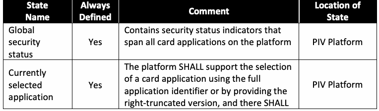
| 状態 | 常時 | コメント | 所在 |
| 名称 | 定義済み | 状態 | |
| グローバルセキュリティ状態 | はい | プラットフォーム上のすべてのカードアプリケーションにまたがるセキュリティ状態インジケーターを含む | PIVプラットフォーム |
| 現在選択されているアプリケーション | はい | プラットフォームは、完全なアプリケーション識別子を用いるか、右側を切り詰めたバージョンを提供することにより、カードアプリケーションの選択をサポートしなければならない（SHALL）。また、必ず（SHALL） | PIVプラットフォーム |
| always be a currently selected application. | |||
| Application security status | Yes | Contains security status indicators local to the PIV Card Application | PIV Card Application |
原本PDFの抜粋画像
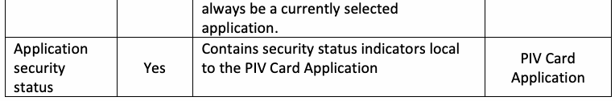
| 常に現在選択されているアプリケーションが存在しなければならない。 | |||
| アプリケーションセキュリティ状態 | はい | PIVカードアプリケーションにローカルなセキュリティ状態インジケーターを含む | PIVカードアプリケーション |
3. PIV Card Application Card Command Interface
3. PIVカードアプリケーションのカードコマンドインターフェース
Table 2 lists the card commands surfaced by the PIV Card Application at the card edge of the ICC when it is the currently selected card application. All PIV Card Application card commands SHALL be supported by a PIV Card Application. Card commands indicated by a “Yes” in the Command Chaining column SHALL support command chaining for transmitting a data string that is too long for a single command, as defined in [ISO7816].
表2には、PIVカードアプリケーションが現在選択されているカードアプリケーションである場合に、ICCのカードエッジでPIVカードアプリケーションが公開するカードコマンドを示す。すべてのPIVカードアプリケーションのカードコマンドは、PIVカードアプリケーションがサポートしなければならない（SHALL）。コマンド連鎖列に「はい」と示されたカードコマンドは、[ISO7816]で定義されているように、単一のコマンドでは長すぎるデータ文字列を送信するためのコマンド連鎖をサポートしなければならない（SHALL）。
Table 2. PIV Card Application card commands
表2. PIVカードアプリケーションのカードコマンド
未レビュー訳| Type | Name | Contact | Contactless | Security Condition | Command |
| Interface | Interface | for Use | Chaining | ||
| PIV Card Application Card Commands for Data Access | SELECT | Yes | Yes | Always | No |
| GET DATA | Yes | Yes | Data Dependent. See Table 2, Part 1. | No | |
| PIV Card Application Card Commands for Authentication | VERIFY | Yes | SM or VCI (see Note 1) | Always | Yes2 |
| CHANGE REFERENCE DATA | Yes | VCI | PIN or OCC | Yes3 | |
| RESET RETRY COUNTER | Yes | No | PIN Unblocking Key | No | |
| GENERAL AUTHENTICATE | Yes | Yes (See Note 2) | Key Dependent. See Table 5, Part 1. | Yes | |
| PIV Card Application Card Commands for Credential Initialization and Administration | PUT DATA | Yes | No | PIV Card Application Administrator | Yes |
| GENERATE ASYMMETRIC KEY PAIR | Yes | No | PIV Card Application Administrator | Yes |
原本PDFの抜粋画像
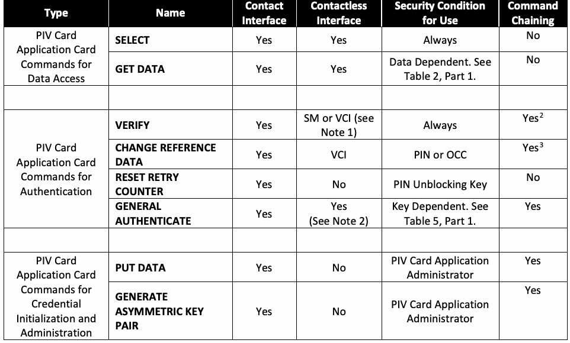
| 種類 | 名称 | 接触 | 非接触 | セキュリティ条件 | コマンド |
| インターフェース | インターフェース | （使用時） | 連鎖 | ||
| PIVカードアプリケーションのデータアクセス用カードコマンド | SELECT | はい | はい | 常時 | いいえ |
| GET DATA | はい | はい | データ依存。第1部の表2を参照。 | いいえ | |
| PIVカードアプリケーションの認証用カードコマンド | VERIFY | はい | SMまたはVCI（注1を参照） | 常時 | はい2 |
| CHANGE REFERENCE DATA | はい | VCI | PINまたはOCC | はい3 | |
| RESET RETRY COUNTER | はい | いいえ | PINブロック解除キー | いいえ | |
| GENERAL AUTHENTICATE | はい | はい（注2を参照） | 鍵依存。第1部の表5を参照。 | はい | |
| PIVカードアプリケーションの資格情報初期化および管理用カードコマンド | PUT DATA | はい | いいえ | PIVカードアプリケーション管理者 | はい |
| GENERATE ASYMMETRIC KEY PAIR | はい | いいえ | PIVカードアプリケーション管理者 | はい |
The PIV Card Application shall return the status word of '6A 81' (Function not supported) when it receives a card command on the contactless interface marked “No” in the Contactless Interface column in Table 2. The PIV Card Application may return a different status word (e.g., '69 82') if the card command can be performed over the contactless interface in support of card management. The PIV Card Application will only perform the command in support of card management if the requirements specified in Section 2.9.2 of FIPS 201-2 are satisfied.
PIVカードアプリケーションは、表2の非接触インターフェース列で「いいえ」と示されたカードコマンドを非接触インターフェースで受信した場合、'6A 81'（機能がサポートされていない）というステータスワードを返さなければならない（shall）。カード管理をサポートするために非接触インターフェース経由でカードコマンドを実行できる場合、PIVカードアプリケーションは別のステータスワード（例: '69 82'）を返してもかまわない（may）。PIVカードアプリケーションは、FIPS 201-2の2.9.2節に規定された要件が満たされる場合に限り、カード管理をサポートするためにそのコマンドを実行する（will）。
未レビュー訳Note 1: For SM, OCC and pairing code alone CAN be submitted via secure messaging (SM) over the contactless interface. All other key references require VCI for communication over the contactless interface.
注1: SMの場合、OCCおよびペアリングコードのみを、非接触インターフェース上のセキュアメッセージング（SM）経由で送信できる（CAN）。その他すべての鍵参照では、非接触インターフェース経由の通信にVCIが必要である。
Note 2: Cryptographic protocols using private/secret keys that require the “PIN” or “OCC” security condition SHALL only be used on the contactless interface after a virtual contact interface (VCI) has been established. The VCI4 is established when the following security condition is met:
注2: 「PIN」または「OCC」セキュリティ条件を必要とする、秘密鍵／共有秘密鍵を使用する暗号プロトコルは、仮想接触インターフェース（VCI）が確立された後に限り、非接触インターフェース上で使用しなければならない（SHALL）。VCI4は、次のセキュリティ条件が満たされると確立される。
未レビュー訳(command is submitted over secure messaging) AND (the Discovery Object is present) AND (Bit 4 of the first byte of the PIN Usage Policy is one) AND ((the security status indicator associated with the pairing code is TRUE) OR (Bit 3 of the first byte of the PIN Usage Policy is one))
(コマンドがセキュアメッセージング経由で送信される) AND (Discovery Objectが存在する) AND (PIN Usage Policyの先頭バイトのビット4が1である) AND ((ペアリングコードに関連付けられたセキュリティ状態インジケーターがTRUEである) OR (PIN Usage Policyの先頭バイトのビット3が1である))
未レビュー訳3.1. PIV Card Application Card Commands for Data Access
3.1. データアクセス用PIVカードアプリケーションカードコマンド
3.1.1. SELECT Card Command
3.1.1. SELECTカードコマンド
The SELECT card command sets the currently selected application. The PIV Card Application SHALL be selected by providing its application identifier (see Part 1, Sec. 2.2) in the data field of the SELECT command.
SELECTカードコマンドは、現在選択されているアプリケーションを設定する。SELECTコマンドのデータフィールドにアプリケーション識別子（第1部2.2節を参照）を指定することにより、PIVカードアプリケーションを選択しなければならない（SHALL）。
未レビュー訳There SHALL be at most one PIV Card Application on any ICC. The PIV Card Application CAN also be made the currently selected application by providing the right-truncated version (see Part 1, Sec. 2.2) — that is, without the 2-byte version number in the data field of the SELECT command.
いずれのICCにも、PIVカードアプリケーションは最大1つしか存在してはならない（SHALL）。右側を切り詰めたバージョン（第1部2.2節を参照）、すなわちSELECTコマンドのデータフィールドに2バイトのバージョン番号を含めない形式を指定することで、PIVカードアプリケーションを現在選択されているアプリケーションにすることもできる（CAN）。
The complete AID of the PIV Card Application – including the 2-byte version – that became the currently selected card application upon successful execution of the SELECT command (using the full or right-truncated PIV AID) SHALL be returned in the application property template.
SELECTコマンド（完全なPIV AIDまたは右側を切り詰めたPIV AIDを使用）の実行に成功した結果、現在選択されているカードアプリケーションとなったPIVカードアプリケーションの完全なAID（2バイトのバージョンを含む）を、アプリケーションプロパティテンプレートで返さなければならない（SHALL）。
未レビュー訳If the currently selected application is the PIV Card Application when the SELECT command is given and the AID in the data field of the SELECT command is either the AID of the PIV Card Application or the right-truncated version thereof, then the PIV Card Application SHALL continue to be the currently selected card application, and the setting of all security status indicators in the PIV Card Application SHALL be unchanged.
SELECTコマンドが指定された時点で現在選択されているアプリケーションがPIVカードアプリケーションであり、かつSELECTコマンドのデータフィールド内のAIDがPIVカードアプリケーションのAIDまたはその右側を切り詰めたバージョンである場合、PIVカードアプリケーションは引き続き現在選択されているカードアプリケーションでなければならず（SHALL）、PIVカードアプリケーション内のすべてのセキュリティ状態インジケーターの設定は変更されてはならない（SHALL）。
If the currently selected application is the PIV Card Application when the SELECT command is given and the AID in the data field of the SELECT command is not the PIV Card Application (or the right-truncated version thereof) but a valid AID supported by the ICC, then the PIV Card Application SHALL be deselected, and all the PIV Card Application security status indicators in the PIV Card Application SHALL be set to FALSE.
SELECTコマンドが指定された時点で現在選択されているアプリケーションがPIVカードアプリケーションであり、かつSELECTコマンドのデータフィールド内のAIDがPIVカードアプリケーションのAID（またはその右側を切り詰めたバージョン）ではなく、ICCがサポートする有効なAIDである場合、PIVカードアプリケーションの選択を解除しなければならず（SHALL）、PIVカードアプリケーションのすべてのセキュリティ状態インジケーターをFALSEに設定しなければならない（SHALL）。
未レビュー訳If the currently selected application is the PIV Card Application when the SELECT command is given and the AID in the data field of the SELECT command is an invalid AID not supported by the ICC, then the PIV Card Application SHALL remain the currently selected application, and all PIV Card Application security status indicators SHALL remain unchanged.
SELECTコマンドが指定された時点で現在選択されているアプリケーションがPIVカードアプリケーションであり、かつSELECTコマンドのデータフィールド内のAIDがICCでサポートされていない無効なAIDである場合、PIVカードアプリケーションは現在選択されているアプリケーションのままでなければならず（SHALL）、すべてのPIVカードアプリケーションのセキュリティ状態インジケーターは変更されないままでなければならない（SHALL）。
未レビュー訳Command Syntax
コマンド構文
未レビュー訳| CLA | '00' |
| INS | 'A4' |
| P1 | '04' |
| P2 | '00' |
| Lc | Length of application identifier |
| Data Field | AID of the PIV Card Application using the full AID or the right- truncated AID (see Sec. 2.2, Part 1) |
| Le | '00' |
原本PDFの抜粋画像
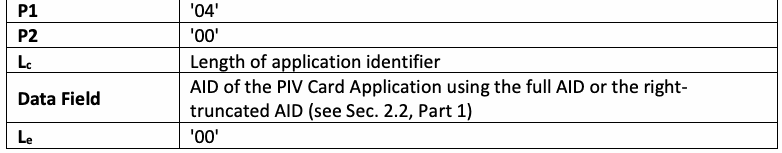
| P1 | '04' |
| P2 | '00' |
| Lc | アプリケーション識別子の長さ |
| データフィールド | 完全なAIDまたは右側を切り詰めたAIDを使用したPIVカードアプリケーションのAID（第1部2.2節を参照） |
| Le | '00' |
Response Syntax
応答構文
未レビュー訳| Data Field | Application property template (APT). See Table 3 below |
| SW1-SW2 | Status word |
原本PDFの抜粋画像
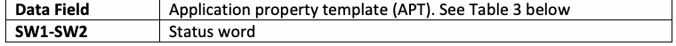
| データフィールド | アプリケーションプロパティテンプレート（APT）。下記の表3を参照 |
| SW1-SW2 | ステータスワード |
Upon selection, the PIV Card Application SHALL return the application property template described in Table 3.
選択時に、PIVカードアプリケーションは表3に記載されたアプリケーションプロパティテンプレートを返さなければならない（SHALL）。
未レビュー訳Table 3. Data objects in the PIV Card Application property template (Tag '61')
表3. PIVカードアプリケーションプロパティテンプレート（タグ '61'）内のデータオブジェクト
未レビュー訳| Description | Tag | M/O/C | Comment |
| Application identifier of application | '4F' | M | The PIX of the AID includes the encoding of the version of the PIV Card Application. See Sec. 2.2, Part 1. |
| Coexistent tag allocation authority | '79' | M | Coexistent tag allocation authority template. See Table 4. |
| Application label | '50' | O | Text describing the application (e.g., for use on a human-machine interface) |
| Uniform resource locator | '5F50' | O | Reference to the specification describing the application |
| Cryptographic algorithms supported | 'AC' | C | Cryptographic algorithm identifier template. See Table 5. |
原本PDFの抜粋画像
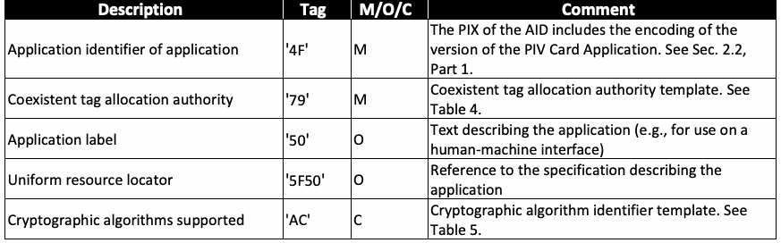
| 説明 | タグ | M/O/C | コメント |
| アプリケーションのアプリケーション識別子 | '4F' | M | AIDのPIXにはPIVカードアプリケーションのバージョン符号化が含まれる。第1部2.2節を参照。 |
| 共存タグ割当機関 | '79' | M | 共存タグ割当機関テンプレート。表4を参照。 |
| アプリケーションラベル | '50' | O | アプリケーションを説明するテキスト（例: 人間と機械のインターフェースでの使用） |
| Uniform resource locator | '5F50' | O | アプリケーションを説明する仕様への参照 |
| サポートされる暗号アルゴリズム | 'AC' | C | 暗号アルゴリズム識別子テンプレート。表5を参照。 |
Table 4. Data objects in a coexistent tag allocation authority template (Tag '79')
表4. 共存タグ割当機関テンプレート（タグ '79'）内のデータオブジェクト
未レビュー訳| 名称 | タグ | M/O | コメント |
| アプリケーション識別子 | '4F' | M | 第1部2.2節を参照 |
A PIV Card Application MAY use a subset of the cryptographic algorithms defined in SP 800-78. Tag 0xAC encodes the cryptographic algorithms supported by the PIV Card Application. The encoding of tag 0xAC SHALL be as specified in Table 5. Each instance of tag 0x80 SHALL encapsulate one algorithm. The presence of algorithm identifier '27' or '2E' indicates that the corresponding cipher suite is supported by the PIV Card Application for secure messaging and that the PIV Card Application possesses a PIV Secure Messaging key of the appropriate size for the specified cipher suite. Tag 0xAC SHALL be present and indicate algorithm identifier 0x27 or 0x2E (but not both) when the PIV Card Application supports secure messaging.
PIVカードアプリケーションは、SP 800-78で定義されている暗号アルゴリズムの一部を使用してもかまわない（MAY）。タグ0xACはPIVカードアプリケーションがサポートする暗号アルゴリズムを符号化する。タグ0xACの符号化は表5に従わなければならない（SHALL）。タグ0x80の各インスタンスは、1つのアルゴリズムをカプセル化しなければならない（SHALL）。アルゴリズム識別子'27'または'2E'が存在する場合、対応する暗号スイートがセキュアメッセージング用にPIVカードアプリケーションでサポートされており、PIVカードアプリケーションが指定された暗号スイートに適切なサイズのPIVセキュアメッセージング鍵を保有することを示す。PIVカードアプリケーションがセキュアメッセージングをサポートする場合、タグ0xACが存在し、アルゴリズム識別子0x27または0x2Eのいずれか（両方ではない）を示さなければならない（SHALL）。
未レビュー訳Table 5. Data objects in a cryptographic algorithm identifier template (Tag 'AC')
表5. 暗号アルゴリズム識別子テンプレート（タグ 'AC'）内のデータオブジェクト
未レビュー訳| Name | Tag | M/O | Comment |
| Cryptographic algorithm identifier | '80' | M | For values, see [SP800-78, Table 9] |
| Object identifier | '06' | M | Its value is set to 0x00 |
原本PDFの抜粋画像
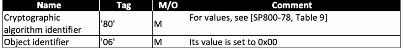
| 名称 | タグ | M/O | コメント |
| 暗号アルゴリズム識別子 | '80' | M | 値については[SP800-78, Table 9]を参照 |
| オブジェクト識別子 | '06' | M | 値は0x00に設定される |
| SW1 | SW2 | Meaning |
| '6A' | '82' | Application not found |
| '90' | '00' | Successful execution |
原本PDFの抜粋画像
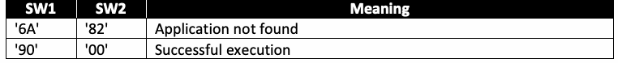
| SW1 | SW2 | 意味 |
| '6A' | '82' | アプリケーションが見つからない |
| '90' | '00' | 実行成功 |
3.1.2. GET DATA Card Command
3.1.2. GET DATAカードコマンド
The GET DATA card command retrieves the data content of the single data object whose tag is given in the data field.5
GET DATAカードコマンドは、データフィールドにタグが指定された単一のデータオブジェクトのデータ内容を取得する。5
未レビュー訳Command Syntax
コマンド構文
未レビュー訳| CLA | '00' or '0C' for secure messaging |
| INS | 'CB' |
| P1 | '3F' |
| P2 | 'FF' |
| Lc | Length of data field6 |
| Data Field | See Table 6 |
| Le | '00' |
原本PDFの抜粋画像
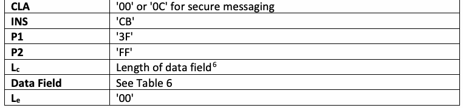
| CLA | セキュアメッセージングの場合は'00'または'0C' |
| INS | 'CB' |
| P1 | '3F' |
| P2 | 'FF' |
| Lc | データフィールドの長さ6 |
| データフィールド | 表6を参照 |
| Le | '00' |
Table 6. Data objects in the data field of the GET DATA card command
表6. GET DATAカードコマンドのデータフィールド内のデータオブジェクト
未レビュー訳| Name | Tag | M/O | Comment |
| Tag list | '5C' | M | BER-TLV tag of the data object to be retrieved. See Table 3, Part 1. |
原本PDFの抜粋画像
| 名称 | タグ | M/O | コメント |
| タグリスト | '5C' | M | 取得するデータオブジェクトのBER-TLVタグ。第1部の表3を参照。 |
Response Syntax
応答構文
未レビュー訳For the 0x7E Discovery Object (if present) and the 0x7F61 BIT Group Template (if present):
0x7E Discovery Object（存在する場合）および0x7F61 BIT Group Template（存在する場合）について:
| Data Field | - BER-TLV of the 0x7E Discovery data object (see Sec. 3.3.2, Part 1 for a description of the Discovery Object’s structure returned in the data field) or - BER-TLV of the 0x7F61 BIT Group Template (see Table 7 of SP 800-76) |
| SW1-SW2 | Status word |
原本PDFの抜粋画像
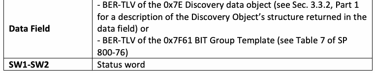
| データフィールド | - 0x7E Discovery data objectのBER-TLV（データフィールドで返されるDiscovery Objectの構造の説明については第1部3.3.2節を参照）、または - 0x7F61 BIT Group TemplateのBER-TLV（SP 800-76の表7を参照） |
| SW1-SW2 | ステータスワード |
For all other PIV data objects (if present):
その他すべてのPIVデータオブジェクト（存在する場合）について:
| Data Field | BER-TLV with the tag '53' containing in the value field of the requested data object. |
| SW1-SW2 | Status word |
原本PDFの抜粋画像
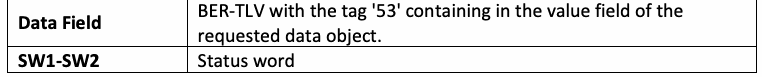
| データフィールド | 要求されたデータオブジェクトの値フィールド内にタグ'53'を含むBER-TLV。 |
| SW1-SW2 | ステータスワード |
| SW1 | SW2 | Meaning |
| '61' | 'xx' | Successful execution where SW2 encodes the number of response data bytes still available |
原本PDFの抜粋画像
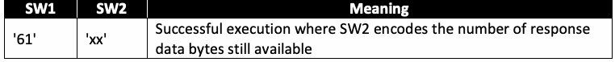
| SW1 | SW2 | 意味 |
| '61' | 'xx' | 実行成功。SW2は、引き続き取得可能な応答データバイト数を符号化する |
| '69' | '82' | Security status not satisfied |
| '6A' | '82' | Data object not found |
| '90' | '00' | Successful execution |
原本PDFの抜粋画像
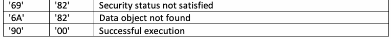
| '69' | '82' | セキュリティ状態が満たされていない |
| '6A' | '82' | データオブジェクトが見つからない |
| '90' | '00' | 実行成功 |
3.2. PIV Card Application Card Commands for Authentication
3.2. PIVカードアプリケーションの認証用カードコマンド
3.2.1. VERIFY Card Command
3.2.1. VERIFYカードコマンド
The VERIFY card command initiates the comparison in the card of the reference data indicated by the key reference with authentication data in the data field of the command.
VERIFYカードコマンドは、コマンドのデータフィールドにある認証データと、鍵参照で示される参照データとのカード内での照合を開始する。
Key reference '80' specific to the PIV Card Application (i.e., local key references) and, optionally, the Global PIN with key reference '00', the OCC data (key references '96' and '97'), and pairing code (key reference '98') are the only key references that MAY be verified by the PIV Card Application’s VERIFY command. The PIV Card Application MAY allow other key references to be verified by the PIV Card Application’s VERIFY command if they are used for card management operations.
PIVカードアプリケーション固有の鍵参照'80'（すなわちローカル鍵参照）、および任意でGlobal PIN（鍵参照'00'）、OCCデータ（鍵参照'96'および'97'）、ペアリングコード（鍵参照'98'）のみを、PIVカードアプリケーションのVERIFYコマンドで検証してもかまわない（MAY）。カード管理操作に他の鍵参照を使用する場合、PIVカードアプリケーションはVERIFYコマンドでそれらを検証することを許可してもかまわない（MAY）。
Key reference '80' SHALL be able to be verified by the PIV Card Application VERIFY command. If the PIV Card Application does not contain the Discovery Object as described in Part 1, then no other key reference SHALL be able to be verified by the PIV Card Application VERIFY command. If the PIV Card Application contains the Discovery Object, then the ability of the PIV Card Application’s VERIFY command to verify key references '00', '96', '97', and '98' SHALL be as specified by the first byte of the Discovery Object’s PIN Usage Policy value:
鍵参照'80'はPIVカードアプリケーションのVERIFYコマンドで検証可能でなければならない（SHALL）。第1部で説明されているDiscovery ObjectがPIVカードアプリケーションに含まれていない場合、その他の鍵参照はPIVカードアプリケーションのVERIFYコマンドで検証可能であってはならない（SHALL）。PIVカードアプリケーションにDiscovery Objectが含まれる場合、鍵参照'00'、'96'、'97'、および'98'を検証するPIVカードアプリケーションのVERIFYコマンドの機能は、Discovery ObjectのPIN Usage Policy値の先頭バイトによって次のように規定されなければならない（SHALL）。
•If Bit 6 is one, then key reference '00' SHALL be able to be verified by the PIV Card Application VERIFY command.
•ビット6が1の場合、鍵参照'00'はPIVカードアプリケーションのVERIFYコマンドで検証可能でなければならない（SHALL）。
•If Bit 5 is one, then key references '96' and/or '97', as specified in the Biometric Information Templates Group Template, SHALL be able to be verified by the PIV Card Application VERIFY command.
•ビット5が1の場合、Biometric Information Templates Group Templateで規定される鍵参照'96'および／または'97'は、PIVカードアプリケーションのVERIFYコマンドで検証可能でなければならない（SHALL）。
未レビュー訳•If Bit 4 is one, then key reference '98' SHALL be able to be verified by the PIV Card Application VERIFY command.
•ビット4が1の場合、鍵参照'98'はPIVカードアプリケーションのVERIFYコマンドで検証可能でなければならない（SHALL）。
未レビュー訳If any key reference value is specified that CANNOT be verified by the PIV Card Application, then the PIV Card Application SHALL return the status word '6A 88'.
PIVカードアプリケーションで検証できない（CANNOT）鍵参照値が指定された場合、PIVカードアプリケーションはステータスワード'6A 88'を返さなければならない（SHALL）。
The VERIFY command MAY be submitted over the contact interface and, under some conditions, over the contactless interface. The card command SHALL fail if:
VERIFYコマンドは接触インターフェース経由で送信してもよく（MAY）、特定の条件下では非接触インターフェース経由で送信してもかまわない。次の場合、カードコマンドは失敗しなければならない（SHALL）。
•The key reference is '00' or '80', and the command is not submitted over either the contact interface or the VCI, or
•鍵参照が'00'または'80'であり、コマンドが接触インターフェースまたはVCIのいずれからも送信されていない場合、または
•The key reference is '96', '97', or '98', and the command is submitted over the contactless interface without secure messaging.
•鍵参照が'96'、'97'、または'98'であり、コマンドがセキュアメッセージングなしで非接触インターフェース経由で送信された場合。
The P1 parameter SHALL be either '00' or 'FF'. If any other value is specified for the P1 parameter, then the PIV Card Application SHALL return the status word '6A 86'.
P1パラメーターは'00'または'FF'でなければならない（SHALL）。P1パラメーターにその他の値が指定された場合、PIVカードアプリケーションはステータスワード'6A 86'を返さなければならない（SHALL）。
未レビュー訳If the VERIFY command fails for one of the reasons specified above, then the security status and the retry counter of the key reference SHALL remain unchanged.
上記の理由のいずれかによりVERIFYコマンドが失敗した場合、鍵参照のセキュリティ状態および再試行カウンターは変更されないままでなければならない（SHALL）。
If P1='00' and L and the command data field are absent, the command CAN be used to retrieve
P1='00'であり、Lおよびコマンドデータフィールドが存在しない場合、このコマンドは取得に使用できる（CAN）。
未レビュー訳c
未レビュー訳the number of further retries allowed ('63 CX') or to check whether verification is not needed ('90 00').
許可される残りの再試行回数（'63 CX'）、または検証が不要であるかどうか（'90 00'）を確認する。
未レビュー訳If P1='00' and L and the command data field are present, then the authentication data in the
P1='00'であり、Lおよびコマンドデータフィールドが存在する場合、
未レビュー訳c
未レビュー訳command data field SHALL be compared against the reference data associated with the key reference, as specified in the following subsections. However, if the key reference is '00', '80', '96', or '97' and the current value of the retry counter associated with the key reference is zero, then the PIV Card Application SHALL return the status word '69 83'.7 In order to protect against blocking over the contactless interface, PIV Card Applications that implement secure messaging SHALL define an issuer-specified intermediate retry value for each of these key references and return '69 83' if the command is submitted over the contactless interface (over secure messaging or the VCI, as required for the key reference) and the current value of the retry counter associated with the key reference is at or below the issuer-specified intermediate retry value. If status word '69 83' is returned, then the comparison SHALL NOT be made, and the security status and the retry counter of the key reference SHALL remain unchanged.
コマンドデータフィールド内の認証データを、以下の各項で規定されるとおり、鍵参照に関連付けられた参照データと比較しなければならない（SHALL）。ただし、鍵参照が'00'、'80'、'96'、または'97'であり、鍵参照に関連付けられた再試行カウンターの現在値が0の場合、PIVカードアプリケーションはステータスワード'69 83'を返さなければならない（SHALL）。7 非接触インターフェース経由のブロックを防ぐため、セキュアメッセージングを実装するPIVカードアプリケーションは、これらの各鍵参照に対して発行者指定の中間再試行値を定義しなければならず（SHALL）、コマンドが非接触インターフェース経由で送信され（鍵参照で必要とされるセキュアメッセージングまたはVCIを経由）、鍵参照に関連付けられた再試行カウンターの現在値が発行者指定の中間再試行値以下である場合、'69 83'を返す。ステータスワード'69 83'が返された場合、比較を行ってはならず（SHALL NOT）、鍵参照のセキュリティ状態および再試行カウンターは変更されないままでなければならない（SHALL）。
未レビュー訳If P1='FF', and L and the command data field are absent, the command SHALL reset the
P1='FF'であり、Lおよびコマンドデータフィールドが存在しない場合、コマンドはリセットしなければならない（SHALL）。
未レビュー訳c
未レビュー訳security status of the key reference in P2. The security status of the key reference specified in P2 SHALL be set to FALSE, and the retry counter associated with the key reference SHALL remain unchanged.
P2で指定された鍵参照のセキュリティ状態をリセットする。P2で指定された鍵参照のセキュリティ状態をFALSEに設定しなければならず（SHALL）、鍵参照に関連付けられた再試行カウンターは変更されないままでなければならない（SHALL）。
未レビュー訳3.2.1.1. PIV Card Application PIN and Global PIN
3.2.1.1. PIVカードアプリケーションPINおよびGlobal PIN
If the key reference is '00' or '80' and the authentication data in the command data field does not satisfy the criteria in Sec. 2.4.3, then the card command SHALL fail, and the PIV Card Application SHALL return either the status word '6A 80' or '63 CX'. If status word '6A 80' is returned, the security status and the retry counter of the key reference SHALL remain unchanged.8 If status word '63 CX' is returned, the security status of the key reference SHALL be set to FALSE, and the retry counter associated with the key reference SHALL be decremented by one.
鍵参照が'00'または'80'で、コマンドデータフィールド内の認証データが2.4.3節の基準を満たさない場合、カードコマンドは失敗しなければならず（SHALL）、PIVカードアプリケーションはステータスワード'6A 80'または'63 CX'のいずれかを返さなければならない（SHALL）。ステータスワード'6A 80'が返された場合、鍵参照のセキュリティ状態および再試行カウンターは変更されないままでなければならない（SHALL）。8 ステータスワード'63 CX'が返された場合、鍵参照のセキュリティ状態をFALSEに設定しなければならず（SHALL）、鍵参照に関連付けられた再試行カウンターを1減らさなければならない（SHALL）。
未レビュー訳If the authentication data in the command data field is properly formatted (see previous paragraph) and does not match reference data associated with the key reference, then the card command SHALL fail, the PIV Card Application SHALL return the status word '63 CX', the security status of the key reference SHALL be set to FALSE, and the retry counter associated with the key reference SHALL be decremented by one.
コマンドデータフィールド内の認証データが正しく形式化されていて（前段落を参照）、鍵参照に関連付けられた参照データと一致しない場合、カードコマンドは失敗しなければならず（SHALL）、PIVカードアプリケーションはステータスワード'63 CX'を返さなければならない（SHALL）。さらに、鍵参照のセキュリティ状態をFALSEに設定しなければならず（SHALL）、鍵参照に関連付けられた再試行カウンターを1減らさなければならない（SHALL）。
If the card command succeeds, then the security status of the key reference SHALL be set to TRUE, and the retry counter associated with the key reference SHALL be set to the reset retry value associated with the key reference. The initial value of the retry counter and the reset retry value associated with the key reference (i.e., the number of successive failures/retries before the retry counter associated with the key reference reaches zero) is 10 or less for both key references in accordance with FIPS 201, Section 2.9.3.
カードコマンドが成功した場合、鍵参照のセキュリティ状態をTRUEに設定しなければならず（SHALL）、鍵参照に関連付けられた再試行カウンターを、その鍵参照に対応するリセット再試行値に設定しなければならない（SHALL）。FIPS 201第2.9.3節に従い、鍵参照に対応する再試行カウンターの初期値およびリセット再試行値（すなわち、再試行カウンターが0に達するまでの連続した失敗／再試行回数）は、どちらの鍵参照についても10以下である。
3.2.1.2. On-Card Biometric Comparison
3.2.1.2. カード上での生体情報照合
If the key reference is '96' or '97' and the authentication data in the command data field is not of length 3N, where N satisfies the requirements for the minimum and maximum number of minutiae specified in the BIT, then the card command SHALL fail, and the PIV Card Application SHALL return the status word '6A 80'. The security status and the retry counter of the key reference SHALL remain unchanged.
鍵参照が'96'または'97'であり、コマンドデータフィールド内の認証データの長さが3N（NはBITで規定された細部点数の最小数および最大数の要件を満たす）でない場合、カードコマンドは失敗しなければならず（SHALL）、PIVカードアプリケーションはステータスワード'6A 80'を返さなければならない（SHALL）。鍵参照のセキュリティ状態および再試行カウンターは変更されないままでなければならない（SHALL）。
未レビュー訳If the authentication data in the command data field is properly formatted (see previous paragraph) and does not match the reference data associated with the key reference, then the card command SHALL fail, the PIV Card Application SHALL return the status word '63 CX', the security status of the key reference SHALL be set to FALSE, and the retry counter associated with the key reference SHALL be decremented by one.
コマンドデータフィールド内の認証データが正しく形式化されていて（前段落を参照）、鍵参照に関連付けられた参照データと一致しない場合、カードコマンドは失敗しなければならず（SHALL）、PIVカードアプリケーションはステータスワード'63 CX'を返さなければならない（SHALL）。さらに、鍵参照のセキュリティ状態をFALSEに設定しなければならず（SHALL）、鍵参照に関連付けられた再試行カウンターを1減らさなければならない（SHALL）。
未レビュー訳If the card command succeeds, then the security status of the key reference SHALL be set to TRUE, and the retry counter associated with the key reference SHALL be set to the reset retry value associated with the key reference. The initial value of the retry counter and the reset retry value associated with the key reference (i.e., the number of successive failures/retries before the retry counter associated with the key reference reaches zero) are 10 or less in accordance with FIPS 201, Section 2.9.3.
カードコマンドが成功した場合、鍵参照のセキュリティ状態をTRUEに設定しなければならず（SHALL）、鍵参照に関連付けられた再試行カウンターを、その鍵参照に対応するリセット再試行値に設定しなければならない（SHALL）。FIPS 201第2.9.3節に従い、鍵参照に対応する再試行カウンターの初期値およびリセット再試行値（すなわち、再試行カウンターが0に達するまでの連続した失敗／再試行回数）は10以下である。
3.2.1.3. Pairing Code
3.2.1.3. ペアリングコード
If the key reference is '98' and the authentication data in the command data field does not match the reference data associated with the key reference, the command SHALL fail, and the PIV Card Application SHALL return the status word '63 00'. If the authentication data in the command data field does not satisfy the criteria in Sec. 2.4.3, then the PIV Card Application MAY return the status word '6A 80' instead of '63 00'. If status word '6A 80' is returned, the security status of the key reference SHALL remain unchanged. If status word '63 00' is returned, the security status of the key reference SHALL be set to FALSE.
鍵参照が'98'であり、コマンドデータフィールド内の認証データが鍵参照に関連付けられた参照データと一致しない場合、コマンドは失敗しなければならず（SHALL）、PIVカードアプリケーションはステータスワード'63 00'を返さなければならない（SHALL）。コマンドデータフィールド内の認証データが2.4.3節の基準を満たさない場合、PIVカードアプリケーションは'63 00'の代わりにステータスワード'6A 80'を返してもかまわない（MAY）。ステータスワード'6A 80'が返された場合、鍵参照のセキュリティ状態は変更されないままでなければならない（SHALL）。ステータスワード'63 00'が返された場合、鍵参照のセキュリティ状態をFALSEに設定しなければならない（SHALL）。
If the card command succeeds, then the security status of the key reference SHALL be set to
カードコマンドが成功した場合、鍵参照のセキュリティ状態を次の値に設定しなければならない（SHALL）。
未レビュー訳TRUE.
TRUE。
未レビュー訳Command Syntax
コマンド構文
未レビュー訳| CLA | '00' or '10' indicating command chaining '0C' or '1C' for secure messaging |
| INS | '20' |
| P1 | '00' or 'FF' |
原本PDFの抜粋画像
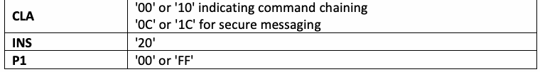
| CLA | コマンド連鎖を示す'00'または'10'。セキュアメッセージングの場合は'0C'または'1C' |
| INS | '20' |
| P1 | '00'または'FF' |
| P2 | Key reference. See Part 1, Table 4a. |
| Lc | Absent9 – for absent command data field '08' – for PIV Card Application PIN, Global PIN, or pairing code 3N – for OCC data (where N is the number of minutiae) |
| Data Field | Absent,7 PIV Card Application PIN, Global PIN, pairing code authentication data as described in Sec. 2.4.3, or OCC data as described in Sec. 5.5.2 of [SP 800-76] |
| Le | Absent |
原本PDFの抜粋画像
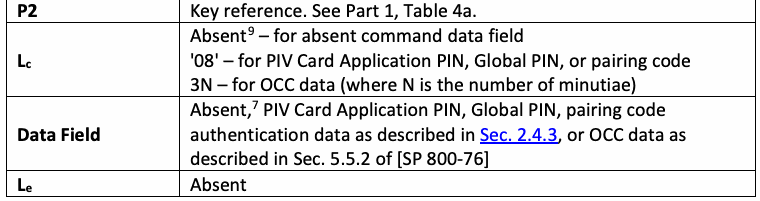
| P2 | 鍵参照。第1部の表4aを参照。 |
| Lc | 存在しない9 – コマンドデータフィールドが存在しない場合。'08' – PIVカードアプリケーションPIN、Global PIN、またはペアリングコードの場合。3N – OCCデータの場合（Nは細部点数） |
| データフィールド | 存在しない7、PIVカードアプリケーションPIN、Global PIN、ペアリングコード（2.4.3節で説明されている認証データ）、または[SP 800-76]の5.5.2節で説明されているOCCデータ |
| Le | 存在しない |
Response Syntax
応答構文
未レビュー訳| SW1 | SW2 | Meaning |
| '63' | '00' | Verification failed |
| '63' | 'CX' | Verification failed, X indicates the number of further allowed retries |
| '69' | '82' | Security status not satisfied |
| '69' | '83' | Authentication method blocked |
| '6A' | '80' | Incorrect parameter in command data field |
| '6A' | '81' | Function not supported |
| '6A' | '86' | Incorrect parameter in P1 |
| '6A' | '88' | Key reference not found |
| '90' | '00' | Successful execution |
原本PDFの抜粋画像
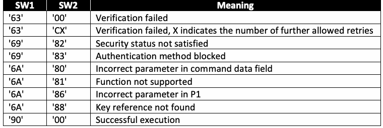
| SW1 | SW2 | 意味 |
| '63' | '00' | 検証失敗 |
| '63' | 'CX' | 検証失敗。Xは許可される残りの再試行回数を示す |
| '69' | '82' | セキュリティ状態が満たされていない |
| '69' | '83' | 認証方法がブロックされている |
| '6A' | '80' | コマンドデータフィールド内のパラメーターが不正 |
| '6A' | '81' | 機能がサポートされていない |
| '6A' | '86' | P1内のパラメーターが不正 |
| '6A' | '88' | 鍵参照が見つからない |
| '90' | '00' | 実行成功 |
3.2.2. CHANGE REFERENCE DATA Card Command
3.2.2. CHANGE REFERENCE DATAカードコマンド
The CHANGE REFERENCE DATA card command initiates the comparison of the authentication data in the command data field with the current value of the reference data and replaces the reference data with new reference data if the comparison is successful. This command CAN be used by the PIV Card Application Administrator and the Cardholder. The CHANGE REFERENCE DATA command SHALL support command chaining if the PIV Card Application supports OCC.
CHANGE REFERENCE DATAカードコマンドは、コマンドデータフィールド内の認証データと参照データの現在値との照合を開始し、照合に成功した場合は参照データを新しい参照データに置き換える。このコマンドはPIVカードアプリケーション管理者およびカード所有者が使用できる（CAN）。PIVカードアプリケーションがOCCをサポートする場合、CHANGE REFERENCE DATAコマンドはコマンド連鎖をサポートしなければならない（SHALL）。
未レビュー訳Only reference data associated with key references '80', '81' specific to the PIV Card Application (i.e., local key reference), and the Global PIN with key reference '00' MAY be changed by the PIV Card Application CHANGE REFERENCE DATA command. The PIV Card Application MAY allow the reference data associated with other key references (e.g., ‘96’ and ‘97’) to be changed by the PIV Card Application CHANGE REFERENCE DATA if they are used for card management operations and the requirements specified in Section 2.9.2 of FIPS 201-3 are satisfied. If any key reference value is specified that is not supported by the card, the PIV Card Application SHALL return the status word '6A 88'. Key reference '80' reference data SHALL be changed by the PIV Card Application CHANGE REFERENCE DATA command. The ability to change reference data associated with key references '81' and '00' using the PIV Card Application CHANGE REFERENCE DATA command is optional.
PIVカードアプリケーション固有の鍵参照'80'および'81'（すなわちローカル鍵参照）、ならびに鍵参照'00'のGlobal PINに関連付けられた参照データのみを、PIVカードアプリケーションのCHANGE REFERENCE DATAコマンドで変更してもかまわない（MAY）。他の鍵参照（例: ‘96’および‘97’）に関連付けられた参照データがカード管理操作に使用され、FIPS 201-3の2.9.2節に規定された要件を満たす場合、PIVカードアプリケーションはCHANGE REFERENCE DATAコマンドでそれらの参照データの変更を許可してもかまわない（MAY）。カードでサポートされていない鍵参照値が指定された場合、PIVカードアプリケーションはステータスワード'6A 88'を返さなければならない（SHALL）。鍵参照'80'の参照データは、PIVカードアプリケーションのCHANGE REFERENCE DATAコマンドによって変更できなければならない（SHALL）。PIVカードアプリケーションのCHANGE REFERENCE DATAコマンドを使用して鍵参照'81'および'00'に関連付けられた参照データを変更する機能は任意である。
If key reference '81' is specified and the command is not submitted over the contact interface, then the card command SHALL fail. If key reference '00' or '80' is specified and the command is not submitted over either the contact interface or the VCI, then the card command SHALL fail.
鍵参照'81'が指定され、コマンドが接触インターフェース経由で送信されていない場合、カードコマンドは失敗しなければならない（SHALL）。鍵参照'00'または'80'が指定され、コマンドが接触インターフェースまたはVCIのいずれからも送信されていない場合も、カードコマンドは失敗しなければならない（SHALL）。
In each case, the security status and the retry counter of the key reference SHALL remain unchanged.
いずれの場合も、鍵参照のセキュリティ状態および再試行カウンターは変更されないままでなければならない（SHALL）。
未レビュー訳If the current value of the retry counter associated with the key reference is zero, then the reference data associated with the key reference SHALL NOT be changed, and the PIV Card Application SHALL return the status word '69 83'. If the command is submitted over the contactless interface (VCI) and the current value of the retry counter associated with the key reference is at or below the issuer-specified intermediate retry value (see Sec. 3.2.1), then the reference data associated with the key reference SHALL NOT be changed, and the PIV Card Application SHALL return the status word '69 83'.
鍵参照に関連付けられた再試行カウンターの現在値が0の場合、鍵参照に関連付けられた参照データを変更してはならず（SHALL NOT）、PIVカードアプリケーションはステータスワード'69 83'を返さなければならない（SHALL）。コマンドが非接触インターフェース（VCI）経由で送信され、鍵参照に関連付けられた再試行カウンターの現在値が発行者指定の中間再試行値（3.2.1節を参照）以下の場合も、参照データを変更してはならず（SHALL NOT）、PIVカードアプリケーションはステータスワード'69 83'を返さなければならない（SHALL）。
If the authentication data in the command data field does not match the current value of the reference data or if either the authentication data or the new reference data in the command data field of the command does not satisfy the criteria in Sec. 2.4.3, the PIV Card Application SHALL NOT change the reference data associated with the key reference and SHALL return either status word '6A 80' or '63 CX', with the following restrictions. If the authentication data in the command data field satisfies the criteria in Sec. 2.4.3 and matches the current value of the reference data, but the new reference data in the command data field of the command does not satisfy the criteria in Sec. 2.4.3, the PIV Card Application SHALL return status word '6A 80'. If the authentication data in the command data field does not match the current value of the reference data, but both the authentication data and the new reference data in the command data field of the command satisfy the criteria in Sec. 2.4.3, the PIV Card Application SHALL return status word '63 CX'. If status word '6A 80' is returned, the security status and retry counter associated with the key reference SHALL remain unchanged.10 If status word '63 CX' is returned, the security status of the key reference SHALL be set to FALSE, and the retry counter associated with the key reference SHALL be decremented by one.
コマンドデータフィールド内の認証データが参照データの現在値と一致しない場合、またはコマンドデータフィールド内の認証データもしくは新しい参照データが2.4.3節の基準を満たさない場合、PIVカードアプリケーションは鍵参照に関連付けられた参照データを変更してはならず（SHALL NOT）、ステータスワード'6A 80'または'63 CX'のいずれかを、次の制約に従って返さなければならない（SHALL）。コマンドデータフィールド内の認証データが2.4.3節の基準を満たし、参照データの現在値と一致する一方、新しい参照データが2.4.3節の基準を満たさない場合、PIVカードアプリケーションはステータスワード'6A 80'を返さなければならない（SHALL）。コマンドデータフィールド内の認証データが参照データの現在値と一致しない一方、認証データと新しい参照データの両方が2.4.3節の基準を満たす場合、PIVカードアプリケーションはステータスワード'63 CX'を返さなければならない（SHALL）。ステータスワード'6A 80'が返された場合、鍵参照に関連付けられたセキュリティ状態および再試行カウンターは変更されないままでなければならない（SHALL）。10 ステータスワード'63 CX'が返された場合、鍵参照のセキュリティ状態をFALSEに設定しなければならず（SHALL）、鍵参照に関連付けられた再試行カウンターを1減らさなければならない（SHALL）。
未レビュー訳If the card command succeeds, then the security status of the key reference SHALL be set to TRUE, and the retry counter associated with the key reference SHALL be set to the reset retry value associated with the key reference.
カードコマンドが成功した場合、鍵参照のセキュリティ状態をTRUEに設定しなければならず（SHALL）、鍵参照に関連付けられた再試行カウンターを、その鍵参照に対応するリセット再試行値に設定しなければならない（SHALL）。
The initial value of the retry counter and the reset retry value associated with the key reference (i.e., the number of successive failures/retries before the retry counter associated with the key reference reaches zero) are issuer-dependent.
鍵参照に関連付けられた再試行カウンターの初期値およびリセット再試行値（すなわち、鍵参照の再試行カウンターが0に達するまでの連続した失敗／再試行回数）は、発行者に依存する。
Command Syntax
コマンド構文
未レビュー訳| CLA | '00' or '0C' for secure messaging |
| INS | '24' |
| P1 | '00' |
| P2 | '00' (Global PIN), '80' (PIV Card Application PIN), or '81' (PUK) |
| Lc | '10' |
| Data Field | Current PIN authentication data concatenated without delimitation with the new PIN reference data, both PINs as described in Sec. 2.4.3 |
| Le | Absent |
原本PDFの抜粋画像
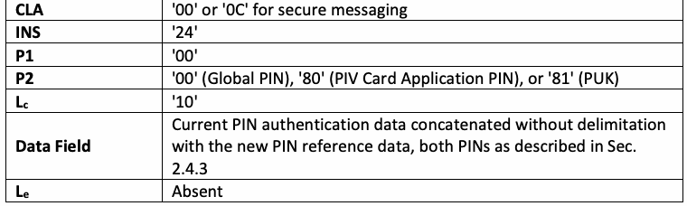
| CLA | セキュアメッセージングの場合は'00'または'0C' |
| INS | '24' |
| P1 | '00' |
| P2 | '00'（Global PIN）、'80'（PIVカードアプリケーションPIN）、または'81'（PUK） |
| Lc | '10' |
| データフィールド | 現在のPIN認証データに新しいPIN参照データを区切りなしで連結したもの。両方のPINは2.4.3節に記載。 |
| Le | 存在しない |
Response Syntax
応答構文
未レビュー訳| SW1 | SW2 | Meaning |
| '63' | 'CX' | Reference data change failed, X indicates the number of further allowed retries or resets |
| '69' | '82' | Security status not satisfied |
| '69' | '83' | Reference data change operation blocked |
| '6A' | '80' | Incorrect parameter in command data field |
| '6A' | '81' | Function not supported |
| '6A' | '88' | Key reference not found |
| '90' | '00' | Successful execution |
原本PDFの抜粋画像
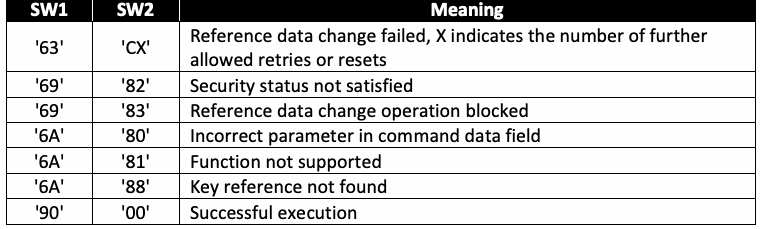
| SW1 | SW2 | 意味 |
| '63' | 'CX' | 参照データの変更に失敗。Xは許可される残りの再試行回数またはリセット回数を示す |
| '69' | '82' | セキュリティ状態が満たされていない |
| '69' | '83' | 参照データ変更操作がブロックされている |
| '6A' | '80' | コマンドデータフィールド内のパラメーターが不正 |
| '6A' | '81' | 機能がサポートされていない |
| '6A' | '88' | 鍵参照が見つからない |
| '90' | '00' | 実行成功 |
3.2.3. RESET RETRY COUNTER Card Command
3.2.3. RESET RETRY COUNTERカードコマンド
The RESET RETRY COUNTER card command resets the retry counter of the PIN to its initial value and changes the reference data. The command enables recovery of the PIV Card Application PIN if the cardholder forgets it.
RESET RETRY COUNTERカードコマンドは、PINの再試行カウンターを初期値にリセットし、参照データを変更する。このコマンドにより、カード所有者がPINを忘れた場合にPIVカードアプリケーションPINを復旧できる。
未レビュー訳The only key reference allowed in the P2 parameter of the RESET RETRY COUNTER command is '80', the PIV Card Application PIN. The PIV Card Application MAY allow the reference data associated with other key references to be changed by the PIV Card Application RESET RETRY but only if the requirements specified in Section 2.9.2 of FIPS 201-2 are satisfied. If a key reference is specified in P2 that is not supported by the card, the PIV Card Application SHALL return the status word '6A 88'.11
RESET RETRY COUNTERコマンドのP2パラメーターで許可される唯一の鍵参照は'80'、すなわちPIVカードアプリケーションPINである。PIVカードアプリケーションは、FIPS 201-2の2.9.2節に規定された要件を満たす場合に限り、RESET RETRYコマンドで他の鍵参照に関連付けられた参照データの変更を許可してもかまわない（MAY）。カードがサポートしない鍵参照がP2に指定された場合、PIVカードアプリケーションはステータスワード'6A 88'を返さなければならない（SHALL）。11
未レビュー訳If the reset retry counter authentication data (PUK) in the command data field of the command does not match the reference data associated with the PUK, then the PIV Card Application SHALL return the status word '63 CX'. If the current value of the PUK’s retry counter is zero, then the PIN’s retry counter shall not be reset, the PIV Card Application shall return the status word '69 83', and the reset operation shall be blocked.
コマンドのデータフィールド内のリセット再試行カウンター認証データ（PUK）がPUKに関連付けられた参照データと一致しない場合、PIVカードアプリケーションはステータスワード'63 CX'を返さなければならない（SHALL）。PUKの再試行カウンターの現在値が0の場合、PINの再試行カウンターをリセットしてはならず、PIVカードアプリケーションはステータスワード'69 83'を返さなければならず、リセット操作はブロックされなければならない。
If the new reference data (PIN) in the command data field of the command does not satisfy the criteria in Sec. 2.4.3, then the PIV Card Application SHALL return the status word '6A 80'. If the reset retry counter authentication data (PUK) in the command data field of the command does not match the reference data associated with the PUK and the new reference data (PIN) in the command data field of the command does not satisfy the criteria in Sec. 2.4.3, then the PIV Card Application SHALL return status word '6A 80' or '63 CX'. If the PIV Card Application returns status word '6A 80', then the retry counter associated with the PIN SHALL NOT be reset, the security status of the PIN’s key reference SHALL remain unchanged, and the PUK’s retry counter SHALL remain unchanged.12 If the PIV Card Application returns status word '63 CX', then the retry counter associated with the PIN SHALL NOT be reset, the security status of the PIN’s key reference SHALL be set to FALSE, and the PUK’s retry counter SHALL be decremented by one.
コマンドデータフィールド内の新しい参照データ（PIN）が2.4.3節の基準を満たさない場合、PIVカードアプリケーションはステータスワード'6A 80'を返さなければならない（SHALL）。コマンドデータフィールド内のリセット再試行カウンター認証データ（PUK）がPUKに関連付けられた参照データと一致せず、新しい参照データ（PIN）も2.4.3節の基準を満たさない場合、PIVカードアプリケーションはステータスワード'6A 80'または'63 CX'を返さなければならない（SHALL）。PIVカードアプリケーションがステータスワード'6A 80'を返した場合、PINに関連付けられた再試行カウンターをリセットしてはならず（SHALL NOT）、PINの鍵参照のセキュリティ状態は変更されないままでなければならず（SHALL）、PUKの再試行カウンターも変更されないままでなければならない（SHALL）。12 PIVカードアプリケーションがステータスワード'63 CX'を返した場合、PINに関連付けられた再試行カウンターをリセットしてはならず（SHALL NOT）、PINの鍵参照のセキュリティ状態をFALSEに設定しなければならず（SHALL）、PUKの再試行カウンターを1減らさなければならない（SHALL）。
未レビュー訳If the card command succeeds, then the PIN’s retry counter SHALL be set to its reset retry value. Optionally, the PUK’s retry counter MAY be set to its initial reset retry value. The security status of the PIN’s key reference SHALL NOT be changed.
カードコマンドが成功した場合、PINの再試行カウンターをリセット再試行値に設定しなければならない（SHALL）。任意で、PUKの再試行カウンターを初期リセット再試行値に設定してもかまわない（MAY）。PINの鍵参照のセキュリティ状態を変更してはならない（SHALL NOT）。
The initial retry counter associated with the PUK (i.e., the number of failures of the RESET RETRY COUNTER command before the PUK’s retry counter reaches zero) is issuer-dependent.
PUKに関連付けられた初期再試行カウンター（すなわち、PUKの再試行カウンターが0に達するまでのRESET RETRY COUNTERコマンドの失敗回数）は、発行者に依存する。
Command Syntax
コマンド構文
未レビュー訳| CLA | '00' |
| INS | '2C' |
| P1 | '00' |
| P2 | '80' (PIV Card Application PIN). |
| Lc | '10' |
| Data Field | Reset retry counter authentication data (PUK) concatenated without delimitation with the new reference data (PIN) (both PUK and PIN as described in Sec. 2.4.3) |
| Le | Absent |
原本PDFの抜粋画像
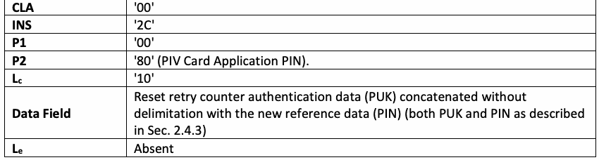
| CLA | '00' |
| INS | '2C' |
| P1 | '00' |
| P2 | '80'（PIVカードアプリケーションPIN） |
| Lc | '10' |
| データフィールド | リセット再試行カウンター認証データ（PUK）に新しい参照データ（PIN）を区切りなしで連結したもの（PUKとPINはいずれも2.4.3節に記載） |
| Le | 存在しない |
Response Syntax
応答構文
未レビュー訳| SW1 | SW2 | Meaning |
| '63' | 'CX' | Reset failed, X indicates the number of further allowed resets |
| '69' | '83' | Reset operation blocked |
| '6A' | '80' | Incorrect parameter in command data field |
| '6A' | '81' | Function not supported |
| '6A' | '88' | Key reference not found |
| '90' | '00' | Successful execution |
原本PDFの抜粋画像
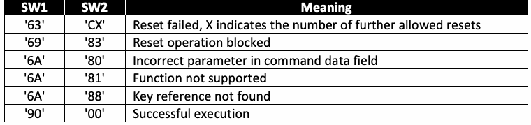
| SW1 | SW2 | 意味 |
| '63' | 'CX' | リセット失敗。Xは許可される残りのリセット回数を示す |
| '69' | '83' | リセット操作がブロックされている |
| '6A' | '80' | コマンドデータフィールド内のパラメーターが不正 |
| '6A' | '81' | 機能がサポートされていない |
| '6A' | '88' | 鍵参照が見つからない |
| '90' | '00' | 実行成功 |
3.2.4. GENERAL AUTHENTICATE Card Command
3.2.4. GENERAL AUTHENTICATEカードコマンド
The GENERAL AUTHENTICATE card command performs a cryptographic operation, such as an authentication protocol, using the data provided in the data field of the command and returns the result of the cryptographic operation in the response data field.13
GENERAL AUTHENTICATEカードコマンドは、コマンドのデータフィールドで指定されたデータを用いて認証プロトコルなどの暗号操作を実行し、その暗号操作の結果を応答データフィールドで返す。13
未レビュー訳The GENERAL AUTHENTICATE command SHALL be used with the PIV authentication keys ('9A', '9B', '9E') to authenticate the card or a card application to the client application (INTERNAL AUTHENTICATE), to authenticate an entity to the card (EXTERNAL AUTHENTICATE), and to perform a mutual authentication between the card and an entity external to the card (MUTUAL
GENERAL AUTHENTICATEコマンドは、PIV認証鍵（'9A'、'9B'、'9E'）とともに使用しなければならない（SHALL）。これらを用いて、カードまたはカードアプリケーションをクライアントアプリケーションに認証し（INTERNAL AUTHENTICATE）、エンティティをカードに認証し（EXTERNAL AUTHENTICATE）、およびカードとカード外部のエンティティとの相互認証を実行する（MUTUAL
未レビュー訳AUTHENTICATE).
AUTHENTICATE）。
未レビュー訳The GENERAL AUTHENTICATE command SHALL be used with the digital signature key ('9C') to realize the signing functionality on the PIV client application programming interface. Data to be signed is expected to be hashed off-card. Appendix A.4 illustrates the use of the GENERAL AUTHENTICATE command for signature generation.
GENERAL AUTHENTICATEコマンドは、PIVクライアントアプリケーションプログラミングインターフェース上の署名機能を実現するため、デジタル署名鍵（'9C'）とともに使用しなければならない（SHALL）。署名対象のデータはカード外でハッシュ化されていることが想定される。署名生成にGENERAL AUTHENTICATEコマンドを使用する方法を付録A.4に示す。
未レビュー訳The GENERAL AUTHENTICATE command SHALL be used with the key management key ('9D') and the retired key management keys ('82' – '95') to realize the key establishment schemes specified in SP 800-78 (ECDH and RSA). Appendix A.5 illustrates the use of the GENERAL AUTHENTICATE command for key establishment schemes aided by the PIV Card Application.
GENERAL AUTHENTICATEコマンドは、SP 800-78で規定された鍵確立方式（ECDHおよびRSA）を実現するため、鍵管理鍵（'9D'）および退役鍵管理鍵（'82'～'95'）とともに使用しなければならない（SHALL）。PIVカードアプリケーションが支援する鍵確立方式にGENERAL AUTHENTICATEコマンドを使用する方法を付録A.5に示す。
未レビュー訳The GENERAL AUTHENTICATE command SHALL be used with the PIV Secure Messaging key ('04') and cryptographic algorithm identifier '27' or '2E' to establish session keys for secure messaging, as specified in Sec. 4. If key reference '04' is specified in P2, then algorithm identifiers in P1 other than '27' and '2E' SHALL NOT be permitted, and the PIV Card Application SHALL return the status word '6A 86'.
GENERAL AUTHENTICATEコマンドは、PIVセキュアメッセージング鍵（'04'）および暗号アルゴリズム識別子'27'または'2E'とともに使用し、4節に規定されているセッション鍵を確立しなければならない（SHALL）。鍵参照'04'がP2に指定されている場合、'27'および'2E'以外のアルゴリズム識別子をP1に指定してはならず（SHALL NOT）、PIVカードアプリケーションはステータスワード'6A 86'を返さなければならない（SHALL）。
The GENERAL AUTHENTICATE command supports command chaining to permit the uninterrupted transmission of long command data fields to the PIV Card Application. If a card command other than the GENERAL AUTHENTICATE command is received by the PIV Card Application before the termination of a GENERAL AUTHENTICATE chain, the PIV Card Application SHALL roll back to the state it was in immediately prior to the reception of the first command in the interrupted chain. In other words, an interrupted GENERAL AUTHENTICATE chain has no effect on the PIV Card Application.
GENERAL AUTHENTICATEコマンドは、長いコマンドデータフィールドを中断なくPIVカードアプリケーションに送信できるよう、コマンド連鎖をサポートする。GENERAL AUTHENTICATE連鎖の終了前に、GENERAL AUTHENTICATEコマンド以外のカードコマンドをPIVカードアプリケーションが受信した場合、PIVカードアプリケーションは、中断された連鎖の最初のコマンドを受信する直前の状態にロールバックしなければならない（SHALL）。言い換えると、中断されたGENERAL AUTHENTICATE連鎖はPIVカードアプリケーションに影響しない。
Command Syntax
コマンド構文
未レビュー訳| CLA | '00' or '10' indicating command chaining '0C' or '1C' for secure messaging |
| INS | '87' |
| P1 | Algorithm reference. See Table 14 and [SP800-78, Table 9] |
| P2 | Key reference. See Table 5, Part 1 for key reference values |
| Lc | Length of data field |
| Data Field | See Table 7 |
| Le | Absent or '00' |
原本PDFの抜粋画像
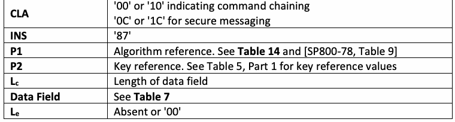
| CLA | コマンド連鎖を示す'00'または'10'。セキュアメッセージングの場合は'0C'または'1C' |
| INS | '87' |
| P1 | アルゴリズム参照。表14および[SP800-78, Table 9]を参照 |
| P2 | 鍵参照。鍵参照値については第1部の表5を参照 |
| Lc | データフィールドの長さ |
| データフィールド | 表7を参照 |
| Le | 存在しない、または'00' |
Table 7. Data objects in the dynamic authentication template (Tag '7C')
表7. 動的認証テンプレート（タグ '7C'）内のデータオブジェクト
未レビュー訳| Name | Tag | M/O | Description |
| Witness | '80' | C | Demonstration of knowledge of a fact without revealing the fact. An empty witness is a request for a witness. |
| Challenge | '81' | C | One or more random numbers or byte sequences to be used in the authentication protocol |
| Response | '82' | C | A sequence of bytes encoding a response step in an authentication protocol |
| Exponentiation | '85' | C | A parameter used in ECDH key agreement protocol |
原本PDFの抜粋画像
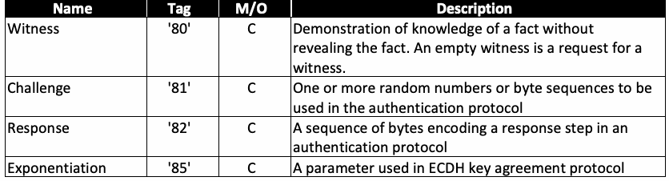
| 名称 | タグ | M/O | 説明 |
| Witness | '80' | C | 事実を明かさずにその事実を知っていることを証明すること。空のWitnessはWitness要求を意味する。 |
| Challenge | '81' | C | 認証プロトコルで使用される1つ以上の乱数またはバイト列 |
| Response | '82' | C | 認証プロトコルの応答段階を符号化するバイト列 |
| Exponentiation | '85' | C | ECDH鍵合意プロトコルで使用するパラメーター |
The data objects that appear in the dynamic authentication template (tag '7C') in the data field of the GENERAL AUTHENTICATE card command depend on the authentication protocol being executed. The Witness (tag '80') contains encrypted data (unrevealed fact), which is decrypted by the card. The Challenge (tag '81') contains clear data (byte sequence), which is encrypted by the card. The Response (tag '82') contains either the decrypted data from tag '80' or the encrypted data from tag '81'. Exponentiation SHALL NOT be allowed on keys 9A, 9C, and 9E. Note that the empty tags (i.e., tags with no data) return the same tag with content (they CAN be seen as “requests for requests”):
GENERAL AUTHENTICATEカードコマンドのデータフィールドにある動的認証テンプレート（タグ'7C'）内のデータオブジェクトは、実行される認証プロトコルによって異なる。Witness（タグ'80'）には暗号化データ（明かされていない事実）が含まれ、カードによって復号される。Challenge（タグ'81'）には平文データ（バイト列）が含まれ、カードによって暗号化される。Response（タグ'82'）には、タグ'80'からの復号データまたはタグ'81'からの暗号化データのいずれかが含まれる。鍵9A、9C、および9Eでべき乗演算を許可してはならない（SHALL NOT）。なお、空のタグ（すなわち、データを含まないタグ）は、内容を伴う同じタグを返す（「要求の要求」とみなすことができる（CAN））。
•'80 00' Returns '80 TL <encrypted random>' (as per definition)
•'80 00'は'80 TL <encrypted random>'を返す（定義に従う）。
未レビュー訳•'81 00' Returns '81 TL <random>' (as per external authenticate example)
•'81 00'は'81 TL <random>'を返す（EXTERNAL AUTHENTICATEの例に従う）。
未レビュー訳Response Syntax
応答構文
未レビュー訳| Data Field | Absent, authentication-related data, signed data, shared secret, or transported key |
| SW1-SW2 | Status word |
原本PDFの抜粋画像
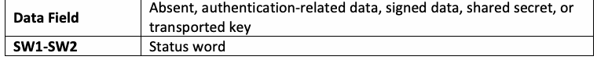
| データフィールド | 存在しない、認証関連データ、署名対象データ、共有秘密、または転送された鍵 |
| SW1-SW2 | ステータスワード |
| SW1 | SW2 | Meaning |
| '61' | 'xx' | Successful execution where SW2 encodes the number of response data bytes still available |
| '69' | '82' | Security status not satisfied |
| '6A' | '80' | Incorrect parameter in command data field |
| '6A' | '86' | Incorrect parameter in P1 or P2 |
| '90' | '00' | Successful execution |
原本PDFの抜粋画像
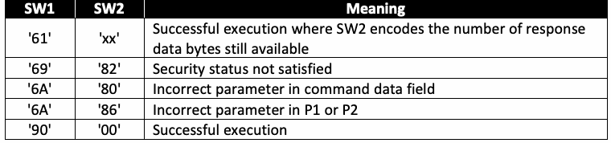
| SW1 | SW2 | 意味 |
| '61' | 'xx' | 実行成功。SW2は、引き続き取得可能な応答データバイト数を符号化する |
| '69' | '82' | セキュリティ状態が満たされていない |
| '6A' | '80' | コマンドデータフィールド内のパラメーターが不正 |
| '6A' | '86' | P1またはP2内のパラメーターが不正 |
| '90' | '00' | 実行成功 |
3.3. PIV Card Application Card Commands for Credential Initialization and Administration
3.3. PIVカードアプリケーションの資格情報初期化および管理用カードコマンド
3.3.1. PUT DATA Card Command
3.3.1. PUT DATAカードコマンド
The PUT DATA card command completely replaces the data content of a single data object in the PIV Card Application with new content.
PUT DATAカードコマンドは、PIVカードアプリケーション内の単一のデータオブジェクトのデータ内容全体を、新しい内容に置き換える。
Command Syntax
コマンド構文
未レビュー訳| CLA | '00' or '10' indicating command chaining |
| INS | 'DB' |
| P1 | '3F' |
| P2 | 'FF' |
| Lc | Length of data field |
| Data Field | See Tables 8, 9, and 10 |
| Le | Absent |
原本PDFの抜粋画像
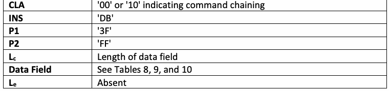
| CLA | コマンド連鎖を示す'00'または'10' |
| INS | 'DB' |
| P1 | '3F' |
| P2 | 'FF' |
| Lc | データフィールドの長さ |
| データフィールド | 表8、9、および10を参照 |
| Le | 存在しない |
For the 0x7E Discovery Object:
0x7E Discovery Objectの場合:
Table 8. Data field of the PUT DATA card command for the Discovery Object
表8. Discovery Object用PUT DATAカードコマンドのデータフィールド
未レビュー訳| Tag | M/O | Description |
| '7E' | M | BER-TLV of tag '7E' as illustrated in Sec. 3.3.2, Part 1 |
原本PDFの抜粋画像
| タグ | M/O | 説明 |
| '7E' | M | 第1部3.3.2節で示されるタグ'7E'のBER-TLV |
For the 0x7F61 BIT Group template:
0x7F61 BIT Groupテンプレートの場合:
Table 9. Data field of the PUT DATA card command for the BIT Group template
表9. BIT Groupテンプレート用PUT DATAカードコマンドのデータフィールド
未レビュー訳| Tag | M/O | Description |
| '7F61' | M | BER-TLV of tag '7F61' as illustrated in Table 7 of SP 800-76 |
原本PDFの抜粋画像
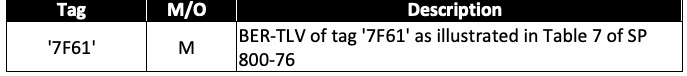
| タグ | M/O | 説明 |
| '7F61' | M | SP 800-76の表7で示されるタグ'7F61'のBER-TLV |
For all other PIV data objects:
その他すべてのPIVデータオブジェクトの場合:
Table 10. Data field of the PUT DATA card command for all other PIV data objects
表10. その他すべてのPIVデータオブジェクト用PUT DATAカードコマンドのデータフィールド
未レビュー訳| Name | Tag | M/O | Description |
| Tag list | '5C' | M | Tag of the data object whose data content is to be replaced. See Table 3, Part 1. |
| Data | '53' | M | Data with tag '53' as an unstructured byte sequence |
原本PDFの抜粋画像
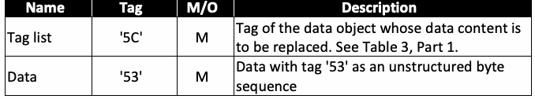
| 名称 | タグ | M/O | 説明 |
| タグリスト | '5C' | M | データ内容を置き換える対象データオブジェクトのタグ。第1部の表3を参照。 |
| データ | '53' | M | 非構造化バイト列としてのタグ'53'のデータ |
Response Syntax
応答構文
未レビュー訳| データフィールド | 存在しない |
| SW1-SW2 | ステータスワード |
| SW1 | SW2 | Meaning |
| '69' | '82' | Security status not satisfied |
| '6A' | '81' | Function not supported |
| '6A' | '84' | Not enough memory |
| '90' | '00' | Successful execution |
原本PDFの抜粋画像
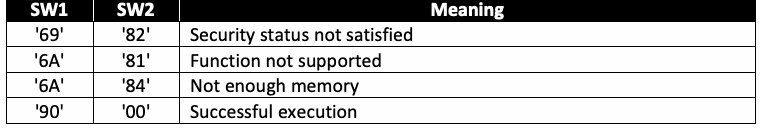
| SW1 | SW2 | 意味 |
| '69' | '82' | セキュリティ状態が満たされていない |
| '6A' | '81' | 機能がサポートされていない |
| '6A' | '84' | メモリー不足 |
| '90' | '00' | 実行成功 |
3.3.2. GENERATE ASYMMETRIC KEY PAIR Card Command
3.3.2. GENERATE ASYMMETRIC KEY PAIRカードコマンド
未レビュー訳The GENERATE ASYMMETRIC KEY PAIR card command initiates the generation and storage of the reference data of an asymmetric key pair (i.e., a public key and a private key) in the card. The public key of the generated key pair is returned as the response to the command. If there is reference data currently associated with the key reference, it is replaced in full by the generated data.
GENERATE ASYMMETRIC KEY PAIRカードコマンドは、非対称鍵ペア（すなわち、公開鍵と秘密鍵）の参照データをカード内で生成して格納する処理を開始する。生成された鍵ペアの公開鍵は、コマンドへの応答として返される。鍵参照に現在関連付けられている参照データがある場合、それは生成されたデータ全体で置き換えられる。
Command Syntax
コマンド構文
未レビュー訳| CLA | '00' or '10' indicating command chaining |
| INS | '47' |
| P1 | '00' |
| P2 | Key reference '04', '9A', '9C', '9D', or '9E' |
| Lc | Length of data field |
| Data Field | Control reference template. See Table 11. |
| Le | '00' |
原本PDFの抜粋画像
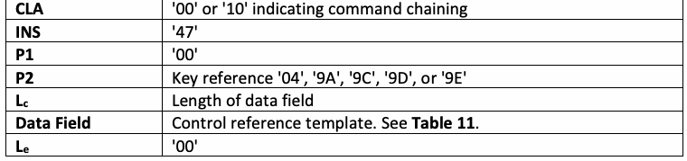
| CLA | コマンド連鎖を示す'00'または'10' |
| INS | '47' |
| P1 | '00' |
| P2 | 鍵参照'04'、'9A'、'9C'、'9D'、または'9E' |
| Lc | データフィールドの長さ |
| データフィールド | 制御参照テンプレート。表11を参照。 |
| Le | '00' |
Table 11. Data objects in the template (Tag 'AC')
表11. テンプレート（タグ 'AC'）内のデータオブジェクト
未レビュー訳| Name | Tag | M/O | Description |
| Cryptographic mechanism identifier | '80' | M | See Part 1, Table 6 |
| Parameter | '81' | C | Specific to the cryptographic mechanism |
原本PDFの抜粋画像
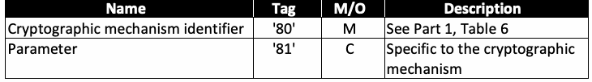
| 名称 | タグ | M/O | 説明 |
| 暗号メカニズム識別子 | '80' | M | 第1部の表6を参照 |
| パラメーター | '81' | C | 暗号メカニズムに固有 |
Response Syntax
応答構文
未レビュー訳| Data Field | Data objects of public key of generated key pair. See Table 12 |
| SW1-SW2 | Status word |
原本PDFの抜粋画像
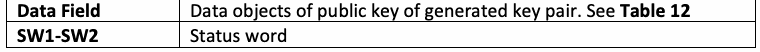
| データフィールド | 生成された鍵ペアの公開鍵のデータオブジェクト。表12を参照 |
| SW1-SW2 | ステータスワード |
Table 12. Data objects in the template (Tag '7F49')
表12. テンプレート（タグ '7F49'）内のデータオブジェクト
未レビュー訳| Name | Tag |
| Public-key data objects for RSA | |
| Modulus | '81' |
| Public exponent | '82' |
| Public key data objects for ECC | |
| Point | '86' |
原本PDFの抜粋画像
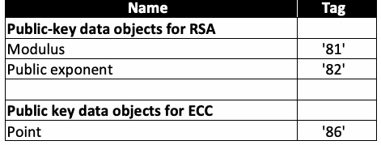
| 名称 | タグ |
| RSA用公開鍵データオブジェクト | |
| 法 | '81' |
| 公開指数 | '82' |
| ECC用公開鍵データオブジェクト | |
| 点 | '86' |
The public-key data object in tag '86' is encoded as follows:
タグ'86'内の公開鍵データオブジェクトは、次のように符号化される。
Table 13. Public-key encoding for ECC
表13. ECCの公開鍵エンコーディング
未レビュー訳| Tag | Length | Value |
| '86' | \(\mathrm{L}\) | \(04 \parallel \mathrm{X} \parallel \mathrm{Y}\) [SECG, Section 2.3.3] |
| タグ | 長さ | 値 |
| '86' | \(\mathrm{L}\) | \(04 \parallel \mathrm{X} \parallel \mathrm{Y}\) [SECG, Section 2.3.3] |
The octet '04' indicates that the X and Y coordinates of point P are encoded without the use of point compression. The length L is 65 bytes for points on Curve P-256 and 97 bytes for points on Curve P-384.
オクテット'04'は、点PのX座標とY座標が点圧縮を使用せずに符号化されていることを示す。長さLは、Curve P-256上の点では65バイト、Curve P-384上の点では97バイトである。
| SW1 | SW2 | Meaning |
| '61' | 'xx' | Successful execution where SW2 encodes the number of response data bytes still available |
| '69' | '82' | Security status not satisfied |
| '6A' | '80' | Incorrect parameter in command data field (e.g., unrecognized cryptographic mechanism) |
| '6A' | '81' | Function not supported |
| '6A' | '86' | Incorrect parameter P2; the cryptographic mechanism of the reference data to be generated is different than the cryptographic mechanism of the reference data of a given key reference |
| '90' | '00' | Successful execution |
原本PDFの抜粋画像
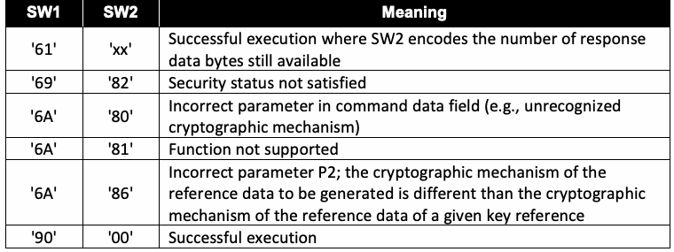
| SW1 | SW2 | 意味 |
| '61' | 'xx' | 実行成功。SW2は、引き続き取得可能な応答データバイト数を符号化する |
| '69' | '82' | セキュリティ状態が満たされていない |
| '6A' | '80' | コマンドデータフィールド内のパラメーターが不正（例: 認識されない暗号メカニズム） |
| '6A' | '81' | 機能がサポートされていない |
| '6A' | '86' | P2内のパラメーターが不正。生成する参照データの暗号メカニズムが、指定された鍵参照の参照データの暗号メカニズムと異なる |
| '90' | '00' | 実行成功 |
4. Secure Messaging
4. セキュアメッセージング
未レビュー訳If a PIV Card Application implements the optional secure messaging protocol for non-card management operations, it SHALL be implemented as specified in this section. Secure messaging is initiated through the use of a key establishment protocol. The key establishment protocol defined here is a one-way authentication protocol that authenticates the PIV Card Application to the client application and establishes a set of session keys that MAY be subsequently used to protect the communication channel between the two parties.14 PIV Cards MAY implement a different secure messaging protocol for card management operations. Such a protocol is outside of the scope of this document. However, if it is to be used for remote post-issuance updates, it SHALL satisfy the requirements of [FIPS201, Section 2.9.2].
PIVカードアプリケーションが、カード管理以外の操作用に任意のセキュアメッセージングプロトコルを実装する場合、そのプロトコルは本節の規定に従って実装しなければならない（SHALL）。セキュアメッセージングは鍵確立プロトコルを用いて開始される。ここで定義する鍵確立プロトコルは、一方向認証プロトコルであり、PIVカードアプリケーションをクライアントアプリケーションに認証し、後続の通信チャネルを両者間で保護するために使用してもよい（MAY）一組のセッション鍵を確立する。14 PIVカードは、カード管理操作に別のセキュアメッセージングプロトコルを実装してもかまわない（MAY）。そのようなプロトコルは本書の適用範囲外である。ただし、発行後のリモート更新に使用する場合は、[FIPS201, Section 2.9.2]の要件を満たさなければならない（SHALL）。
未レビュー訳Section 4.1 describes the key establishment protocol used to support secure messaging in the PIV Card Application. Section 4.2 describes the use of secure messaging to protect the commands and responses sent between the client application and the PIV Card Application.
4.1節では、PIVカードアプリケーションのセキュアメッセージングをサポートするために使用する鍵確立プロトコルについて説明する。4.2節では、クライアントアプリケーションとPIVカードアプリケーションの間で送信されるコマンドおよび応答を保護するためのセキュアメッセージングの使用について説明する。
未レビュー訳4.1. Key Establishment Protocol
4.1. 鍵確立プロトコル
未レビュー訳The key establishment protocol for the PIV Card Application uses the One-Pass Diffie-Hellman, C(1e, 1s, ECC CDH) Scheme from [SP800-56A] in a manner that is based on a simplified profile of OPACITY with Zero Key Management [ANSI504-1], as depicted in below.
PIVカードアプリケーションの鍵確立プロトコルでは、下図に示すように、Zero Key Managementを用いるOPACITYの簡略プロファイルに基づき、[SP800-56A]のOne-Pass Diffie-Hellman, C(1e, 1s, ECC CDH)スキームを使用します[ANSI504-1]。
未レビュー訳Table 14: Key Establishment Protocol for PIV Card Application
表14: PIVカードアプリケーションの鍵確立プロトコル
未レビュー訳Client Application (H)
クライアントアプリケーション（H）
未レビュー訳PIV Card Application (ICC)
PIVカードアプリケーション（ICC）
未レビュー訳CBH = 0x00
CBH = 0x00
未レビュー訳H1
未レビュー訳Generate an ephemeral key pair (deH; QeH) from the H2 domain parameters specified in the response to the SELECT command Send CBH || IDsH || QeH
SELECTコマンドへの応答で指定されたH2ドメインパラメーターを用いて、一時鍵ペア（deH; QeH）を生成する。CBH || IDsH || QeHを送信する。
未レビュー訳H3 CBH || IDsH || QeH
H3 CBH || IDsH || QeH
未レビュー訳IDsICC = T8(SHA256(CICC))
IDsICC = T8(SHA256(CICC))
未レビュー訳C1
未レビュー訳CBICC = CBH & 'F0'
CBICC = CBH & 'F0'
未レビュー訳C2
未レビュー訳Check that CBICC is 0x00
CBICCが0x00であることを確認する。
未レビュー訳C3
未レビュー訳Verify that QeH is a valid public key for the C4 domain parameters of QsICC Z = ECC_CDH(dsICC, QeH)
QeHがQsICCのC4ドメインパラメーターに対して有効な公開鍵であることを検証する。Z = ECC_CDH(dsICC, QeH)
未レビュー訳C5 C6
C5 C6
未レビュー訳Generate nonce NICC SKCFRM|| SKMAC|| SKENC|| SKRMAC= KDF(Z, len, OtherInfo)
nonce NICCを生成する。SKCFRM|| SKMAC|| SKENC|| SKRMAC= KDF(Z, len, OtherInfo)
未レビュー訳C7
未レビュー訳Zeroize Z
Zを消去する。
未レビュー訳C8
未レビュー訳AuthCryptogramICC =
AuthCryptogramICC =
未レビュー訳C9
未レビュー訳CMAC(SKCRFM, “KC_1_V” || IDsICC|| IDsH|| QeH) Zeroize SKCFRM
CMAC(SKCRFM, “KC_1_V” || IDsICC|| IDsH|| QeH) SKCFRMを消去する。
未レビュー訳C10
C10
未レビュー訳Return CBICC|| NICC|| AuthCryptogramICC|| CICC
CBICC|| NICC|| AuthCryptogramICC|| CICCを返す。
未レビュー訳C11
C11
未レビュー訳CBICC || NICC || AuthCryptogramICC || CICC
CBICC || NICC || AuthCryptogramICC || CICC
未レビュー訳Check that CBICC is 0x00
CBICCが0x00であることを確認する。
未レビュー訳H4
未レビュー訳Verify CICC signature and subject public key
CICCの署名および主体公開鍵を検証する。
未レビュー訳H5
未レビュー訳IDsICC = T8(SHA256(CICC))
IDsICC = T8(SHA256(CICC))
未レビュー訳H6
未レビュー訳Extract QsICC from CICC
CICCからQsICCを抽出する。
未レビュー訳H7
未レビュー訳Z = ECC_CDH(deH, QsICC)
Z = ECC_CDH(deH, QsICC)
未レビュー訳H8
未レビュー訳Zeroize deH
deHを消去する。
未レビュー訳H9
未レビュー訳SKCFRM|| SKMAC|| SKENC|| SKRMAC = KDF(Z, len, OtherInfo) H10 Zeroize Z
SKCFRM|| SKMAC|| SKENC|| SKRMAC = KDF(Z, len, OtherInfo) H10 Zを消去する。
未レビュー訳H11
H11
未レビュー訳Check that AuthCryptogramICC equals
AuthCryptogramICCが次の値と等しいことを確認する
未レビュー訳H12
H12
未レビュー訳CMAC(SKCFRM, “KC_1_V” || IDsICC|| IDsH|| QeH)
CMAC(SKCFRM, “KC_1_V” || IDsICC|| IDsH|| QeH)
未レビュー訳Zeroize SKCFRM
SKCFRMを消去する。
未レビュー訳H13
H13
未レビュー訳Sections 4.1.1 and 4.1.2 provide additional details about each of the protocol steps performed by the client application and the PIV Card Application. Section 4.1.3 defines the notations used in the description of the protocol. Section 4.1.4 provides details about the two cipher suites that MAY be supported by the PIV Card Application. Section 4.1.5 specifies the format for the secure messaging card verifiable certificate (CVC) that is used to authenticate the PIV Card Application and for the optional Intermediate CVC that is used to verify the signature on the secure messaging CVC when the public key needed to verify the signature on the secure messaging CVC does not appear in an X.509 content signing certificate. Section 4.1.6 provides additional information about the key derivation function (KDF) used to derive the session keys that are used during secure messaging. Section 4.1.7 provides additional information about the computation of the authentication cryptogram for key confirmation. Section 4.1.8 demonstrates the use of the GENERAL AUTHENTICATE command to perform the key establishment protocol.
4.1.1節および4.1.2節では、クライアントアプリケーションとPIVカードアプリケーションが実行する各プロトコル手順の詳細を説明する。4.1.3節では、プロトコルの説明で使用する表記法を定義する。4.1.4節では、PIVカードアプリケーションがサポートしてもよい（MAY）2種類の暗号スイートについて詳しく説明する。4.1.5節では、PIVカードアプリケーションの認証に使用するセキュアメッセージング用カード検証可能証明書（CVC）の形式、およびセキュアメッセージングCVCの署名検証に必要な公開鍵がX.509コンテンツ署名証明書に含まれていない場合に、そのCVC上の署名を検証するために使用する任意の中間CVCの形式を規定する。4.1.6節では、セキュアメッセージング中に使用するセッション鍵の導出に用いる鍵導出関数（KDF）の追加情報を示す。4.1.7節では、鍵確認用認証クリプトグラムの計算に関する追加情報を示す。4.1.8節では、鍵確立プロトコルを実行するためにGENERAL AUTHENTICATEコマンドを使用する方法を示す。
4.1.1. Client Application Steps
4.1.1. クライアントアプリケーションの手順
Table 15: Protocol Steps for Client Application
表15: クライアントアプリケーションのプロトコル手順
未レビュー訳| Step # | Description | Comment |
| H1 | Set \(\mathrm{CB}_{\mathrm{H}}\) to 0x00 | The client application’s control byte is set to 0x00 to indicate that the client application does not support persistent binding. |
| H2 | Generate an ephemeral key pair \((\mathrm{d}_{\mathrm{eH}}; \mathrm{Q}_{\mathrm{eH}})\) | Generate an ephemeral ECC key pair for the client application using an approved method [FIPS186, Appendix B], and perform partial public-key validation [SP800-56A, Sec. 5.6.2.3.2], either as part of the key generation process or as a separate process. If the 0xAC tag of the application property template (APT) includes '27', then generate an ephemeral key pair over Curve P-256. If the 0xAC tag of the APT includes '2E', then generate an ephemeral key pair over Curve P-384. |
| H3 | Send \(\mathrm{CB}_{\mathrm{H}} \parallel \mathrm{ID}_{\mathrm{sH}} \parallel \mathrm{Q}_{\mathrm{eH}}\) | |
| Wait for response from PIV Card Application: \(\mathrm{CB}_{\mathrm{ICC}} \parallel \mathrm{N}_{\mathrm{ICC}} \parallel \mathrm{AuthCryptogram}_{\mathrm{ICC}} \parallel \mathrm{C}_{\mathrm{ICC}}\) |
| 手順番号 | 説明 | コメント |
| H1 | \(\mathrm{CB}_{\mathrm{H}}\)を0x00に設定 | クライアントアプリケーションが永続バインディングをサポートしないことを示すため、クライアントアプリケーションの制御バイトを0x00に設定する。 |
| H2 | 一時鍵ペア\((\mathrm{d}_{\mathrm{eH}}; \mathrm{Q}_{\mathrm{eH}})\)を生成 | 承認された方法[FIPS186, Appendix B]を用いてクライアントアプリケーションの一時ECC鍵ペアを生成し、鍵生成プロセスの一部として、または別個のプロセスとして、部分公開鍵検証[SP800-56A, Sec. 5.6.2.3.2]を実行する。アプリケーションプロパティテンプレート（APT）のタグ0xACに'27'が含まれる場合はCurve P-256上で一時鍵ペアを生成する。APTのタグ0xACに'2E'が含まれる場合はCurve P-384上で一時鍵ペアを生成する。 |
| H3 | \(\mathrm{CB}_{\mathrm{H}} \parallel \mathrm{ID}_{\mathrm{sH}} \parallel \mathrm{Q}_{\mathrm{eH}}\)を送信 | |
| PIVカードアプリケーションからの応答を待つ: \(\mathrm{CB}_{\mathrm{ICC}} \parallel \mathrm{N}_{\mathrm{ICC}} \parallel \mathrm{AuthCryptogram}_{\mathrm{ICC}} \parallel \mathrm{C}_{\mathrm{ICC}}\) |
| Step # | Description | Comment |
| H4 | Check that \(\mathrm{CB}_{\mathrm{ICC}}\) is 0x00 | Verify that the card executed the protocol in accordance with the parameters specified in Step H1. Return an authentication error if check fails. |
| H5 | Verify \(\mathrm{C}_{\mathrm{ICC}}\) signature and subject public key | Verify signature on \(\mathrm{C}_{\mathrm{ICC}}\) and, using standards-compliant PKI path validation, validate the content signing certificate needed to verify the signature on \(\mathrm{C}_{\mathrm{ICC}}\).15,16 Verify that the domain parameters of the subject public key in \(\mathrm{C}_{\mathrm{ICC}}\) are the same as the domain parameters for \(\mathrm{Q}_{\mathrm{eH}}\) by checking the Algorithm OID in the CardHolderPublicKey data object (see Table 19). Return an authentication error if either verification fails. |
| H6 | \(\mathrm{ID}_{\mathrm{sICC}} = \mathrm{T}_8(\mathrm{SHA256}(\mathrm{C}_{\mathrm{ICC}}))\) | \(\mathrm{ID}_{\mathrm{sICC}}\) — the leftmost 8 bytes of the SHA-256 hash of \(\mathrm{C}_{\mathrm{ICC}}\) — is used as an input for session key derivation. |
| H7 | Extract \(\mathrm{Q}_{\mathrm{sICC}}\) from \(\mathrm{C}_{\mathrm{ICC}}\) | |
| H8 | \(\mathrm{Z} = \mathrm{ECC\_CDH}(\mathrm{d}_{\mathrm{eH}}, \mathrm{Q}_{\mathrm{sICC}})\) | Compute the shared secret \(\mathrm{Z}\) using the ECC CDH primitive [SP800-56A, Sec. 5.7.1.2]. |
| H9 | Zeroize \(\mathrm{d}_{\mathrm{eH}}\) | Destroy the ephemeral private key generated in Step H2. |
| H10 | \(\mathrm{SK}_{\mathrm{CFRM}} \parallel \mathrm{SK}_{\mathrm{MAC}} \parallel \mathrm{SK}_{\mathrm{ENC}} \parallel \mathrm{SK}_{\mathrm{RMAC}} = \mathrm{KDF}(\mathrm{Z}, \mathit{len}, \mathit{OtherInfo})\) | Compute the key confirmation key and the session keys. See Sec. 4.1.6. |
| H11 | Zeroize \(\mathrm{Z}\) | Destroy the shared secret generated in Step H8. |
| H12 | Check that \(\mathrm{AuthCryptogram}_{\mathrm{ICC}}\) equals \(\mathrm{CMAC}(\mathrm{SK}_{\mathrm{CFRM}}, \text{"KC\_1\_V"} \parallel \mathrm{ID}_{\mathrm{sICC}} \parallel \mathrm{ID}_{\mathrm{sH}} \parallel \mathrm{Q}_{\mathrm{eH}})\) | Perform key confirmation by verifying the authentication cryptogram, as described in Sec. 4.1.7. Return an authentication error if verification fails. |
| H13 | Zeroize \(\mathrm{SK}_{\mathrm{CFRM}}\) | Destroy the key confirmation key derived in Step H10. |
| 手順番号 | 説明 | コメント |
| H4 | \(\mathrm{CB}_{\mathrm{ICC}}\)が0x00であることを確認 | カードが手順H1で指定されたパラメーターに従ってプロトコルを実行したことを検証する。確認に失敗した場合、認証エラーを返す。 |
| H5 | \(\mathrm{C}_{\mathrm{ICC}}\)の署名および主体公開鍵を検証 | \(\mathrm{C}_{\mathrm{ICC}}\)の署名を検証し、標準準拠のPKIパス検証を用いて、\(\mathrm{C}_{\mathrm{ICC}}\)の署名検証に必要なコンテンツ署名証明書を検証する。15,16 \(\mathrm{C}_{\mathrm{ICC}}\)内の主体公開鍵のドメインパラメーターが\(\mathrm{Q}_{\mathrm{eH}}\)のドメインパラメーターと同じであることを、CardHolderPublicKeyデータオブジェクトのAlgorithm OIDを確認して検証する（表19を参照）。いずれかの検証に失敗した場合、認証エラーを返す。 |
| H6 | \(\mathrm{ID}_{\mathrm{sICC}} = \mathrm{T}_8(\mathrm{SHA256}(\mathrm{C}_{\mathrm{ICC}}))\) | \(\mathrm{ID}_{\mathrm{sICC}}\)（\(\mathrm{C}_{\mathrm{ICC}}\)のSHA-256ハッシュの左端8バイト）は、セッション鍵導出の入力として使用される。 |
| H7 | \(\mathrm{Q}_{\mathrm{sICC}}\)を\(\mathrm{C}_{\mathrm{ICC}}\)から抽出 | |
| H8 | \(\mathrm{Z} = \mathrm{ECC\_CDH}(\mathrm{d}_{\mathrm{eH}}, \mathrm{Q}_{\mathrm{sICC}})\) | 共有秘密\(\mathrm{Z}\)を、ECC CDHプリミティブ[SP800-56A, Sec. 5.7.1.2]を用いて計算する。 |
| H9 | \(\mathrm{d}_{\mathrm{eH}}\)をゼロ化 | 手順H2で生成した一時秘密鍵を破棄する。 |
| H10 | \(\mathrm{SK}_{\mathrm{CFRM}} \parallel \mathrm{SK}_{\mathrm{MAC}} \parallel \mathrm{SK}_{\mathrm{ENC}} \parallel \mathrm{SK}_{\mathrm{RMAC}} = \mathrm{KDF}(\mathrm{Z}, \mathit{len}, \mathit{OtherInfo})\) | 鍵確認鍵およびセッション鍵を計算する。4.1.6節を参照。 |
| H11 | \(\mathrm{Z}\)をゼロ化 | 手順H8で生成した共有秘密を破棄する。 |
| H12 | \(\mathrm{AuthCryptogram}_{\mathrm{ICC}}\)が\(\mathrm{CMAC}(\mathrm{SK}_{\mathrm{CFRM}}, \text{"KC\_1\_V"} \parallel \mathrm{ID}_{\mathrm{sICC}} \parallel \mathrm{ID}_{\mathrm{sH}} \parallel \mathrm{Q}_{\mathrm{eH}})\)と等しいことを確認 | 4.1.7節で説明するように、認証クリプトグラムを検証して鍵確認を行う。検証に失敗した場合、認証エラーを返す。 |
| H13 | \(\mathrm{SK}_{\mathrm{CFRM}}\)をゼロ化 | 手順H10で導出した鍵確認鍵を破棄する。 |
4.1.2. PIV Card Application Protocol Steps
4.1.2. PIVカードアプリケーションのプロトコル手順
Table 16: Protocol Steps for PIV Card Application
表16: PIVカードアプリケーションのプロトコル手順
未レビュー訳| Step # | Description | Comment |
| C1 | IDsICC = T8(SHA256(CICC)) | IDsICC — the leftmost 8 bytes of the SHA-256 hash of CICC — is used as an input for session key derivation. (Note that IDsICC is static and MAY be pre-computed off-card.) |
原本PDFの抜粋画像
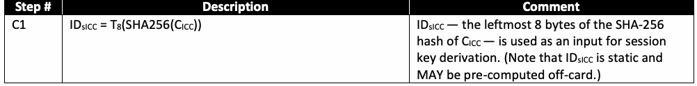
| 手順番号 | 説明 | コメント |
| C1 | IDsICC = T8(SHA256(CICC)) | IDsICC（CICCのSHA-256ハッシュの左端8バイト）は、セッション鍵導出の入力として使用される。（IDsICCは固定であり、カード外で事前計算してもよい（MAY）ことに注意されたい。） |
| Step # | Description | Comment |
| C2 | \(\mathrm{CB}_{\mathrm{ICC}} = \mathrm{CB}_{\mathrm{H}} \mathbin{\&} \text{'F0'}\) | Create the PIV Card Application’s control byte from the client application’s control byte, indicating that persistent binding has not been used in the transaction even if \(\mathrm{CB}_{\mathrm{H}}\) indicates that the client application supports it. This MAY be done by setting \(\mathrm{CB}_{\mathrm{ICC}}\) to the value of \(\mathrm{CB}_{\mathrm{H}}\) and then setting the four least significant bits of \(\mathrm{CB}_{\mathrm{ICC}}\) to 0. |
| C3 | Check that \(\mathrm{CB}_{\mathrm{ICC}}\) is 0x00 | Return an error ('6A 80') if \(\mathrm{CB}_{\mathrm{ICC}}\) is not 0x00. |
| C4 | Verify that \(\mathrm{Q}_{\mathrm{eH}}\) is a valid public key for the domain parameters of \(\mathrm{Q}_{\mathrm{sICC}}\) | Perform partial public-key validation of \(\mathrm{Q}_{\mathrm{eH}}\) [SP800-56A, Sec. 5.6.2.3.3],17 where the domain parameters are those of \(\mathrm{Q}_{\mathrm{sICC}}\). Verify that P1 is '27' if the domain parameters of \(\mathrm{Q}_{\mathrm{sICC}}\) are those of Curve P-256 or that P1 is '2E' if the domain parameters of \(\mathrm{Q}_{\mathrm{sICC}}\) are those of Curve P-384. Return '6A 86' if P1 has the incorrect value. Return '6A 80' if public-key validation fails. |
| C5 | \(\mathrm{Z} = \mathrm{ECC\_CDH}(\mathrm{d}_{\mathrm{sICC}}, \mathrm{Q}_{\mathrm{eH}})\) | Compute the shared secret \(\mathrm{Z}\) using the ECC CDH primitive [SP800-56A, Sec. 5.7.1.2]. |
| C6 | Generate nonce \(\mathrm{N}_{\mathrm{ICC}}\) | Create a random nonce, where the length is as specified in Table 18. The nonce should be created using an approved random bit generator where the security strength supported by the random bit generator is at least as great as the bit length of the nonce being generated [SP800-56A, Sec. 5.3]. |
| C7 | \(\mathrm{SK}_{\mathrm{CFRM}} \parallel \mathrm{SK}_{\mathrm{MAC}} \parallel \mathrm{SK}_{\mathrm{ENC}} \parallel \mathrm{SK}_{\mathrm{RMAC}} = \mathrm{KDF}(\mathrm{Z}, \mathit{len}, \mathit{Otherinfo})\) | Compute the key confirmation key and the session keys. See Sec. 4.1.6. |
| C8 | Zeroize \(\mathrm{Z}\) | Destroy the shared secret generated in Step C5. |
| C9 | \(\mathrm{AuthCryptogram}_{\mathrm{ICC}} = \mathrm{CMAC}(\mathrm{SK}_{\mathrm{CFRM}}, \text{"KC\_1\_V"} \parallel \mathrm{ID}_{\mathrm{sICC}} \parallel \mathrm{ID}_{\mathrm{sH}} \parallel \mathrm{Q}_{\mathrm{eH}})\) | Compute the authentication cryptogram for key confirmation, as described in Sec. 4.1.7. |
| C10 | Zeroize \(\mathrm{SK}_{\mathrm{CFRM}}\) | Destroy the key confirmation key derived in Step C7. |
| C11 | Return \(\mathrm{CB}_{\mathrm{ICC}} \parallel \mathrm{N}_{\mathrm{ICC}} \parallel \mathrm{AuthCryptogram}_{\mathrm{ICC}} \parallel \mathrm{C}_{\mathrm{ICC}}\) |
| 手順番号 | 説明 | コメント |
| C2 | \(\mathrm{CB}_{\mathrm{ICC}} = \mathrm{CB}_{\mathrm{H}} \mathbin{\&} \text{'F0'}\) | クライアントアプリケーションの制御バイトからPIVカードアプリケーションの制御バイトを作成する。\(\mathrm{CB}_{\mathrm{H}}\)がクライアントアプリケーションによる永続バインディングのサポートを示していても、このトランザクションでは永続バインディングが使用されていないことを示す。\(\mathrm{CB}_{\mathrm{ICC}}\)を\(\mathrm{CB}_{\mathrm{H}}\)の値に設定し、次に\(\mathrm{CB}_{\mathrm{ICC}}\)の最下位4ビットを0に設定することで実行してもよい（MAY）。 |
| C3 | \(\mathrm{CB}_{\mathrm{ICC}}\)が0x00であることを確認 | エラー（'6A 80'）を、\(\mathrm{CB}_{\mathrm{ICC}}\)が0x00でない場合に返す。 |
| C4 | \(\mathrm{Q}_{\mathrm{eH}}\)が\(\mathrm{Q}_{\mathrm{sICC}}\)のドメインパラメーターに対して有効な公開鍵であることを検証 | \(\mathrm{Q}_{\mathrm{eH}}\)の部分公開鍵検証[SP800-56A, Sec. 5.6.2.3.3]を実行する。17 ここで、ドメインパラメーターは\(\mathrm{Q}_{\mathrm{sICC}}\)のものとする。P1が'27'であること（\(\mathrm{Q}_{\mathrm{sICC}}\)のドメインパラメーターがCurve P-256のものである場合）、またはP1が'2E'であること（\(\mathrm{Q}_{\mathrm{sICC}}\)のドメインパラメーターがCurve P-384のものである場合）を検証する。P1の値が不正な場合は'6A 86'を返す。公開鍵検証に失敗した場合は'6A 80'を返す。 |
| C5 | \(\mathrm{Z} = \mathrm{ECC\_CDH}(\mathrm{d}_{\mathrm{sICC}}, \mathrm{Q}_{\mathrm{eH}})\) | 共有秘密\(\mathrm{Z}\)を、ECC CDHプリミティブ[SP800-56A, Sec. 5.7.1.2]を用いて計算する。 |
| C6 | nonce \(\mathrm{N}_{\mathrm{ICC}}\)を生成 | 表18で指定される長さのランダムnonceを生成する。生成するnonceのビット長以上のセキュリティ強度をサポートする承認済み乱数ビット生成器を使用してnonceを生成するべきである（should）[SP800-56A, Sec. 5.3]。 |
| C7 | \(\mathrm{SK}_{\mathrm{CFRM}} \parallel \mathrm{SK}_{\mathrm{MAC}} \parallel \mathrm{SK}_{\mathrm{ENC}} \parallel \mathrm{SK}_{\mathrm{RMAC}} = \mathrm{KDF}(\mathrm{Z}, \mathit{len}, \mathit{Otherinfo})\) | 鍵確認鍵およびセッション鍵を計算する。4.1.6節を参照。 |
| C8 | \(\mathrm{Z}\)をゼロ化 | 手順C5で生成した共有秘密を破棄する。 |
| C9 | \(\mathrm{AuthCryptogram}_{\mathrm{ICC}} = \mathrm{CMAC}(\mathrm{SK}_{\mathrm{CFRM}}, \text{"KC\_1\_V"} \parallel \mathrm{ID}_{\mathrm{sICC}} \parallel \mathrm{ID}_{\mathrm{sH}} \parallel \mathrm{Q}_{\mathrm{eH}})\) | 4.1.7節で説明するように、鍵確認用認証クリプトグラムを計算する。 |
| C10 | \(\mathrm{SK}_{\mathrm{CFRM}}\)をゼロ化 | 手順C7で導出した鍵確認鍵を破棄する。 |
| C11 | \(\mathrm{CB}_{\mathrm{ICC}} \parallel \mathrm{N}_{\mathrm{ICC}} \parallel \mathrm{AuthCryptogram}_{\mathrm{ICC}} \parallel \mathrm{C}_{\mathrm{ICC}}\)を返す |
4.1.3. Notations
4.1.3. 表記法
Table 17: Notations used in Protocol Description
表17: プロトコル記述で使用する表記法
未レビュー訳| Name | Comment | Format | Size (in bytes) |
| ICC | Integrated Circuit Card (PIV Card) | N/A | N/A |
| IDsICC | Static, non-anonymous PIV Card identifier, which is the truncated hash of CICC | Binary | 8 bytes |
| GUID | Card UUID (see Sec. 3.4.1 of Part 1) | Binary | 16 bytes |
| CICC | Secure messaging card verifiable certificate, which is authenticated by client application. See Sec. 4.1.5. | CVC |
原本PDFの抜粋画像
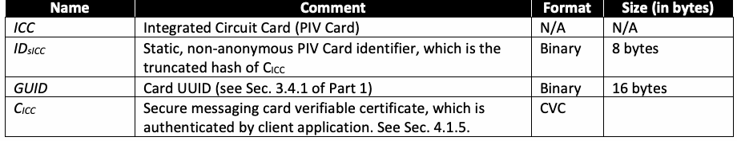
| 名称 | コメント | 形式 | サイズ（バイト） |
| ICC | 集積回路カード（PIVカード） | N/A | N/A |
| IDsICC | 固定の非匿名PIVカード識別子。CICCの切り詰めハッシュ。 | バイナリー | 8バイト |
| GUID | カードUUID（第1部3.4.1節を参照） | バイナリー | 16バイト |
| CICC | セキュアメッセージング用カード検証可能証明書。クライアントアプリケーションによって認証される。4.1.5節を参照。 | CVC |
| Name | Comment | Format | Size (in bytes) |
| IDsH | Client application identifier. This is a locally assigned identifier for the client application. If none is available, it could be set to all zeros. | Binary | 8 bytes |
| NICC | PIV Card Application nonce. See Table 18 for the length. | Binary | 16 or 24 bytes |
| SKCFRM | Key confirmation key used to compute authentication cryptogram. See Table 18 for the length. | 16 or 32 bytes | |
| SKMAC, SKRMAC, SKENC | Secure messaging session keys. See Table 18 for encryption or MAC session key length. | 16 or 32 bytes | |
| T8(Data) | Leftmost 8 bytes of Data. | Binary | 8 bytes |
| T16(Data) | Leftmost 16 bytes of Data. | Binary | 16 bytes |
| KDF(Z, len, OtherInfo) | Key Derivation Function (KDF) specified in Section 4.1.6. | N/A | N/A |
| ECC_CDH | Elliptic curve cryptography cofactor Diffie-Hellman (ECC CDH) primitive, as specified in [SP800-56A, Section 5.7.1.2]. | N/A | N/A |
| OtherInfo | Input parameters to the KDF. See Section 4.1.6. | N/A | N/A |
| len | The length (in bits) of the secret keying material to be generated using the KDF (len = 512 for cipher suite 2 and 1024 for cipher suite 7). | N/A | N/A |
| CBICC | Protocol control byte returned by the PIV Card | Binary | 1 byte |
| CBH | Protocol control byte sent by client application (host) | Binary | 1 byte |
原本PDFの抜粋画像
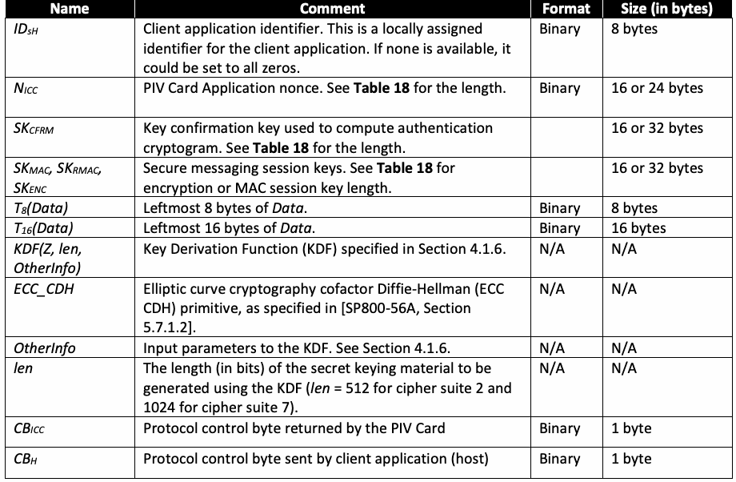
| 名称 | コメント | 形式 | サイズ（バイト） |
| IDsH | クライアントアプリケーション識別子。クライアントアプリケーションにローカルに割り当てられる識別子である。利用できない場合は、すべて0に設定できる。 | バイナリー | 8バイト |
| NICC | PIVカードアプリケーションのnonce。長さについては表18を参照。 | バイナリー | 16または24バイト |
| SKCFRM | 認証クリプトグラムの計算に使用する鍵確認鍵。長さについては表18を参照。 | 16または32バイト | |
| SKMAC, SKRMAC, SKENC | セキュアメッセージングのセッション鍵。暗号化またはMACセッション鍵の長さについては表18を参照。 | 16または32バイト | |
| T8(Data) | Dataの左端8バイト。 | バイナリー | 8バイト |
| T16(Data) | Dataの左端16バイト。 | バイナリー | 16バイト |
| KDF(Z, len, OtherInfo) | 4.1.6節で規定された鍵導出関数（KDF）。 | N/A | N/A |
| ECC_CDH | [SP800-56A, Section 5.7.1.2]で規定された楕円曲線暗号コファクターDiffie-Hellman（ECC CDH）プリミティブ。 | N/A | N/A |
| OtherInfo | KDFへの入力パラメーター。4.1.6節を参照。 | N/A | N/A |
| len | KDFを用いて生成する秘密鍵素材の長さ（ビット単位）。暗号スイート2ではlen = 512、暗号スイート7ではlen = 1024。 | N/A | N/A |
| CBICC | PIVカードが返すプロトコル制御バイト | バイナリー | 1バイト |
| CBH | クライアントアプリケーション（ホスト）が送信するプロトコル制御バイト | バイナリー | 1バイト |
4.1.4. Cipher Suite
4.1.4. 暗号スイート
This document specifies two cipher suites (see Table 18) that MAY be used for key establishment and secure messaging: one that provides 128 bits of channel strength and one that provides 192 bits of channel strength. If the PIV Card Application supports the VCI and either the digital signature key ('9C'), the key management key ('9D'), or one of the retired key management keys ('82' – '95') is an ECC (Curve P-384) key, then PIV Card Application SHALL only support cipher suite CS7. Otherwise, the PIV Card Application MAY support either CS2 or CS7.
本書では、鍵確立およびセキュアメッセージングに使用してもよい（MAY）2種類の暗号スイート（表18を参照）を規定する。1つは128ビットのチャネル強度を、もう1つは192ビットのチャネル強度を提供する。PIVカードアプリケーションがVCIをサポートし、デジタル署名鍵（'9C'）、鍵管理鍵（'9D'）、または退役鍵管理鍵（'82'～'95'）のいずれかがECC（Curve P-384）鍵である場合、PIVカードアプリケーションは暗号スイートCS7のみをサポートしなければならない（SHALL）。それ以外の場合、PIVカードアプリケーションはCS2またはCS7のいずれかをサポートしてもよい（MAY）。
Table 18. Cipher suite for PIV secure messaging
表18. PIVセキュアメッセージング用暗号スイート
未レビュー訳| Cipher suite properties | 128-bit channel strength | 192-bit channel strength |
| Cipher Suite ID | CS2 | CS7 |
| Algorithm Identifier (P1) | '27' | '2E' |
| Key confirmation and session keys (SKCFRM, SKMAC, SKRMAC, SKENC) | AES 128 | AES 256 |
| CICC signature | ECDSA with SHA-256 using an ECDSA (Curve P-256) key | ECDSA with SHA-384 using an ECDSA (Curve P-384) key |
| CICC public key | ECDH (Curve P-256) | ECDH (Curve P-384) |
| KDF hash | SHA-256 | SHA-384 |
| Nonce (NICC) | 16 bytes | 24 bytes |
原本PDFの抜粋画像
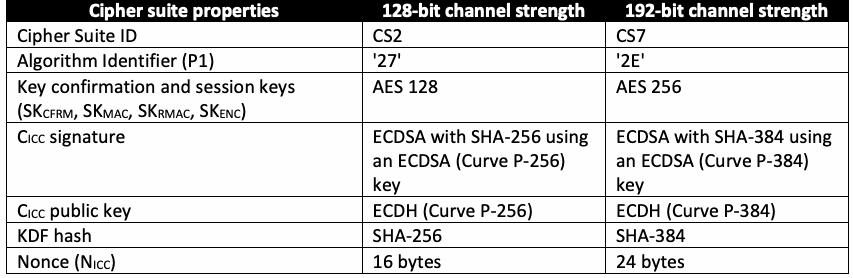
| 暗号スイートの特性 | 128ビットのチャネル強度 | 192ビットのチャネル強度 |
| 暗号スイートID | CS2 | CS7 |
| アルゴリズム識別子（P1） | '27' | '2E' |
| 鍵確認鍵およびセッション鍵（SKCFRM, SKMAC, SKRMAC, SKENC） | AES 128 | AES 256 |
| CICC署名 | ECDSA鍵（Curve P-256）を使用するSHA-256によるECDSA | ECDSA鍵（Curve P-384）を使用するSHA-384によるECDSA |
| CICC公開鍵 | ECDH（Curve P-256） | ECDH（Curve P-384） |
| KDFハッシュ | SHA-256 | SHA-384 |
| nonce（NICC） | 16バイト | 24バイト |
4.1.5. Card Verifiable Certificates
4.1.5. カード検証可能証明書
Table 15 specifies the format for the secure messaging CVC, C . Table 20 specifies the format
表15はセキュアメッセージングCVC、C . の形式を規定する。表20は形式を規定する。
未レビュー訳ICC
ICC
未レビュー訳for the optional Intermediate CVC.
任意の中間CVCの形式について。
未レビュー訳C is used to authenticate the PIV Card Application. The specific data object tags and specified ICC order must be used for both CVCs to allow the CVC processing within authentication protocols. The specific data object tags for C and the optional Intermediate CVC are provided in Table
CはPIVカードアプリケーションの認証に使用される。認証プロトコル内でCVCを処理できるように、両方のCVCについて、指定されたデータオブジェクトタグおよび指定されたICC順序を使用しなければならない（must）。Cおよび任意の中間CVCの具体的なデータオブジェクトタグを、表
未レビュー訳ICC
ICC
未レビュー訳19 and Table 20, respectively.
19および表20にそれぞれ示す。
未レビュー訳The signature of the secure messaging CVC (DigitalSignature object) is calculated over the concatenation of the TLV-encoded Credential Profile Identifier, Issuer Identification Number, Subject Identifier, CardHolderPublicKey Data Object, and Role Identifier (i.e., { '5F29' '01' '80' }
セキュアメッセージングCVCの署名（DigitalSignatureオブジェクト）は、TLV符号化されたCredential Profile Identifier、Issuer Identification Number、Subject Identifier、CardHolderPublicKey Data Object、およびRole Identifierを連結したもの（すなわち、{ '5F29' '01' '80' }）に対して計算される。
未レビュー訳\(\parallel\) { '42' '08' IIN } \(\parallel\) { '5F20' '10' GUID } \(\parallel\) { '7F49' \(\mathrm{L1}\) { { '06' \(\mathrm{L2}\) OID } { '86' \(\mathrm{L3}\) '04' \(\mathrm{X}\) \(\mathrm{Y}\) } } } { '5F4C'
\(\parallel\) { '42' '08' IIN } \(\parallel\) { '5F20' '10' GUID } \(\parallel\) { '7F49' \(\mathrm{L1}\) { { '06' \(\mathrm{L2}\) OID } { '86' \(\mathrm{L3}\) '04' \(\mathrm{X}\) \(\mathrm{Y}\) } } } { '5F4C'
'01' '00' }). Before signing the CVC, the signer SHALL perform partial public-key validation [SP800-56A, Section 5.6.2.3.2] for the public key that will be placed in the public-key object and SHALL verify that the PIV Card is in possession of the corresponding private key (see [SP800-56A, Section 5.6.2.2.3.2] and [SP800-57, Section 8.1.5.1.1.2] for discussions on methods to obtain assurance of private-key possession).
'01' '00' }）。CVCに署名する前に、署名者は公開鍵オブジェクトに格納する予定の（will）公開鍵について部分公開鍵検証[SP800-56A, Section 5.6.2.3.2]を実行しなければならず（SHALL）、PIVカードが対応する秘密鍵を保有していることも検証しなければならない（SHALL）（秘密鍵の保有を保証する方法については[SP800-56A, Section 5.6.2.2.3.2]および[SP800-57, Section 8.1.5.1.1.2]を参照）。
未レビュー訳Table 19. Secure messaging card verifiable certificate format
表19. セキュアメッセージング用カード検証可能証明書の形式
未レビュー訳| Tag | Tag | Tag | Length | Name | Value |
| 0x7F21 | Card Verifiable Certificate | ||||
| 0x5F29 | 1 | Credential Profile Identifier | 0x80 | ||
| 0x42 | 8 | Issuer Identification Number | The leftmost 8 bytes of the subjectKeyIdentifier in the content signing certificate needed to verify the signature on \(\mathrm{C}_{\mathrm{ICC}}\)18 | ||
| 0x5F20 | 16 | Subject Identifier | GUID (Card UUID) | ||
| 0x7F49 | Variable | CardHolderPublicKey Data Object | |||
| 0x06 | Variable | Algorithm OID | Possible values are: 0x2A8648CE3D030107 for ECDH (Curve P-256) or 0x2B81040022 for ECDH (Curve P-384) | ||
| 0x86 | Variable | Public-key object | Coded as follows: \(04 \parallel \mathrm{X} \parallel \mathrm{Y}\), where \(\mathrm{X}\) and \(\mathrm{Y}\) are the coordinates of the point on the curve. See the “Value” column of Table 13. | ||
| 0x5F4C | 1 | Role Identifier | 0x00 for card-application key CVC | ||
| 0x5F37 | Variable | DigitalSignature object | DigitalSignature ::= SEQUENCE { signatureAlgorithm AlgorithmIdentifier, signatureValue BIT STRING } AlgorithmIdentifier ::= SEQUENCE { |
| タグ | タグ | タグ | 長さ | 名前 | 値 |
| 0x7F21 | カード検証可能証明書 | ||||
| 0x5F29 | 1 | 資格情報プロファイル識別子 | 0x80 | ||
| 0x42 | 8 | 発行者識別番号 | コンテンツ署名証明書内のsubjectKeyIdentifierの左端8バイト。この証明書は署名の検証に必要であり、署名の対象は\(\mathrm{C}_{\mathrm{ICC}}\)である18 | ||
| 0x5F20 | 16 | 主体識別子 | GUID（カードUUID） | ||
| 0x7F49 | 可変 | CardHolderPublicKeyデータオブジェクト | |||
| 0x06 | 可変 | アルゴリズムOID | 値の候補: ECDH（Curve P-256）の場合0x2A8648CE3D030107、またはECDH（Curve P-384）の場合0x2B81040022 | ||
| 0x86 | 可変 | 公開鍵オブジェクト | 次のように符号化: \(04 \parallel \mathrm{X} \parallel \mathrm{Y}\)。ここで\(\mathrm{X}\)と\(\mathrm{Y}\)は曲線上の点の座標である。表13の「値」列を参照。 | ||
| 0x5F4C | 1 | 役割識別子 | カードアプリケーション鍵CVCの場合は0x00 | ||
| 0x5F37 | 可変 | DigitalSignatureオブジェクト | DigitalSignature ::= SEQUENCE { signatureAlgorithm AlgorithmIdentifier, signatureValue BIT STRING } AlgorithmIdentifier ::= SEQUENCE { |
| Tag | Tag | Tag | Length | Name | Value |
| algorithm OBJECT IDENTIFIER, parameters ANY DEFINED BY algorithm OPTIONAL } algorithm is 1.2.840.10045.4.3.2 for ECDSA with SHA-256 (cipher suite 2) and 1.2.840.10045.4.3.3 for ECDSA with SHA- 384 (cipher suite 7). For both algorithms, the parameters field is absent. signatureValue is the DER encoding of signature result ECDSA-Sig-Value defined below. ECDSA-Sig-Value ::= SEQUENCE { r INTEGER, s INTEGER } |
原本PDFの抜粋画像
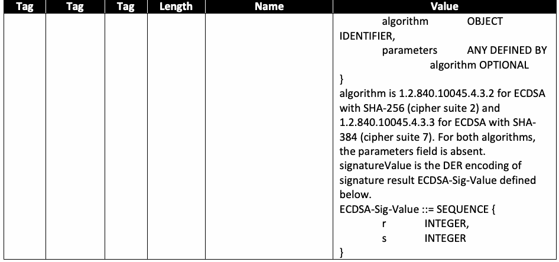
| タグ | タグ | タグ | 長さ | 名前 | 値 |
| algorithm OBJECT IDENTIFIER, parameters ANY DEFINED BY algorithm OPTIONAL } algorithm は、1.2.840.10045.4.3.2がSHA-256を用いるECDSA（暗号スイート2）、1.2.840.10045.4.3.3がSHA-384を用いるECDSA（暗号スイート7）である。どちらのアルゴリズムでも、parametersフィールドは存在しない。signatureValueは、下に定義する署名結果ECDSA-Sig-ValueのDER符号化である。ECDSA-Sig-Value ::= SEQUENCE { r INTEGER, s INTEGER } |
Table 20. Intermediate card verifiable certificate format
表20. 中間カード検証可能証明書の形式
未レビュー訳| Tag | Tag | Tag | Length | Name | Value |
| 0x7F21 | Variable | Card Verifiable Certificate | |||
| 0x5F29 | 1 | Credential Profile Identifier | 0x80 | ||
| 0x42 | 8 | Issuer Identification Number | The leftmost 8 bytes of the subjectKeyIdentifier in the content signing certificate needed to verify the signature on the Intermediate CVC | ||
| 0x5F20 | 8 | Subject Identifier | The leftmost 8 bytes of the SHA-1 hash of the public-key object | ||
| 0x7F49 | Variable | PublicKey Data Object | |||
| 0x06 | Variable | Algorithm OID | Possible values are: 0x2A8648CE3D030107 for ECDH (Curve P-256) or 0x2B81040022 for ECDH (Curve P-384) | ||
| 0x86 | Variable | Public-key object | Coded as follows: \(04 \parallel \mathrm{X} \parallel \mathrm{Y}\), where \(\mathrm{X}\) and \(\mathrm{Y}\) are the coordinates of the point on the curve. See the “Value” column of Table 13. | ||
| 0x5F4C | 1 | Role Identifier | 0x12 for card-application root CVC | ||
| 0x5F37 | Variable | DigitalSignature object | DigitalSignature ::= SEQUENCE { signatureAlgorithm AlgorithmIdentifier, signatureValue BIT STRING } AlgorithmIdentifier ::= SEQUENCE { algorithm OBJECT IDENTIFIER, parameters ANY DEFINED BY algorithm OPTIONAL } |
| タグ | タグ | タグ | 長さ | 名前 | 値 |
| 0x7F21 | 可変 | カード検証可能証明書 | |||
| 0x5F29 | 1 | 資格情報プロファイル識別子 | 0x80 | ||
| 0x42 | 8 | 発行者識別番号 | 中間CVCの署名を検証するために必要なコンテンツ署名証明書のsubjectKeyIdentifierの左端8バイト | ||
| 0x5F20 | 8 | 主体識別子 | 公開鍵オブジェクトのSHA-1ハッシュの左端8バイト | ||
| 0x7F49 | 可変 | 公開鍵データオブジェクト | |||
| 0x06 | 可変 | アルゴリズムOID | 指定可能な値：0x2A8648CE3D030107はECDH（曲線P-256）、0x2B81040022はECDH（曲線P-384） | ||
| 0x86 | 可変 | 公開鍵オブジェクト | 次の形式で符号化する：\(04 \parallel \mathrm{X} \parallel \mathrm{Y}\)。\(\mathrm{X}\)および\(\mathrm{Y}\)は曲線上の点の座標である。表13の「値」列を参照。 | ||
| 0x5F4C | 1 | 役割識別子 | カードアプリケーションルートCVCの場合は0x12 | ||
| 0x5F37 | 可変 | DigitalSignatureオブジェクト | DigitalSignature ::= SEQUENCE { signatureAlgorithm AlgorithmIdentifier, signatureValue BIT STRING } AlgorithmIdentifier ::= SEQUENCE { algorithm OBJECT IDENTIFIER, parameters ANY DEFINED BY algorithm OPTIONAL } |
| Tag | Tag | Tag | Length | Name | Value |
| algorithm is 1.2.840.113549.1.1.11 for RSA with SHA-256 and PKCS #1 v1.5 padding. The parameters field SHALL be NULL. |
原本PDFの抜粋画像
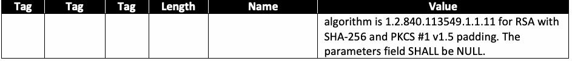
| タグ | タグ | タグ | 長さ | 名前 | 値 |
| algorithm は1.2.840.113549.1.1.11であり、SHA-256およびPKCS #1 v1.5パディングを用いるRSAを示す。parametersフィールドはNULLでなければならない（SHALL）。 |
The signature of the Intermediate CVC (DigitalSignature object) is calculated over the concatenation of the TLV-encoded Credential Profile Identifier, Issuer Identification Number, Subject Identifier, PublicKey Data Object, and Role Identifier (i.e., { '5F29' '01' '80' } \(\parallel\) { '42' '08' IIN } \(\parallel\) { '5F20' '08' SI } \(\parallel\) { '7F49' \(\mathrm{L1}\) { { '06' \(\mathrm{L2}\) OID } { '86' \(\mathrm{L3}\) '04' \(\mathrm{X}\) \(\mathrm{Y}\) } } } { '5F4C' '01' '12' }).
中間CVC（DigitalSignatureオブジェクト）の署名は、資格情報プロファイル識別子、発行者識別番号、主体識別子、公開鍵データオブジェクト、および役割識別子をTLV符号化して連結したものに対して計算する（すなわち、{ '5F29' '01' '80' } \(\parallel\) { '42' '08' IIN } \(\parallel\) { '5F20' '08' SI } \(\parallel\) { '7F49' \(\mathrm{L1}\) { { '06' \(\mathrm{L2}\) OID } { '86' \(\mathrm{L3}\) '04' \(\mathrm{X}\) \(\mathrm{Y}\) } } } { '5F4C' '01' '12' }）。
Before signing the CVC, the signer SHALL perform partial public-key validation [SP800-56A, Section 5.6.2.3.2] for the public key that will be placed in the public-key object and SHALL verify that the subject is in possession of the corresponding private key (see [SP800-56A, Section 5.6.2.2.3.2] and [SP800-57, Section 8.1.5.1.1.2] for discussions on methods to obtain assurance of private-key possession).
CVCに署名する前に、署名者は公開鍵オブジェクトに格納する公開鍵について部分的公開鍵検証[SP800-56A, Section 5.6.2.3.2]を実施しなければならない（SHALL）。また、主体が対応する秘密鍵を保有していることを検証しなければならない（SHALL）（秘密鍵の保有保証を得る方法については、[SP800-56A, Section 5.6.2.2.3.2]および[SP800-57, Section 8.1.5.1.1.2]の説明を参照）。
未レビュー訳4.1.6. Key Derivation
4.1.6. 鍵導出
The session keys SHALL be derived in Steps C7 and H10 of the protocol using the key derivation function from [SP800-56A, Section 5.8.1], with the auxiliary function H being the hash function specified as the KDF hash in Table 18, the length of the keying material to be derived (len) being 512 bits for CS2 and 1024 bits for CS7, and OtherInfo being constructed using the following concatenation format:
セッション鍵は、プロトコルのステップC7およびH10において[SP800-56A, Section 5.8.1]の鍵導出関数を用いて導出しなければならない（SHALL）。補助関数Hには表18でKDFハッシュとして指定されたハッシュ関数を用い、導出する鍵素材の長さ（len）はCS2では512ビット、CS7では1024ビットとし、OtherInfoは次の連結形式を用いて構成する：
未レビュー訳| Cipher Suite ID | |
| \(\mathit{OtherInfo}\) | |
| CS2 | \(\mathrm{0x04} \parallel \mathrm{0x09} \parallel \mathrm{0x09} \parallel \mathrm{0x09} \parallel \mathrm{0x09} \parallel \mathrm{0x08} \parallel \mathrm{ID}_{\mathrm{sH}} \parallel \mathrm{0x01} \parallel \mathrm{CB}_{\mathrm{H}} \parallel \mathrm{0x10} \parallel \mathrm{T}_{16}(\mathrm{Q}_{\mathrm{eH}}) \parallel \mathrm{0x08} \parallel \mathrm{ID}_{\mathrm{sICC}} \parallel \mathrm{0x10} \parallel \mathrm{N}_{\mathrm{ICC}} \parallel \mathrm{0x01} \parallel \mathrm{CB}_{\mathrm{ICC}}\) |
| CS7 | \(\mathrm{0x04} \parallel \mathrm{0x0D} \parallel \mathrm{0x0D} \parallel \mathrm{0x0D} \parallel \mathrm{0x0D} \parallel \mathrm{0x08} \parallel \mathrm{ID}_{\mathrm{sH}} \parallel \mathrm{0x01} \parallel \mathrm{CB}_{\mathrm{H}} \parallel \mathrm{0x10} \parallel \mathrm{T}_{16}(\mathrm{Q}_{\mathrm{eH}}) \parallel \mathrm{0x08} \parallel \mathrm{ID}_{\mathrm{sICC}} \parallel \mathrm{0x18} \parallel \mathrm{N}_{\mathrm{ICC}} \parallel \mathrm{0x01} \parallel \mathrm{CB}_{\mathrm{ICC}}\) |
| 暗号スイートID | |
| \(\mathit{OtherInfo}\) | |
| CS2 | \(\mathrm{0x04} \parallel \mathrm{0x09} \parallel \mathrm{0x09} \parallel \mathrm{0x09} \parallel \mathrm{0x09} \parallel \mathrm{0x08} \parallel \mathrm{ID}_{\mathrm{sH}} \parallel \mathrm{0x01} \parallel \mathrm{CB}_{\mathrm{H}} \parallel \mathrm{0x10} \parallel \mathrm{T}_{16}(\mathrm{Q}_{\mathrm{eH}}) \parallel \mathrm{0x08} \parallel \mathrm{ID}_{\mathrm{sICC}} \parallel \mathrm{0x10} \parallel \mathrm{N}_{\mathrm{ICC}} \parallel \mathrm{0x01} \parallel \mathrm{CB}_{\mathrm{ICC}}\) |
| CS7 | \(\mathrm{0x04} \parallel \mathrm{0x0D} \parallel \mathrm{0x0D} \parallel \mathrm{0x0D} \parallel \mathrm{0x0D} \parallel \mathrm{0x08} \parallel \mathrm{ID}_{\mathrm{sH}} \parallel \mathrm{0x01} \parallel \mathrm{CB}_{\mathrm{H}} \parallel \mathrm{0x10} \parallel \mathrm{T}_{16}(\mathrm{Q}_{\mathrm{eH}}) \parallel \mathrm{0x08} \parallel \mathrm{ID}_{\mathrm{sICC}} \parallel \mathrm{0x18} \parallel \mathrm{N}_{\mathrm{ICC}} \parallel \mathrm{0x01} \parallel \mathrm{CB}_{\mathrm{ICC}}\) |
For Q , the coordinates of the ephemeral public key are converted from field elements to byte
Q の場合、一時公開鍵の座標を有限体要素からバイト
未レビュー訳eH
未レビュー訳strings (as specified in [SP800-56A, Appendix C.2]), Field-Element-to-Byte String Conversion, and concatenated (with x first) to form a single byte string. The first 16 bytes from this byte string are included in OtherInfo.
列に変換し（[SP800-56A, Appendix C.2]のField-Element-to-Byte String Conversionに規定）、連結して（xを先頭として）単一のバイト列を形成する。このバイト列の先頭16バイトをOtherInfoに含める。
未レビュー訳4.1.7. Key Confirmation
4.1.7. 鍵確認
Key confirmation SHALL be performed in Steps C9 and H12 of the protocol by the generation of AuthCryptogram in accordance with Sections 5.9.1.1 and 6.2.2.3 of [SP800-56A].
鍵確認は、プロトコルのステップC9およびH12において[SP800-56A]のSection 5.9.1.1および6.2.2.3に従いAuthCryptogramを生成して実施しなければならない（SHALL）。
未レビュー訳ICC
ICC
未レビュー訳AuthCryptogram SHALL be computed as CMAC(MacKey, MacLen, MacData ), where MacKey
AuthCryptogramはCMAC(MacKey, MacLen, MacData )として計算しなければならない（SHALL）。ここでMacKey
未レビュー訳p
未レビュー訳ICC
ICC
未レビュー訳is \(\mathrm{SK}_{\mathrm{CFRM}}\), \(\mathit{MacLen}\) is 128 bits, and \(\mathit{MacData}_p\) is \(\text{"KC\_1\_V"} \parallel \mathrm{ID}_{\mathrm{sICC}} \parallel \mathrm{ID}_{\mathrm{sH}} \parallel \mathrm{Q}_{\mathrm{eH}}\). "KC_1_V" is a 6-
は\(\mathrm{SK}_{\mathrm{CFRM}}\)、\(\mathit{MacLen}\)は128ビット、\(\mathit{MacData}_p\)は\(\text{"KC\_1\_V"} \parallel \mathrm{ID}_{\mathrm{sICC}} \parallel \mathrm{ID}_{\mathrm{sH}} \parallel \mathrm{Q}_{\mathrm{eH}}\)である。"KC_1_V"は6
sICC sH eH
sICC sH eH
未レビュー訳byte ASCII string ('4B 43 5F 31 5F 56'). For Q , the coordinates of the ephemeral public key are eH converted from field elements to byte strings (as specified in [SP800-56A, Appendix C.2]), Field-Element-to-Byte String Conversion, and concatenated (with x first) to form a single byte string.
（'4B 43 5F 31 5F 56'）である。Q の場合、一時公開鍵の座標を、有限体要素からバイト列に変換し（[SP800-56A, Appendix C.2]のField-Element-to-Byte String Conversionに規定）、連結して（xを先頭として）単一のバイト列を形成する。
未レビュー訳CMAC is a cipher-based message authentication code from [SP800-38B], where the block cipher is AES.
CMACは[SP800-38B]に定めるブロック暗号ベースのメッセージ認証コードであり、ブロック暗号にはAESを用いる。
未レビュー訳4.1.8. Command Interface
4.1.8. コマンドインターフェース
The following command interface SHALL be used for the key establishment protocol.
鍵確立プロトコルには、次のコマンドインターフェースを使用しなければならない（SHALL）。
Command Syntax
コマンド構文
未レビュー訳| CLA | '00' |
| INS | '87' |
| P1 | Algorithm reference ('27' or '2E'), as specified in the 0xAC tag of the application property template |
| P2 | '04' (PIV Secure Messaging key). |
| \(\mathrm{L}_{\mathrm{c}}\) | Length of data field |
| Data Field | '7C' \(\mathrm{L1}\) { '81' \(\mathrm{L2}\) { \(\mathrm{CB}_{\mathrm{H}} \parallel \mathrm{ID}_{\mathrm{sH}} \parallel \mathrm{Q}_{\mathrm{eH}}\) } '82 00' }, where \(\mathrm{CB}_{\mathrm{H}}\) is 0x00, \(\mathrm{ID}_{\mathrm{sH}}\) is an 8-byte client application identifier as described in Section 4.1.3, and \(\mathrm{Q}_{\mathrm{eH}}\) is an ephemeral public key encoded as \(04 \parallel \mathrm{X} \parallel \mathrm{Y}\), as specified in the “Value” column of Table 13. |
| \(\mathrm{L}_{\mathrm{e}}\) | '00' |
| CLA | '00' |
| INS | '87' |
| P1 | アルゴリズム参照（'27'または'2E'）。この値はアプリケーションプロパティテンプレートの0xACタグに規定される |
| P2 | '04'（PIVセキュアメッセージング鍵）。 |
| \(\mathrm{L}_{\mathrm{c}}\) | データフィールドの長さ |
| データフィールド | '7C' \(\mathrm{L1}\) { '81' \(\mathrm{L2}\) { \(\mathrm{CB}_{\mathrm{H}} \parallel \mathrm{ID}_{\mathrm{sH}} \parallel \mathrm{Q}_{\mathrm{eH}}\) } '82 00' }。\(\mathrm{CB}_{\mathrm{H}}\)は0x00、\(\mathrm{ID}_{\mathrm{sH}}\)はSection 4.1.3に記載された8バイトのクライアントアプリケーション識別子、\(\mathrm{Q}_{\mathrm{eH}}\)は一時公開鍵であり、\(04 \parallel \mathrm{X} \parallel \mathrm{Y}\)として符号化する（表13の「値」列の規定による）。 |
| \(\mathrm{L}_{\mathrm{e}}\) | '00' |
Response Syntax
応答構文
未レビュー訳| Data Field | '7C' \(\mathrm{L1}\) { '82' \(\mathrm{L2}\) { \(\mathrm{CB}_{\mathrm{ICC}} \parallel \mathrm{N}_{\mathrm{ICC}} \parallel \mathrm{AuthCryptogram}_{\mathrm{ICC}} \parallel \mathrm{C}_{\mathrm{ICC}}\) } } |
| SW1-SW2 | Status word |
| データフィールド | '7C' \(\mathrm{L1}\) { '82' \(\mathrm{L2}\) { \(\mathrm{CB}_{\mathrm{ICC}} \parallel \mathrm{N}_{\mathrm{ICC}} \parallel \mathrm{AuthCryptogram}_{\mathrm{ICC}} \parallel \mathrm{C}_{\mathrm{ICC}}\) } } |
| SW1-SW2 | ステータスワード |
| SW1 | SW2 | Meaning |
| '61' | 'xx' | Successful execution, where SW2 encodes the number of response data bytes still available |
| '6A' | '80' | Incorrect parameter in command data field |
| '6A' | '86' | Incorrect parameter in P1 or P2 |
| '90' | '00' | Successful execution |
原本PDFの抜粋画像
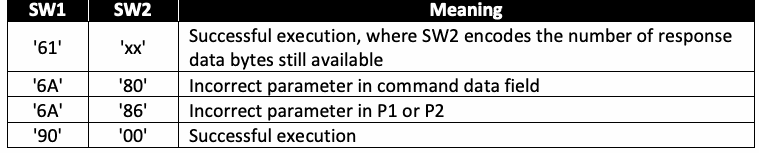
| SW1 | SW2 | 意味 |
| '61' | 'xx' | 正常に実行。SW2は残りの応答データバイト数を符号化する |
| '6A' | '80' | コマンドデータフィールドのパラメータが不正 |
| '6A' | '86' | P1またはP2のパラメータが不正 |
| '90' | '00' | 正常に実行 |
4.2. Secure Messaging
4.2. セキュアメッセージング
PIV secure messaging is used to protect the integrity and confidentiality of the PIV data being transmitted between the card and the relying system. PIV secure messaging SHALL be provided using symmetric session keys derived through the key establishment protocol defined Section 4.1.
PIVセキュアメッセージングは、カードと依拠システム間で伝送されるPIVデータの完全性および機密性を保護するために使用する。PIVセキュアメッセージングは、4.1節に定義する鍵確立プロトコルで導出した対称セッション鍵を用いて提供しなければならない（SHALL）。
Once session keys are established and the card is authenticated as specified in Section 4.1, subsequent communication with the card CAN be performed using secure messaging by setting bits b3 and b4 of the CLA byte of the command APDU to 1, resulting in a '0C' or '1C' CLA byte. If bits b3 and b4 of the CLA byte are set, then both the command and the response SHALL be encrypted and integrity protected, as described in this section. If the PIV Card Application CANNOT encrypt and integrity protect the response (e.g., because it does not support secure messaging or no session keys have been established), the PIV Card Application SHALL return an error (see Section 4.2.7). In the case of command chaining, if bits b3 and b4 of the CLA are set in any command in the chain, then they SHALL be set in every command in the chain.
セッション鍵が確立され、Section 4.1に規定するカード認証が完了した後は、コマンドAPDUのCLAバイトのビットb3およびb4を1に設定して（CLAバイトは'0C'または'1C'となる）、以降のカードとの通信をセキュアメッセージングで実行できる（CAN）。CLAバイトのビットb3およびb4が設定されている場合、コマンドと応答の両方を、この節の説明に従って暗号化し、完全性を保護しなければならない（SHALL）。PIVカードアプリケーションが応答を暗号化して完全性保護できない（CANNOT）場合（例：セキュアメッセージングをサポートしない、またはセッション鍵が確立されていない場合）、PIVカードアプリケーションはエラーを返さなければならない（SHALL）（Section 4.2.7を参照）。コマンド連鎖の場合、連鎖内のいずれかのコマンドでCLAのビットb3およびb4を設定したときは、連鎖内のすべてのコマンドでそれらのビットを設定しなければならない（SHALL）。
未レビュー訳When secure messaging is used, the data field of the card command (or response) is encrypted first and then a message authentication code (MAC) is applied to the entire command (or response). When command (or response) chaining is required, the encryption and MAC are applied to the entire message, and the result is then fragmented into separate command (or response) data fields.
セキュアメッセージングを使用する場合、カードコマンド（または応答）のデータフィールドを最初に暗号化し、次にコマンド（または応答）全体にメッセージ認証コード（MAC）を適用する。コマンド（または応答）チェイニングが必要な場合は、メッセージ全体に暗号化とMACを適用し、その結果を個別のコマンド（または応答）データフィールドに分割する。
In order to ensure that message reordering or replay attacks CAN be detected, a 16-byte MAC chaining value (MCV) is used. For the first command, and for the first response, sent after successful completion of the key establishment protocol the MCV consists of 16 bytes of '00'. For each subsequent command the MCV is the 16-byte MAC value computed on the previous command, and for each subsequent response the MCV is the 16-byte MAC value computed on the previous response. The MCV is included as part of the message over which the MAC value for each command (or response) is computed.
メッセージの並べ替えまたはリプレイ攻撃を検知できるように、16バイトのMAC連鎖値（MCV）を使用できる（CAN）。鍵確立プロトコルの正常完了後に送信する最初のコマンドおよび最初の応答では、MCVは16バイトの'00'で構成する。その後の各コマンドのMCVは直前のコマンドで計算した16バイトのMAC値であり、その後の各応答のMCVは直前の応答で計算した16バイトのMAC値である。MCVは、各コマンド（または応答）のMAC値を計算する対象メッセージの一部として含める。
未レビュー訳The SK session key SHALL be used to encrypt the command data field and response data
SK セッション鍵は、コマンドデータフィールドおよび応答データ（SHALL）
未レビュー訳ENC
ENC
未レビュー訳field, as described in Section 4.2.2. The SK session key SHALL be used to add integrity to the MAC command, as described in Section 4.2.3. The SK session key SHALL be used to add integrity RMAC to the response, as described in Section 4.2.5.
フィールドをSection 4.2.2に記載のとおり暗号化するために使用する。SK セッション鍵は、Section 4.2.3に記載のとおり、コマンドにMAC完全性保護を付与するために使用しなければならない（SHALL）。SK セッション鍵は、Section 4.2.5に記載のとおり、応答にRMAC完全性保護を付与するために使用しなければならない（SHALL）。
未レビュー訳Secure messaging specified in this section CAN be applied to the following commands:
この節で規定するセキュアメッセージングは、次のコマンドに適用できる（CAN）：
• GET DATA
• GET DATA
未レビュー訳• VERIFY
• VERIFY（検証）
未レビュー訳• CHANGE REFERENCE DATA
• CHANGE REFERENCE DATA（参照データの変更）
未レビュー訳• GENERAL AUTHENTICATE
• GENERAL AUTHENTICATE（一般認証）
未レビュー訳4.2.1. Secure Messaging Data Objects
4.2.1. セキュアメッセージングデータオブジェクト
The command and response messages SHALL be BER-TLV encoded according to Table 21.
コマンドおよび応答メッセージは、表21に従ってBER-TLV符号化しなければならない（SHALL）。
未レビュー訳Table 21. Secure messaging data objects
表21. セキュアメッセージングデータオブジェクト
未レビュー訳| Tag | Description |
| '87' | Padding content indicator byte followed by the encrypted data |
| '8E' | Cryptographic checksum (MAC) |
| '97' | Le |
| '99' | Status word |
原本PDFの抜粋画像
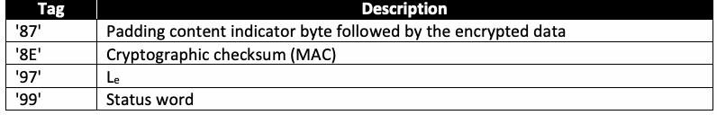
| タグ | 説明 |
| '87' | パディング内容インジケータバイトと、それに続く暗号化データ |
| '8E' | 暗号チェックサム（MAC） |
| '97' | Le |
| '99' | ステータスワード |
4.2.2. Command and Response Data Confidentiality
4.2.2. コマンドおよび応答データの機密性
Under secure messaging, the PIV data is encrypted using AES in Cipher Block Chaining (CBC) mode with the SK session key, where SK is a 128-bit key for CS2 and a 256-bit key for CS7,
セキュアメッセージングでは、PIVデータをSKセッション鍵を用いたAESのCipher Block Chaining（CBC）モードで暗号化する。SKはCS2では128ビット鍵、CS7では256ビット鍵であり、
未レビュー訳ENC
ENC
未レビュー訳ENC as per Table 18. The encryption and encoding process for command data and response data
ENCは表18に従う。コマンドデータと応答データの暗号化および符号化プロセスは
未レビュー訳SHALL be the same. The encryption of the command data or response data and encoding in
同一でなければならない（SHALL）。コマンドデータまたは応答データの暗号化と符号化をBER-TLV形式で行う方法を
未レビュー訳BER-TLV format is illustrated Fig. 1. The encryption SHALL be computed over the entire message before applying fragmentation for data transportation.
図1に示す。暗号化は、データ転送のために分割する前にメッセージ全体に対して実行しなければならない（SHALL）。
未レビュー訳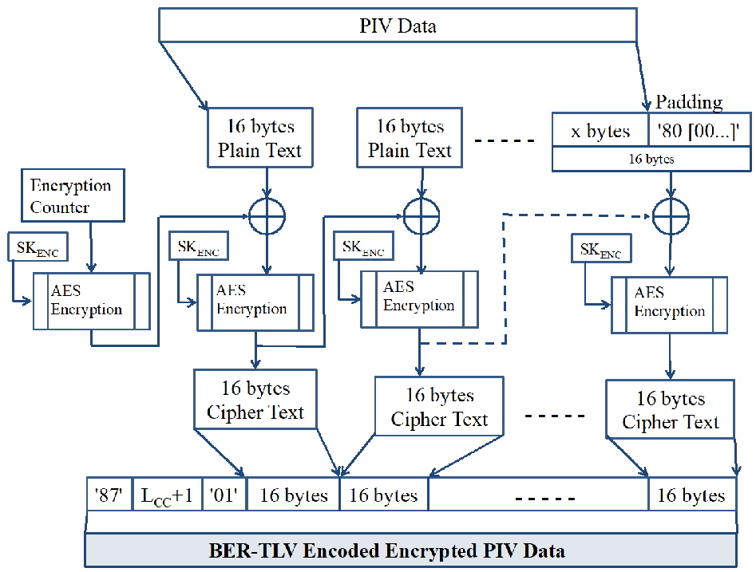
PIVデータの暗号化処理図。平文とパディングをブロックに分割し、カウンターを使ったAES暗号化で暗号文を生成する。暗号化鍵と初期カウンター値も示す。
Fig. 1. PIV data confidentiality
図1. PIVデータの機密性
未レビュー訳Initialization Vector (IV). The IV for the AES CBC encryption of command data SHALL be generated by applying the AES block cipher to a 16-byte encryption counter. The initial value of the encryption counter upon successful completion of the key establishment protocol SHALL be '00 00 00 00 00 00 00 00 00 00 00 00 00 00 00 01'. The encryption counter SHALL be incremented by one after each APDU sent over secure messaging (except for the GET RESPONSE command and APDUs with a CLA of '1C'), and it SHALL be reset to its initial value after each successful completion of the key establishment protocol. The 16-byte IV SHALL be created by encrypting the encryption counter with SK using AES in the electronic codebook
初期化ベクトル（IV）。コマンドデータをAES CBCで暗号化するIVは、16バイトの暗号化カウンターにAESブロック暗号を適用して生成しなければならない（SHALL）。鍵確立プロトコルの正常完了時における暗号化カウンターの初期値は、'00 00 00 00 00 00 00 00 00 00 00 00 00 00 00 01'でなければならない（SHALL）。セキュアメッセージングで送信する各APDUの後（GET RESPONSEコマンドおよびCLAが'1C'のAPDUを除く）に暗号化カウンターを一増加させなければならず（SHALL）、鍵確立プロトコルが正常に完了するたびに初期値へリセットしなければならない（SHALL）。16バイトのIVは、SKを用いてAESをelectronic codebook（SHALL）
未レビュー訳ENC
ENC
未レビュー訳(ECB) mode of operation.
（ECB）モードで使用し、暗号化カウンターを暗号化して生成する。
未レビュー訳The IV for the AES CBC encryption of response data SHALL also be generated by encrypting an encryption counter with SK using AES in the ECB mode of operation. The encryption counter
応答データをAES CBCで暗号化するIVも、SKを用いてAES ECBモードで暗号化カウンターを暗号化して生成しなければならない（SHALL）。暗号化カウンター
未レビュー訳ENC
ENC
未レビュー訳value used to generate the IV to encrypt the response data SHALL be the same as the encryption counter value used to generate the IV to encrypt the corresponding request data, with the exception that the most significant byte of the 16-byte counter SHALL be set to '80' (i.e., the IV used to encrypt the first response after successful completion of the key establishment protocol SHALL be generated by encrypting '80 00 00 00 00 00 00 00 00 00 00 00 00 00 00 01' with SK ).
応答データを暗号化するIVの生成に用いる値は、対応する要求データを暗号化するIVの生成に用いる暗号化カウンター値と同じでなければならない（SHALL）。ただし、16バイトカウンターの最上位バイトを'80'に設定しなければならない（SHALL）（すなわち、鍵確立プロトコルの正常完了後、最初の応答を暗号化するIVは、'80 00 00 00 00 00 00 00 00 00 00 00 00 00 00 01'をSKで暗号化して生成しなければならない（SHALL））
未レビュー訳ENC
ENC
未レビュー訳Padding. Prior to encryption, 1 – 16 bytes of padding data SHALL be appended to the PIV data. The padding SHALL be '80' followed by the number of zeros needed to make the total length of the message to be encrypted (i.e., PIV data plus padding) a multiple of 16 bytes. The first byte of the value field of tag '87' — the padding content indicator byte — SHALL be '01' to indicate that padding has been applied.
パディング。暗号化前に、1～16バイトのパディングデータをPIVデータに追加しなければならない（SHALL）。パディングは'80'とし、暗号化対象メッセージ（すなわちPIVデータとパディングの合計）の長さが16バイトの倍数になるのに必要な数のゼロを後続させなければならない（SHALL）。タグ'87'の値フィールドの最初のバイト、すなわちパディング内容インジケータバイトは、パディングが適用されたことを示すため'01'でなければならない（SHALL）。
As illustrated in Fig. 1, the input and output of encryption are as follows:
図1に示すように、暗号化の入力および出力は次のとおりである：
未レビュー訳•Encryption input:
•暗号化入力：
Plain Text
平文
未レビュー訳•Encryption output:
•暗号化出力：
BER-TLV-encoded encrypted message, which consists of tag '87' followed by the length of the encoded encrypted message (L + 1), the padding indicator byte ('01'), and then cc the encrypted data. L is the length of the encrypted PIV data; it SHALL be a multiple of
暗号化されたBER-TLV符号化メッセージ。これはタグ'87'、続いて符号化暗号文の長さ（L + 1）、パディングインジケータバイト（'01'）、さらに暗号化データccから成る。Lは暗号化されたPIVデータの長さであり、倍数でなければならない（SHALL）
未レビュー訳cc
未レビュー訳16.
16。
未レビュー訳4.2.3. Command Integrity
4.2.3. コマンドの完全性
The Command MAC (C-MAC) SHALL be generated by applying the cipher-based MAC (CMAC) [SP800-38B] to the header and data field of a command using the SK session key. If
コマンドMAC（C-MAC）は、SKセッション鍵を用い、コマンドのヘッダーおよびデータフィールドに暗号ベースMAC（CMAC）[SP800-38B]を適用して生成しなければならない（SHALL）。
未レビュー訳MAC
MAC
未レビュー訳fragmentation is required for data transmission, the command SHALL be constructed without fragmentation for the purposes of computing the MAC, and the CLA byte used in the computation of the MAC SHALL be '0C'.
データ伝送で分割が必要な場合、MAC計算では分割しないコマンドを構成しなければならず（SHALL）、MAC計算に使用するCLAバイトは'0C'でなければならない（SHALL）。
未レビュー訳The data to be MACed, M , SHALL be constructed by concatenating the following:
MAC対象データMは、次を連結して構成しなければならない（SHALL）：
未レビュー訳C-MAC
C-MAC
未レビュー訳1.The 16-byte MAC chaining value (MCV). For the first command sent after successful completion of the key establishment protocol the MCV consists of 16 bytes of '00'. For each subsequent command the MCV is the 16-byte MAC value computed for the previous command.
1.16バイトのMACチェイニング値（MCV）。鍵確立プロトコルの正常完了後に送信する最初のコマンドでは、MCVは16バイトの'00'で構成する。その後の各コマンドでは、MCVは直前のコマンドに対して計算した16バイトのMAC値である。
2.A 16-btye encoded header. The encoded header SHALL consist of the CLA byte ('0C'), the INS byte, P1, and P2, followed by twelve bytes of padding, consisting of '80' followed eleven bytes of '00'. (The length of the data field, L , is not included in the data to be c MACed.)
2.16バイトの符号化ヘッダー。符号化ヘッダーはCLAバイト（'0C'）、INSバイト、P1およびP2に続き、'80'と、それに続く'00'の十一バイトからなる十二バイトのパディングで構成しなければならない（SHALL）。データフィールドの長さL はMAC対象データに含めない。
未レビュー訳3.The data field, which is the BER-TLV-encoded encrypted message.19
3.データフィールド。これはBER-TLV符号化された暗号化メッセージである。19
未レビュー訳4.L encapsulated in BER-TLV format with tag '97' if the L field is included in the e e command.20
4.コマンドにL フィールドが含まれる場合は、Lをタグ'97'でBER-TLV形式にカプセル化する。20
未レビュー訳Let T = CMAC(SK , M ), as described in [SP800-38B]. The BER-TLV-encoded C-MAC for C-MAC
[SP800-38B] に記載のとおり T = CMAC(SK , M ) とする。コマンドの BER-TLV エンコード C-MAC は C-MAC
未レビュー訳MAC C-MAC
MAC C-MAC
未レビュー訳the command SHALL be the 8 most significant bytes of T encapsulated in BER-TLV format
T の最上位 8 バイトを BER-TLV 形式でカプセル化したものとしなければならない (SHALL)。
未レビュー訳C-MAC
C-MAC
未レビュー訳with tag '8E'. The entire 16-byte value T will be the MCV for the next command. C-MAC
タグ '8E' を付ける。T の 16 バイト全体が次のコマンドの MCV となる。C-MAC
未レビュー訳Figure 2 illustrates how the C-MAC is generated for each command.
図 2 は、各コマンドについて C-MAC がどのように生成されるかを示す。
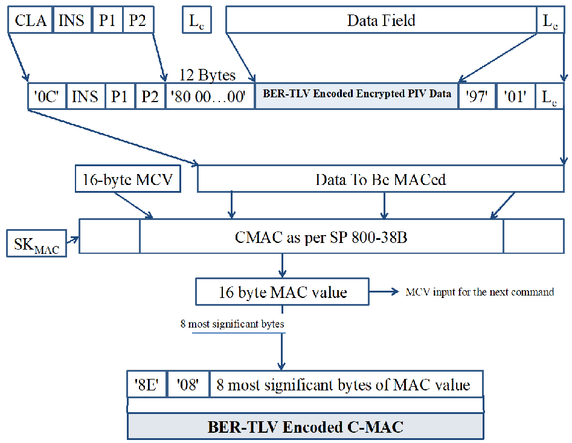
コマンドのセキュアメッセージング図。暗号化PIVデータとC-MACをBER-TLV形式で格納し、SP 800-38BのCMACを計算する。MAC値の上位8バイトを使い、次のコマンド用のMAC計算値を更新する。
Fig. 2. PIV data integrity of command
図 2. コマンドの PIV データ完全性
未レビュー訳4.2.4. Command With PIV Secure Messaging
4.2.4. PIV セキュアメッセージングを使用するコマンド
For secure messaging, the secure messaging data field SHALL be constructed as the concatenation of the following:
セキュアメッセージングでは、セキュアメッセージングデータフィールドを、次の要素を連結して構成しなければならない (SHALL)。
•The BER-TLV-encoded encrypted PIV data;21
•BER-TLV エンコードされた暗号化済み PIV データ;21
未レビュー訳•The 3-btye BER-TLV-encoded L , as described in Section 4.2.3, if L would have been e e included in a message sent without secure messaging;
•セキュアメッセージングを使用せずに送信するメッセージに L が含まれる場合は、Section 4.2.3 に記載の 3 バイトの BER-TLV エンコード L ;
未レビュー訳•The 10-byte BER-TLV-encoded C-MAC of the command, as described in Section 4.2.3; and
•Section 4.2.3 に記載の、コマンドの 10 バイト BER-TLV エンコード C-MAC; および
未レビュー訳•A new L field, which SHALL be 1 byte and SHALL have a value of '00'.22 e
•新しい L フィールド。これは 1 バイトでなければならず (SHALL)、値は '00' でなければならない (SHALL)。22 e
未レビュー訳Figure 3 shows the APDU for secure messaging when command chaining is not required. The APDU consists of the CLA byte ('0C'), INS, P1, P2, the length of the secure messaging data field (L '), the secure messaging data field, and the new L field ('00'). c e
図 3 は、コマンドチェイニングが不要な場合のセキュアメッセージング用 APDU を示す。APDU は、CLA バイト ('0C')、INS、P1、P2、セキュアメッセージングデータフィールドの長さ (L ')、セキュアメッセージングデータフィールド、および新しい L フィールド ('00') で構成される。c e
未レビュー訳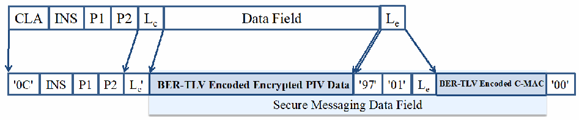
セキュアメッセージングのデータフィールド形式。CLA、INS、P1、P2、長さに続けて、BER-TLV形式の暗号化PIVデータとC-MACを格納する。
Fig. 3. Single command under secure messaging
図 3. セキュアメッセージング下の単一コマンド
未レビュー訳Command chaining will be needed if the secure messaging data field to be transported is larger than 255 bytes. Figure 4 shows the APDUs for secure messaging when the length of the secure messaging data field is between 256 and 510 bytes, which requires the data to be fragmented across two APDUs. The APDUs are constructed in the same manner as when fragmentation is not required, except that the CLA byte for the first APDU is '1C', the first APDU contains the first 255 bytes of the secure messaging data field, and the second APDU contains the remaining bytes of the secure messaging data field and the new L field ('00'). The PIV Card Application
転送するセキュアメッセージングデータフィールドが 255 バイトを超える場合は、コマンドチェイニングが必要となる。図 4 は、セキュアメッセージングデータフィールドの長さが 256～510 バイトで、データを 二つの APDU に分割する必要がある場合の APDU を示す。APDU は、分割が不要な場合と同じ方法で構成するが、最初の APDU の CLA バイトは '1C' とし、最初の APDU にセキュアメッセージングデータフィールドの先頭 255 バイトを格納し、後続の APDU に残りのバイトと新しい L フィールド ('00') を格納する。PIV Card Application
未レビュー訳e
未レビュー訳provides a 2-byte response of '90 00' for the first APDU. After receiving the second APDU, the PIV Card Application reconstructs and processes the entire command.
最初の APDU に対して '90 00' の 2 バイト応答を返す。後続の APDU を受信すると、PIV Card Application はコマンド全体を再構成して処理する。
未レビュー訳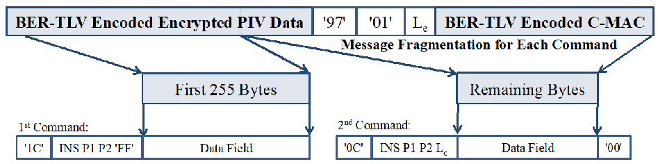
コマンドメッセージの分割図。最初のコマンドに先頭255バイトを格納し、残りのバイトを後続コマンドで送信する。各断片にコマンドヘッダーとデータフィールドを付ける。
Fig. 4. Chained command under secure messaging
図 4. セキュアメッセージング下のチェイン化コマンド
未レビュー訳4.2.5. Response Integrity
4.2.5. 応答の完全性
The response MAC (R-MAC) SHALL be generated by applying CMAC [SP800-38B] to the data field and status bytes of the response using the SK session key. An R-MAC SHALL be
応答 MAC (R-MAC) は、SK セッション鍵を使用して、応答のデータフィールドおよびステータスバイトに CMAC [SP800-38B] を適用して生成しなければならない (SHALL)。セキュアメッセージングを使用してカードに送信されたコマンドに対応する各応答について、R-MAC は SHALL
未レビュー訳RMAC generated for each response that corresponds to a command that was sent to the card using secure messaging.
生成される。
未レビュー訳The data to be MACed, M , SHALL be constructed by concatenating the following:
MAC 対象データ M は、次の要素を連結して構成しなければならない (SHALL)。
未レビュー訳R-MAC
R-MAC
未レビュー訳1.The 16-byte MAC chaining value (MCV). For the first response sent after successful completion of the key establishment protocol the MCV consists of 16 bytes of '00'. For each subsequent response the MCV is the 16-byte MAC value computed for the previous response.
1.16 バイトの MAC チェイニング値 (MCV)。鍵確立プロトコルの正常な完了後に送信される最初の応答では、MCV は '00' の 16 バイトで構成される。それ以降の各応答では、MCV は直前の応答について計算された 16 バイトの MAC 値である。
2.The data field (if present), which is the BER-TLV-encoded encrypted message
2.データフィールド (存在する場合)。これは BER-TLV エンコードされた暗号化済みメッセージである。
未レビュー訳3.The status word, SW1, and SW2 encapsulated in BER-TLV format with tag '99'
3.ステータスワード SW1 および SW2 を、タグ '99' の BER-TLV 形式でカプセル化したもの
未レビュー訳Let T = CMAC(SK , M ), as described in [SP800-38B]. The BER-TLV-encoded R-MAC R-MAC
[SP800-38B] に記載のとおり T = CMAC(SK , M ) とする。応答の BER-TLV エンコード R-MAC は R-MAC
未レビュー訳RMAC R-MAC
RMAC R-MAC
未レビュー訳for the response SHALL be the 8 most significant bytes of T encapsulated in BER-TLV format
T の最上位 8 バイトを BER-TLV 形式でカプセル化したものとしなければならない (SHALL)。
未レビュー訳R-MAC
R-MAC
未レビュー訳with tag '8E'. The entire 16-byte value T will be the MCV for the next response. R-MAC
タグ '8E' を付ける。T の 16 バイト全体が次の応答の MCV となる。R-MAC
未レビュー訳Figure 5 illustrates how the R-MAC is generated for the response.
図 5 は、応答の R-MAC がどのように生成されるかを示す。
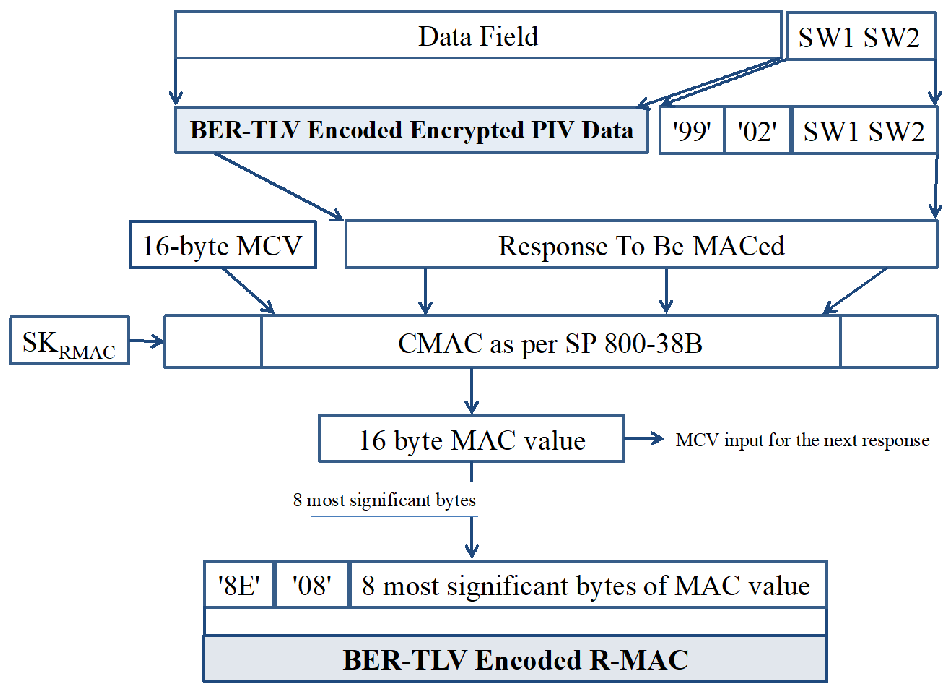
応答のR-MAC生成図。応答データと状態語SW1SW2からMACを計算し、16バイトのMAC値の上位8バイトをBER-TLV形式のR-MACとして付加する。次の応答向けのMAC計算値も示す。
Fig. 5. PIV data integrity of response
図 5. 応答の PIV データ完全性
未レビュー訳4.2.6. Response With PIV Secure Messaging
4.2.6. PIV セキュアメッセージングを使用する応答
未レビュー訳For secure messaging, the secure messaging data field that is sent by the PIV Card Application SHALL be constructed as the concatenation of the following:
セキュアメッセージングでは、PIVカードアプリケーションが送信するセキュアメッセージングデータフィールドを、次の要素を連結して構成しなければならない（SHALL）。
•The BER-TLV-encoded encrypted message (when present);
•BER-TLV エンコードされた暗号化済みメッセージ (存在する場合);
未レビュー訳•The 4-byte BER-TLV-encoded status word, as described in Section 4.2.5; and
•4.2.5節に記載の、BER-TLVで符号化された4バイトのステータスワード；および
•The 10-byte BER-TLV-encoded R-MAC of the response, as described in Section 4.2.5.
•4.2.5節に記載の、BER-TLVで符号化された応答の10バイトR-MAC。
未レビュー訳Figure 6 illustrates a response under secure messaging when response chaining is not required. The APDU consists of the secure messaging data field and the 2-byte SW processing status ('90 00'), which indicates that the PIV Card Application successfully verified the C-MAC on the command and decrypted the data field in the command (if present). If the PIV Card Application was unable to verify the C-MAC on the command or decrypt the data field in the command, then it SHALL return a 2-byte error response, as described in Section 4.2.7.
図6は、応答チェイニングが不要な場合のセキュアメッセージング応答を示す。APDUはセキュアメッセージングデータフィールドと2バイトのSW処理ステータス（'90 00'）で構成される。このステータスは、PIVカードアプリケーションがコマンド上のC-MACを正常に検証し、コマンドのデータフィールド（存在する場合）を復号したことを示す。PIVカードアプリケーションがコマンド上のC-MACを検証できなかった場合、またはコマンドのデータフィールドを復号できなかった場合、4.2.7節に記載の2バイトのエラー応答を返さなければならない（SHALL）。
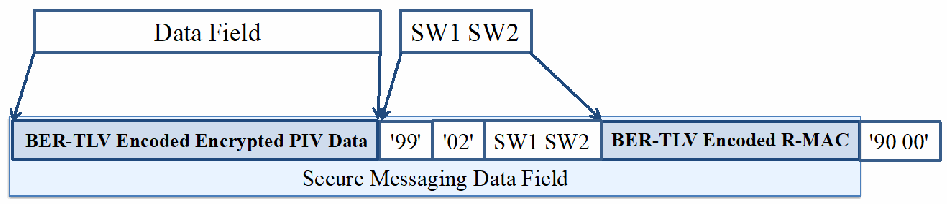
セキュアメッセージング応答のデータフィールド形式。応答データとSW1SW2に、BER-TLV形式の暗号化PIVデータおよびR-MACを付加する。
Fig. 6. Single response under secure messaging
図6. セキュアメッセージングにおける単一応答
未レビュー訳Response chaining23 will be needed if the secure messaging data field to be transported is larger than 256 bytes. Figure 7 shows the APDUs for secure messaging that are sent by the PIV Card Application when the length of the secure messaging data field is between 513 and 768 bytes, which requires the data to be fragmented across three APDUs. After the first response, an APDU of '00 C0 00 00 00' will be sent to request the second response. After the second response, an APDU of '00 C0 00 00 xx' will be sent to request the third response.
転送するセキュアメッセージングデータフィールドが256バイトを超える場合、応答チェイニング23が必要となる。図7は、セキュアメッセージングデータフィールドの長さが513～768バイトで、データを3つのAPDUに分割する必要がある場合に、PIVカードアプリケーションが送信するセキュアメッセージング用APDUを示す。最初の応答の後、2つ目の応答を要求するためにAPDU '00 C0 00 00 00'が送信される。2つ目の応答の後、3つ目の応答を要求するためにAPDU '00 C0 00 00 xx'が送信される。
未レビュー訳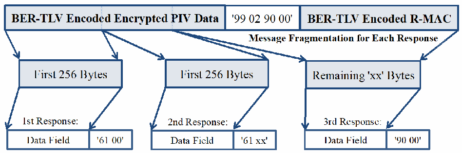
応答メッセージの分割図。最初の256バイトと残りのデータを複数の応答に分け、状態語「61 00」「61 xx」で継続を示し、最後に「90 00」で完了を示す。
Fig. 7. Chained response under secure messaging
図7. セキュアメッセージングにおけるチェイニング応答
未レビュー訳4.2.7. Error Handling
4.2.7. エラー処理
The SW processing status is the status word of the overall secure messaging command and response processing. It indicates whether the secure messaging was performed successfully. If the processing was successful, it SHALL be '90 00'. Otherwise, it SHALL be as follows:
SW処理ステータスは、セキュアメッセージングのコマンドおよび応答処理全体のステータスワードである。セキュアメッセージングが正常に実行されたかどうかを示す。処理が成功した場合は'90 00'でなければならない（SHALL）。それ以外の場合は、次のとおりでなければならない（SHALL）。
•'68 82' – Secure messaging not supported
•'68 82' – セキュアメッセージングはサポートされていない
•'69 82' – Security status not satisfied24
•'69 82' – セキュリティ状態が満たされていない24
未レビュー訳•'69 87' – Expected secure messaging data objects are missing
•'69 87' – 想定されるセキュアメッセージングデータオブジェクトがない
•'69 88' – Secure messaging data objects are incorrect
•'69 88' – セキュアメッセージングデータオブジェクトが正しくない
未レビュー訳If the command processing was unsuccessful, the card SHALL return one of the above status words without performing further secure messaging.
コマンド処理が失敗した場合、カードはそれ以上セキュアメッセージングを実行せず、上記のステータスワードのいずれかを返さなければならない（SHALL）。
4.3. Session Key Destruction
4.3. セッション鍵の破棄
The session keys established after successful execution of the key establishment protocol in Section 4.1 SHALL be zeroized in the following circumstances:
4.1節の鍵確立プロトコルが正常に実行された後に確立されたセッション鍵は、以下の場合にゼロ化しなければならない。 (SHALL)
•The card is reset,
•カードがリセットされた場合、
•An error occurs in secure messaging,25 or
•セキュアメッセージングでエラーが発生した場合、25 または
未レビュー訳•New session keys are requested by the client application by sending a GENERAL AUTHENTICATE command to the card to perform the key establishment protocol using the PIV Secure Messaging key.
•クライアントアプリケーションが、PIVセキュアメッセージング鍵を使用する鍵確立プロトコルを実行するためにGENERAL AUTHENTICATEコマンドをカードに送信し、新しいセッション鍵を要求した場合。
References
参考文献
未レビュー訳[ANSI504-1] InterNational Committee for Information Technology Standards (2023)
[ANSI504-1] InterNational Committee for Information Technology Standards (2023)
未レビュー訳INCITS 504-1-2013 (R2023) - Information Technology - Generic Identity Command Set – Part 1: Card Application Command Set, [or as amended]. Available at https://webstore.ansi.org/standards/incits/incits5042013r2023
INCITS 504-1-2013 (R2023) - Information Technology - Generic Identity Command Set – Part 1: Card Application Command Set, [or as amended]. Available at https://webstore.ansi.org/standards/incits/incits5042013r2023
未レビュー訳[FIPS201]
[FIPS201]
未レビュー訳National Institute of Standards and Technology (2022) Personal Identity Verification (PIV) of Federal Employees and Contractors. (Department of Commerce, Washington, DC), Federal Information Processing Standards Publication (FIPS) 201-3. https://doi.org/10.6028/NIST.FIPS.201-3
National Institute of Standards and Technology (2022) Personal Identity Verification (PIV) of Federal Employees and Contractors. (Department of Commerce, Washington, DC), Federal Information Processing Standards Publication (FIPS) 201-3. https://doi.org/10.6028/NIST.FIPS.201-3
未レビュー訳[ISO7816]
[ISO7816]
未レビュー訳International Organization for Standardization/International Electrotechnical Commission (2004-2020) ISO/IEC 7816 — Identification cards — Integrated circuit cards. (multiple parts): International Organization for Standardization/International Electrotechnical Commission (2020) ISO/IEC 7816-4:2020 — Identification cards — Integrated circuit cards — Part 4: Organization, security and commands for interchange. (International Organization for Standardization, Geneva, Switzerland) [or as amended]. Available at https://www.iso.org/standard/77180.html International Organization for Standardization/International Electrotechnical Commission (2004) ISO/IEC 7816-5:2004 — Identification cards — Integrated circuit cards — Part 5: Registration of application providers. (International Organization for Standardization, Geneva, Switzerland) [or as amended]. Available at https://www.iso.org/standard/34259.html International Organization for Standardization/International Electrotechnical Commission (2023) ISO/IEC 7816-6:2023 — Identification cards — Integrated circuit cards — Part 6: Interindustry data elements for interchange. (International Organization for Standardization, Geneva, Switzerland) [or as amended]. Available at https://www.iso.org/standard/77181.html International Organization for Standardization/International Electrotechnical Commission (2021) ISO/IEC 7816-8:2021 — Identification cards — Integrated circuit cards — Part 8: Commands and mechanisms for security operations. (International Organization for Standardization, Geneva, Switzerland) [or as amended]. Available at https://www.iso.org/standard/79893.html International Organization for Standardization/International Electrotechnical Commission (2017) ISO/IEC 7816-9:2017 — Identification cards — Integrated circuit cards — Part 9: Commands for card management. (International Organization for Standardization, Geneva, Switzerland) [or as amended]. Available at https://www.iso.org/standard/67802.html
International Organization for Standardization/International Electrotechnical Commission (2004-2020) ISO/IEC 7816 — Identification cards — Integrated circuit cards. (multiple parts): International Organization for Standardization/International Electrotechnical Commission (2020) ISO/IEC 7816-4:2020 — Identification cards — Integrated circuit cards — Part 4: Organization, security and commands for interchange. (International Organization for Standardization, Geneva, Switzerland) [or as amended]. Available at https://www.iso.org/standard/77180.html International Organization for Standardization/International Electrotechnical Commission (2004) ISO/IEC 7816-5:2004 — Identification cards — Integrated circuit cards — Part 5: Registration of application providers. (International Organization for Standardization, Geneva, Switzerland) [or as amended]. Available at https://www.iso.org/standard/34259.html International Organization for Standardization/International Electrotechnical Commission (2023) ISO/IEC 7816-6:2023 — Identification cards — Integrated circuit cards — Part 6: Interindustry data elements for interchange. (International Organization for Standardization, Geneva, Switzerland) [or as amended]. Available at https://www.iso.org/standard/77181.html International Organization for Standardization/International Electrotechnical Commission (2021) ISO/IEC 7816-8:2021 — Identification cards — Integrated circuit cards — Part 8: Commands and mechanisms for security operations. (International Organization for Standardization, Geneva, Switzerland) [or as amended]. Available at https://www.iso.org/standard/79893.html International Organization for Standardization/International Electrotechnical Commission (2017) ISO/IEC 7816-9:2017 — Identification cards — Integrated circuit cards — Part 9: Commands for card management. (International Organization for Standardization, Geneva, Switzerland) [or as amended]. Available at https://www.iso.org/standard/67802.html
未レビュー訳[ISO8824]
[ISO8824]
未レビュー訳International Organization for Standardization/International Electrotechnical Commission (2021) ISO/IEC 8824-2:2021 — Information technology — Abstract Syntax Notation One (ASN.1) – Part 2: Information object specification. (International Organization for Standardization, Geneva, Switzerland) [or as amended]. Available at https://www.iso.org/standard/81417.html
International Organization for Standardization/International Electrotechnical Commission (2021) ISO/IEC 8824-2:2021 — Information technology — Abstract Syntax Notation One (ASN.1) – Part 2: Information object specification. (International Organization for Standardization, Geneva, Switzerland) [or as amended]. Available at https://www.iso.org/standard/81417.html
未レビュー訳[ISO8825]
[ISO8825]
未レビュー訳International Organization for Standardization/International Electrotechnical Commission (2015) ISO/IEC 8825-1:2015— Information technology — ASN.1 encoding rules: Specification of Basic Encoding Rules (BER), Canonical Encoding Rules (CER) and Distinguished Encoding Rules (DER) Part 1. (International Organization for Standardization, Geneva, Switzerland) [or as amended]. Available at https://www.iso.org/standard/81420.html
International Organization for Standardization/International Electrotechnical Commission (2015) ISO/IEC 8825-1:2015— Information technology — ASN.1 encoding rules: Specification of Basic Encoding Rules (BER), Canonical Encoding Rules (CER) and Distinguished Encoding Rules (DER) Part 1. (International Organization for Standardization, Geneva, Switzerland) [or as amended]. Available at https://www.iso.org/standard/81420.html
未レビュー訳[PKCS1]
[PKCS1]
未レビュー訳Moriarty K, Kaliski B, Jonsson J, Rusch A (2016). Public-Key Cryptography Standards (PKCS) #1: RSA Cryptography Specifications Version 2.2. (Internet Engineering Task Force (IETF)), IETF Request for Comments (RFC) 8017. Available at https://www.rfc-editor.org/rfc/rfc8017
Moriarty K, Kaliski B, Jonsson J, Rusch A (2016). Public-Key Cryptography Standards (PKCS) #1: RSA Cryptography Specifications Version 2.2. (Internet Engineering Task Force (IETF)), IETF Request for Comments (RFC) 8017. Available at https://www.rfc-editor.org/rfc/rfc8017
未レビュー訳[SECG]
[SECG]
未レビュー訳Certicom (2009) Standards for Efficient Cryptography, SEC 1: Elliptic Curve Cryptography, Version 2.0. Available at https://www.secg.org/sec1-v2.pdf
Certicom (2009) Standards for Efficient Cryptography, SEC 1: Elliptic Curve Cryptography, Version 2.0. Available at https://www.secg.org/sec1-v2.pdf
未レビュー訳[SP800-38B] Dworkin MJ (2005) Recommendation for Block Cipher Modes of Operation:
[SP800-38B] Dworkin MJ (2005) Recommendation for Block Cipher Modes of Operation:
未レビュー訳the CMAC Mode for Authentication. (National Institute of Standards and Technology, Gaithersburg, MD), NIST Special Publication (SP) 800-38B, Includes updates as of October 6, 2016 [or as amended]. https://doi.org/10.6028/NIST.SP.800-38B
the CMAC Mode for Authentication. (National Institute of Standards and Technology, Gaithersburg, MD), NIST Special Publication (SP) 800-38B, Includes updates as of October 6, 2016 [or as amended]. https://doi.org/10.6028/NIST.SP.800-38B
未レビュー訳[SP800-56A] Barker EB, Chen L, Roginsky AL, Vassilev A, Davis R (2018) Recommendation for Pair-Wise Key-Establishment Schemes Using Discrete Logarithm Cryptography. (National Institute of Standards and Technology, Gaithersburg, MD), NIST Special Publication (SP) 800-56A, Rev. 3 [or as amended]. https://doi.org/10.6028/NIST.SP.800-56Ar3
[SP800-56A] Barker EB, Chen L, Roginsky AL, Vassilev A, Davis R (2018) Recommendation for Pair-Wise Key-Establishment Schemes Using Discrete Logarithm Cryptography. (National Institute of Standards and Technology, Gaithersburg, MD), NIST Special Publication (SP) 800-56A, Rev. 3 [または改正版]。https://doi.org/10.6028/NIST.SP.800-56Ar3
[SP800-76] Grother PJ, Salamon WJ, Chandramouli R (2013) Biometric Specifications for Personal Identity Verification. (National Institute of Standards and Technology, Gaithersburg, MD), NIST Special Publication (SP) 800-76-2 [or as amended]. https://doi.org/10.6028/NIST.SP.800-76-2
[SP800-76] Grother PJ, Salamon WJ, Chandramouli R (2013) Biometric Specifications for Personal Identity Verification. (National Institute of Standards and Technology, Gaithersburg, MD), NIST Special Publication (SP) 800-76-2 [または改正版]。https://doi.org/10.6028/NIST.SP.800-76-2
[SP800-78] Ferraiolo H, Regenscheid A (2024) Cryptographic Algorithms and Key Sizes for Personal Identity Verification. (National Institute of Standards and Technology, Gaithersburg, MD), NIST Special Publication (SP) 800-78-5 [or as amended]. https://doi.org/10.6028/NIST.SP.800-78-5
[SP800-78] Ferraiolo H, Regenscheid A (2024) Cryptographic Algorithms and Key Sizes for Personal Identity Verification. (National Institute of Standards and Technology, Gaithersburg, MD), NIST Special Publication (SP) 800-78-5 [または改正版]。https://doi.org/10.6028/NIST.SP.800-78-5
Appendix A. Examples of the Use of the GENERAL AUTHENTICATE Command
付録 A. GENERAL AUTHENTICATE コマンドの使用例
未レビュー訳A.1. Authentication of the PIV Card Application Administrator
A.1. PIV Card Application 管理者の認証
未レビュー訳The PIV Card Application Administrator is authenticated by the PIV Card Application using a challenge-response protocol. A challenge retrieved from the PIV Card Application is encrypted by the client application and returned to the PIV Card Application associated with key reference '9B', which is the key reference of the PIV Card Application Administration key. The PIV Card Application decrypts the response using this reference data and the algorithm associated with the key reference (e.g., AES-128 – ECB, algorithm identifier '08'). If this decrypted value matches the previously provided challenge, then the security status indicator of the PIV Card Application Administration key is set to TRUE within the PIV Card Application.
PIV Card Application 管理者は、チャレンジ・レスポンスプロトコルを使用して PIV Card Application によって認証される。PIV Card Application から取得したチャレンジをクライアントアプリケーションが暗号化し、PIV Card Application 管理鍵の鍵参照である鍵参照 '9B' を指定して PIV Card Application に返す。PIV Card Application は、この参照データと鍵参照に対応付けられたアルゴリズム (例: AES-128 – ECB、アルゴリズム識別子 '08') を使用して応答を復号する。復号した値が先に提供されたチャレンジと一致する場合、PIV Card Application 内で PIV Card Application 管理鍵のセキュリティ状態インジケーターが TRUE に設定される。
Table 22 shows the GENERAL AUTHENTICATE card commands sent to the PIV Card Application to realize this particular challenge-response protocol.
表 22 は、このチャレンジ・レスポンスプロトコルを実現するために PIV Card Application に送信される GENERAL AUTHENTICATE カードコマンドを示す。
Table 22. Authentication of PIV Card Application Administrator
表 22. PIV Card Application 管理者の認証
未レビュー訳| Command | Response | Comment |
| '00 87 08 9B 04 7C 02 81 00 00' | The client application requests a challenge from the PIV Card Application. | |
| '7C 12 81 10 01 02 03 04 05 06 07 08 09 0A 0B 0C 0D 0E 0F 10 90 00' | The challenge ('01 02 03 04 05 06 07 08 09 0A 0B 0C 0D 0E 0F 10') returned to client application by the PIV Card Application. | |
| '00 87 08 9B 0C 7C 12 82 10 88 77 66 55 44 33 22 11 88 77 66 55 22 11 33 11' | The client application returns the encryption of the challenge ('88 77 66 55 44 33 22 11 88 77 66 55 22 11 33 11') referencing algorithm '08' and key reference '9B' [SP800-78, Tables 8 and 9]. | |
| '90 00' | The PIV Card Application indicates successful authentication of PIV Card Application Administrator after decrypting '88 77 66 55 44 33 22 11 88 77 66 55 22 11 33 11' using the referenced algorithm and key and getting '01 02 03 04 05 06 07 08 09 0A 0B 0C 0D 0E 0F 10'. |
原本PDFの抜粋画像
| コマンド | 応答 | コメント |
| '00 87 08 9B 04 7C 02 81 00 00' | クライアントアプリケーションが PIV Card Application にチャレンジを要求する。 | |
| '7C 12 81 10 01 02 03 04 05 06 07 08 09 0A 0B 0C 0D 0E 0F 10 90 00' | PIV Card Application がクライアントアプリケーションに返すチャレンジ ('01 02 03 04 05 06 07 08 09 0A 0B 0C 0D 0E 0F 10')。 | |
| '00 87 08 9B 0C 7C 12 82 10 88 77 66 55 44 33 22 11 88 77 66 55 22 11 33 11' | クライアントアプリケーションが、アルゴリズム '08' および鍵参照 '9B' を指定して、チャレンジを暗号化した値 ('88 77 66 55 44 33 22 11 88 77 66 55 22 11 33 11') を返す [SP800-78, Tables 8 and 9]。 | |
| '90 00' | PIV Card Application は、参照されたアルゴリズムと鍵を使用して '88 77 66 55 44 33 22 11 88 77 66 55 22 11 33 11' を復号し、'01 02 03 04 05 06 07 08 09 0A 0B 0C 0D 0E 0F 10' を得た後、PIV Card Application 管理者の認証成功を示す。 |
Table 23. Mutual authentication of client application and PIV Card Application
表 23. クライアントアプリケーションと PIV Card Application の相互認証
未レビュー訳| Command | Response | Comment |
| '00 87 08 9B 04 7C 02 80 00 00' | The client application requests a witness from the PIV Card Application. | |
| '7C 12 80 10 88 77 66 55 44 33 22 11 88 77 66 55 22 11 33 11 90 00' | The PIV Card Application returns a witness that is created by generating 16 bytes of random data ('01 02 03 04 05 06 07 08 09 0A 0B 0C 0D 0E 0F 10') and encrypting the data using the referenced key ('9B') and algorithm ('08') [SP800-78, Tables 8 and 9]. | |
| '00 87 08 9B 18 7C 24 80 10 01 02 03 04 05 06 07 08 09 0A 0B 0C 0D 0E 0F 10 81 10 09 0A 0B 0C 0D 0E 0F 10 09 08 07 06 05 04 03 02 82 00 00' | The client application returns the decrypted witness ('01 02 03 04 05 06 07 08 09 0A 0B 0C 0D 0E 0F 10’), which references algorithm '08' and key reference '9B'. The client application requests the encryption of challenge data ('09 0A 0B 0C 0D 0E 0F 10 09 08 07 06 05 04 03 02') from the card using the same key. | |
| '7C 12 82 10 11 FF EE DD CC BB AA 99 88 77 66 55 44 33 22 11 90 00' | The PIV Card Application authenticates the client application by verifying the decrypted witness. The PIV Card Application indicates the successful authentication of the PIV Card Application Administrator and sends back the encrypted challenge ('11 FF EE DD CC BB AA 99 88 77 66 55 44 33 22 11'). The client application authenticates the PIV Card Application by decrypting the encrypted challenge and getting ('09 0A 0B 0C 0D 0E 0F 10 09 08 07 06 05 04 03 02'). |
原本PDFの抜粋画像
| コマンド | 応答 | コメント |
| '00 87 08 9B 04 7C 02 80 00 00' | クライアントアプリケーションが PIV Card Application に witness を要求する。 | |
| '7C 12 80 10 88 77 66 55 44 33 22 11 88 77 66 55 22 11 33 11 90 00' | PIV Card Application は、16 バイトの乱数 ('01 02 03 04 05 06 07 08 09 0A 0B 0C 0D 0E 0F 10') を生成し、参照された鍵 ('9B') とアルゴリズム ('08') を使用して暗号化することで作成した witness を返す [SP800-78, Tables 8 and 9]。 | |
| '00 87 08 9B 18 7C 24 80 10 01 02 03 04 05 06 07 08 09 0A 0B 0C 0D 0E 0F 10 81 10 09 0A 0B 0C 0D 0E 0F 10 09 08 07 06 05 04 03 02 82 00 00' | クライアントアプリケーションは、復号した witness ('01 02 03 04 05 06 07 08 09 0A 0B 0C 0D 0E 0F 10’) を返し、アルゴリズム '08' と鍵参照 '9B' を指定する。クライアントアプリケーションは、同じ鍵を使用してカードにチャレンジデータ ('09 0A 0B 0C 0D 0E 0F 10 09 08 07 06 05 04 03 02') の暗号化を要求する。 | |
| '7C 12 82 10 11 FF EE DD CC BB AA 99 88 77 66 55 44 33 22 11 90 00' | PIV Card Application は、復号した witness を検証してクライアントアプリケーションを認証する。PIV Card Application は、PIV Card Application 管理者の認証成功を示し、暗号化したチャレンジ ('11 FF EE DD CC BB AA 99 88 77 66 55 44 33 22 11') を返す。クライアントアプリケーションは、暗号化されたチャレンジを復号して ('09 0A 0B 0C 0D 0E 0F 10 09 08 07 06 05 04 03 02') を得ることで PIV Card Application を認証する。 |
Table 24 shows the GENERAL AUTHENTICATE card commands sent to the PIV Card Application to realize cardholder authentication when the X.509 Certificate for PIV Authentication includes a 2048-bit27 RSA public key. It is assumed that the cardholder PIN or OCC data has been successfully verified prior to sending the GENERAL AUTHENTICATE command.
表 24 は、PIV 認証用 X.509 証明書に 2048-bit27 RSA 公開鍵が含まれる場合に、カード保有者認証を実現するため PIV Card Application に送信する GENERAL AUTHENTICATE カードコマンドを示す。GENERAL AUTHENTICATE コマンドを送信する前に、カード保有者の PIN または OCC データの検証が正常に完了しているものとする。
未レビュー訳Table 24. Validation of the PIV Card Application using GENERAL AUTHENTICATE
表 24. GENERAL AUTHENTICATE を使用した PIV Card Application の検証
未レビュー訳| Command | Response | Comment |
| '10 87 07 9A FF 7C 82 01 06 82 00 81 82 01 00 00 01 FF FF FF FF ... FF FF FF FF FF 00 9D F4 6E 09 E7 D6 19 18 53 1E 6E 1C 66 87 C4 3E CF FF 7D 53 47 BD 2E 93 19' ('..' represents 208 bytes of challenge data) | The client application sends a challenge to the PIV Card Application indicating that the reference data associated with key reference '9A' is to be used with algorithm '07' [SP800-78, Tables 9 and 10]. The challenge data, which in this example is encoded as specified for TLS version 1.3 client authentication, is '00 01 FF ... 18 BC A7'. Bit 5 of the CLA byte is set to one to indicate that command chaining is needed. Le is absent to indicate that no data is expected. | |
| ‘90 00’ | The PIV Card Application indicates that it received the command successfully. | |
| '00 87 07 9A 0B 94 53 76 FE A7 91 72 14 18 BC A7 00' | The client application sends the remaining data with the second and last command of the chain. Le is ‘00’ to indicate that the expected length of the response data field is 256 bytes. | |
| '7C 82 01 04 82 82 01 00 29 69 44 3B 49 AC 5B 70 63 51 A1 5B B5 … AD F7 0B 7D A6 4C 6C AA 62 40 C5 FA A8 7E A2 2B DC 92 18 56 8B CE F4 69 14 D9 83 61 08' ('..' represents 208 bytes of response data) | The PIV Card Application returns the result of signing the challenge using the indicated key reference data and algorithm ('29 69 44 3B 49 AC…'). The last 2 bytes '61 08' indicate that 8 more bytes are available to read from the card. |
原本PDFの抜粋画像
| コマンド | 応答 | コメント |
| '10 87 07 9A FF 7C 82 01 06 82 00 81 82 01 00 00 01 FF FF FF FF ... FF FF FF FF FF 00 9D F4 6E 09 E7 D6 19 18 53 1E 6E 1C 66 87 C4 3E CF FF 7D 53 47 BD 2E 93 19' ('..' はチャレンジデータ 208 バイトを表す) | クライアントアプリケーションは、鍵参照 '9A' に対応付けられた参照データをアルゴリズム '07' とともに使用することを示すチャレンジを PIV Card Application に送信する [SP800-78, Tables 9 and 10]。この例のチャレンジデータは TLS version 1.3 クライアント認証用の指定形式でエンコードされ、'00 01 FF ... 18 BC A7' である。コマンドチェイニングが必要であることを示すため、CLA バイトの bit 5 を one に設定する。データが期待されないことを示すため、Le は存在しない。 | |
| ‘90 00’ | PIV Card Application は、コマンドを正常に受信したことを示す。 | |
| '00 87 07 9A 0B 94 53 76 FE A7 91 72 14 18 BC A7 00' | クライアントアプリケーションは、チェインの最後となる後続コマンドで残りのデータを送信する。応答データフィールドの期待長が 256 バイトであることを示すため、Le は ‘00’ である。 | |
| '7C 82 01 04 82 82 01 00 29 69 44 3B 49 AC 5B 70 63 51 A1 5B B5 … AD F7 0B 7D A6 4C 6C AA 62 40 C5 FA A8 7E A2 2B DC 92 18 56 8B CE F4 69 14 D9 83 61 08' ('..' は応答データ 208 バイトを表す) | PIV Card Application は、指定された鍵参照データとアルゴリズムを使用してチャレンジに署名した結果 ('29 69 44 3B 49 AC…') を返す。最後の 2 バイト '61 08' は、カードから読み出せるデータがさらに 8 バイトあることを示す。 |
原本PDFの抜粋画像
A.4. Signature Generation With the Digital Signature Key
A.4. デジタル署名鍵による署名生成
未レビュー訳The GENERAL AUTHENTICATE command CAN be used to generate signatures. The pre-signature hash and padding (if applicable) are computed off-card. The PIV Card Application receives the hashed value of the original message, applies the private signature key (key reference '9C'), and returns the resulting signature to the client application.
GENERAL AUTHENTICATE コマンドは署名生成に使用できる (CAN)。署名前ハッシュおよびパディング (該当する場合) はカード外で計算される。PIV Card Application は元のメッセージのハッシュ値を受信し、秘密署名鍵 (鍵参照 '9C') を適用して、生成された署名をクライアントアプリケーションに返す。
The card commands sent to the PIV Card Application to generate a signature are listed below. It is assumed that the cardholder PIN or OCC data has been successfully verified prior to sending the GENERAL AUTHENTICATE command.
署名を生成するために PIV Card Application に送信するカードコマンドを以下に示す。GENERAL AUTHENTICATE コマンドを送信する前に、カード保有者の PIN または OCC データの検証が正常に完了しているものとする。
A.4.1. RSA
A.4.1. RSA
This example illustrates signature generation using RSA 204828 (i.e., algorithm identifier '07'). Command chaining is used in the first command since the padded hash value sent to the card for signature generation is bigger than the length of the data field.
この例は RSA 204828 (すなわちアルゴリズム識別子 '07') による署名生成を示す。署名生成のためにカードへ送信するパディング済みハッシュ値がデータフィールドの長さを超えるため、最初のコマンドではコマンドチェイニングを使用する。
未レビュー訳Command 1 — GENERAL AUTHENTICATE (first chain)
コマンド 1 — GENERAL AUTHENTICATE (チェインの最初)
未レビュー訳| CLA | '10' indicating command chaining |
| INS | '87' |
| P1 | '07' |
| P2 | '9C' |
| Lc | Length of data field |
| Data Field | '7C' – L1 { '82' '00' '81' L2 {first part of the PKCS #1 v1.5 or PSS padded message hash value }} |
| Le | Absent (no response expected) |
原本PDFの抜粋画像
| CLA | コマンドチェイニングを示す '10' |
| INS | '87' |
| P1 | '07' |
| P2 | '9C' |
| Lc | データフィールドの長さ |
| データフィールド | '7C' – L1 { '82' '00' '81' L2 {PKCS #1 v1.5 または PSS でパディングされたメッセージハッシュ値の先頭部分 }} |
| Le | なし (応答を期待しない) |
Response 1
応答 1
未レビュー訳| データフィールド | なし |
| SW1-SW2 | '90 00' (ステータスワード) |
Command 2 — GENERAL AUTHENTICATE (last chain)
コマンド 2 — GENERAL AUTHENTICATE (チェインの最後)
未レビュー訳| CLA | '00' indicates last command of the chain |
| INS | '87' |
| P1 | '07' |
| P2 | '9C' |
| Lc | Length of data field |
| Data Field | {second and last part of the PKCS #1 v1.5 or PSS padded message hash value} |
原本PDFの抜粋画像
| CLA | チェインの最後のコマンドを示す '00' |
| INS | '87' |
| P1 | '07' |
| P2 | '9C' |
| Lc | データフィールドの長さ |
| データフィールド | {PKCS #1 v1.5 または PSS でパディングされたメッセージハッシュ値の後半部分} |
| Le | '00' |
Response 2
応答 2
未レビュー訳| Data Field | '7C' – L1 {'82' L2 {first part of signature} } |
| SW1-SW2 | '61 xx', where xx indicates the number of bytes remaining to send by the PIV Card Application |
原本PDFの抜粋画像
| データフィールド | '7C' – L1 {'82' L2 {署名の先頭部分} } |
| SW1-SW2 | '61 xx'。xx は PIV Card Application が送信する残りのバイト数を示す。 |
Command 3 — GET RESPONSE APDU)
コマンド 3 — GET RESPONSE APDU)
未レビュー訳| CLA | '00' |
| INS | 'C0' |
| P1 | '00' |
| P2 | '00' |
| Le | xx length of remaining response as indicated by previous SW1-SW2 |
原本PDFの抜粋画像
| CLA | '00' |
| INS | 'C0' |
| P1 | '00' |
| P2 | '00' |
| Le | xx 前のSW1-SW2が示す残りの応答長 |
Response 3
応答3
未レビュー訳| データフィールド | {署名の第2部かつ最終部} |
| SW1-SW2 | '90 00' (Status word) |
A.4.2. ECDSA
A.4.2. ECDSA
The following example illustrates signature generation with ECDSA using ECC: Curve P-256 (i.e., algorithm identifier '11'). Command chaining is not used in this example, as the hash value fits into the data field of the command. Padding does not apply to ECDSA.
以下の例は、ECC Curve P-256（すなわちアルゴリズム識別子'11'）を用いたECDSAによる署名生成を示す。ハッシュ値がコマンドのデータフィールドに収まるため、この例ではコマンドチェイニングを使用しない。ECDSAにはパディングは適用されない。
Command — GENERAL AUTHENTICATE
コマンド — GENERAL AUTHENTICATE
未レビュー訳| CLA | '00' |
| INS | '87' |
| P1 | '11' |
| P2 | '9C' |
| Lc | Length of data field |
| Data Field | '7C' – L1 { '82' '00' '81' L2 {hash value of message}} |
| Le | '00' |
原本PDFの抜粋画像
| CLA | '00' |
| INS | '87' |
| P1 | '11' |
| P2 | '9C' |
| Lc | データフィールドの長さ |
| データフィールド | '7C' – L1 { '82' '00' '81' L2 {hash value of message}} |
| Le | '00' |
Response
応答
未レビュー訳| Data Field | '7C' – L1 {'82' L2 (r,s)}, where • (r,s) is DER-encoded with the following ASN.1 structure: Ecdsa-Sig-Value ::= SEQUENCE { r INTEGER, s INTEGER } • L1 is the length of tag '82' TLV structure • L2 is the length of the DER-encoded Ecdsa-Sig-Value structure |
| SW1-SW2 | '90 00' (Status word) |
原本PDFの抜粋画像
| データフィールド | '7C' – L1 {'82' L2 (r,s)}, where • (r,s) is DER-encoded with the following ASN.1 structure: Ecdsa-Sig-Value ::= SEQUENCE { r INTEGER, s INTEGER } • L1 is the length of tag '82' TLV structure • L2 is the length of the DER-encoded Ecdsa-Sig-Value structure |
| SW1-SW2 | '90 00' (Status word) |
A.5. Key Establishment Schemes With the PIV Key Management Key
A.5. PIV鍵管理鍵を用いた鍵確立方式
未レビュー訳FIPS 201 specifies a public key pair and associated X.509 Certificate for Key Management. The key management key (KMK) is further defined in SP 800-78, which defines two distinct key establishment schemes for the KMK:
FIPS 201は、鍵管理用公開鍵ペアとそれに対応するX.509証明書を規定する。鍵管理鍵（KMK）はSP 800-78でさらに定義されており、KMKには2種類の鍵確立方式が定められている。
1.RSA key transport and
1.RSA鍵転送、および
2.Elliptic Curve Diffie-Hellman (ECDH) key agreement.
2.楕円曲線Diffie-Hellman（ECDH）鍵合意。
The use of the KMK for RSA key transport and ECDH key agreement is discussed in Appendices A.5.1 and A.5.2, respectively.
RSA鍵転送およびECDH鍵合意におけるKMKの使用については、それぞれAppendix A.5.1およびA.5.2で説明する。
A.5.1. RSA Key Transport
A.5.1. RSA鍵転送
未レビュー訳In general, RSA transport keys are used to establish symmetric keys, where a sender encrypts a symmetric key with the receiver’s public key and sends the encrypted key to the receiver. The receiver decrypts the encrypted key with the corresponding private key. The decrypted symmetric key is subsequently used by both parties to protect further communication between them. Many types of security protocols employ the RSA key transport technique, such as Secure/Multipurpose Internet Mail Extensions (S/MIME) for secure email.
一般に、RSA転送鍵は対称鍵の確立に用いられる。送信者は対称鍵を受信者の公開鍵で暗号化し、その暗号化された鍵を受信者に送る。受信者は対応する秘密鍵で暗号化された鍵を復号する。復号された対称鍵は、その後、両者間の通信を保護するために双方で使用される。セキュアメール用のSecure/Multipurpose Internet Mail Extensions（S/MIME）など、多くの種類のセキュリティプロトコルがRSA鍵転送方式を採用している。
A.5.1.1. RSA Key Transport With the PIV KMK
A.5.1.1. PIV KMKを用いたRSA鍵転送
未レビュー訳As specified in SP 800-78, the on-card private KMK CAN be an RSA transport key that complies with [PKCS1]. In the scenario described above, a sender encrypts a symmetric key with the public RSA transport key of the recipient’s KMK. The role of the on-card KMK private RSA transport key is to decrypt the sender’s symmetric key on behalf of the cardholder and provide it to the client application cryptographic module.
SP 800-78に規定されているとおり、カード内の秘密KMKは[PKCS1]に準拠するRSA転送鍵であってもよい。 (CAN) 前述のシナリオでは、送信者は受信者のKMKの公開RSA転送鍵で対称鍵を暗号化する。カード内のKMK秘密RSA転送鍵の役割は、カード保有者に代わって送信者の対称鍵を復号し、クライアントアプリケーションの暗号モジュールに提供することである。
未レビュー訳A.5.1.1.1GENERAL AUTHENTICATE Command
A.5.1.1.1 GENERAL AUTHENTICATEコマンド
未レビュー訳The card commands sent to the PIV Card to decrypt the symmetric key are listed below. It is assumed that the cardholder’s PIN or OCC data has been successfully verified prior to sending the GENERAL AUTHENTICATE command to the card.
対称鍵を復号するためPIVカードに送信するカードコマンドを以下に示す。GENERAL AUTHENTICATEコマンドをカードに送信する前に、カード保有者のPINまたはOCCデータの検証が正常に完了しているものとする。
未レビュー訳Command 1 — GENERAL AUTHENTICATE (first chain)
コマンド1 — GENERAL AUTHENTICATE（最初のチェーン）
未レビュー訳| CLA | '10' indicates command chaining |
| INS | '87' |
| P1 | '07'29 |
| P2 | '9D' |
| Lc | Length of data field |
| Data Field | '7C' – L1 {'82' '00' '81' L2 {first part of C}}, where C is the ciphertext to be decrypted, as defined in [PKCS1, Sections 7.1.2 and 7.2.2] |
| Le | Absent (no response expected) |
原本PDFの抜粋画像
| CLA | '10' indicates command chaining |
| INS | '87' |
| P1 | '07'29 |
| P2 | '9D' |
| Lc | データフィールドの長さ |
| データフィールド | '7C' – L1 {'82' '00' '81' L2 {first part of C}}, where C is the ciphertext to be decrypted, as defined in [PKCS1, Sections 7.1.2 and 7.2.2] |
| Le | なし（応答なし） |
Response 1
応答1
未レビュー訳| データフィールド | なし |
| SW1-SW2 | '90 00' (Status word) |
Command 2 — GENERAL AUTHENTICATE (last chain)
コマンド2 — GENERAL AUTHENTICATE（最後のチェーン）
未レビュー訳| CLA | '00' indicates last command of the chain |
| INS | '87' |
| P1 | '07'30 |
| P2 | '9D' |
| Lc | Length of data field |
| Data Field | {second and last part of ciphertext to be decrypted C }} |
| Le | '00' |
原本PDFの抜粋画像
| CLA | '00' indicates last command of the chain |
| INS | '87' |
| P1 | '07'30 |
| P2 | '9D' |
| Lc | データフィールドの長さ |
| データフィールド | {second and last part of ciphertext to be decrypted C }} |
| Le | '00' |
Response 2
応答2
未レビュー訳| Data Field | '7C' – L1 {'82' L2 {first part of encoded message EM}}, where EM is as defined in [PKCS1, Sections 7.1.2 and 7.2.2] |
| SW1-SW2 | '61 xx', where x indicates the number of bytes remaining to send |
原本PDFの抜粋画像
| データフィールド | '7C' – L1 {'82' L2 {first part of encoded message EM}}, where EM is as defined in [PKCS1, Sections 7.1.2 and 7.2.2] |
| SW1-SW2 | '61 xx', where x indicates the number of bytes remaining to send |
Command 3 — GET RESPONSE APDU
コマンド3 — GET RESPONSE APDU
未レビュー訳| CLA | '00' |
| INS | 'C0' |
| P1 | '00' |
| P2 | '00' |
| Le | xx length of remaining response, as indicated by previous SW1-SW2 |
原本PDFの抜粋画像
| CLA | '00' |
| INS | 'C0' |
| P1 | '00' |
| P2 | '00' |
| Le | xx 前のSW1-SW2が示す残りの応答長 |
Response 3:
応答3：
| Data Field | {second and last part of encoded message EM} |
| SW1-SW2 | '90 00' (Status word) |
原本PDFの抜粋画像
| データフィールド | {second and last part of encoded message EM} |
| SW1-SW2 | '90 00' (Status word) |
A.5.2. Elliptic Curve Cryptography Diffie-Hellman
A.5.2. 楕円曲線暗号Diffie-Hellman
未レビュー訳An ECDH key agreement scheme does not send an encrypted symmetric key to the participating entities. Instead, the two entities involved in the key agreement scheme compute a shared secret by combining their ECC private key(s) with the other party’s public key(s). The resulting shared secret (Z) serves as an input to a key derivation function (KDF), which each entity independently invokes to derive a common secret key. The secret key MAY be used as a session key or to encrypt a session key.
ECDH鍵合意方式では、参加エンティティに暗号化された対称鍵を送信しない。代わりに、鍵合意方式に関与する2つのエンティティは、自身のECC秘密鍵と相手の公開鍵を組み合わせて共有秘密を計算する。結果として得られる共有秘密（Z）は、鍵導出関数（KDF）への入力となり、各エンティティはこれを個別に実行して共通秘密鍵を導出する。秘密鍵はセッション鍵として、またはセッション鍵を暗号化するために使用してもよい。 (MAY)
A.5.2.1. ECDH With the PIV KMK
A.5.2.1. PIV KMKを用いたECDH
未レビュー訳The PIV Card supports ECDH key agreement by performing the elliptic curve cryptography cofactor Diffie-Hellman (ECC CDH) primitive [SP800-56A, Section 5.7.1.2] using its ECC KMK private key and an ECC public key that is provided as input to the GENERAL AUTHENTICATE command. All other procedures required to complete key agreement are performed by the cardholder’s client application and its associated cryptographic module.
PIVカードは、ECC KMK秘密鍵と、GENERAL AUTHENTICATEコマンドへの入力として提供されるECC公開鍵を使用して、楕円曲線暗号コファクターDiffie-Hellman（ECC CDH）プリミティブ[SP800-56A, Section 5.7.1.2]を実行することでECDH鍵合意をサポートする。鍵合意を完了するために必要なその他すべての手順は、カード保有者のクライアントアプリケーションおよび関連する暗号モジュールが実行する。
未レビュー訳A.5.2.1.1. GENERAL AUTHENTICATE Command
A.5.2.1.1 GENERAL AUTHENTICATEコマンド
未レビュー訳The sequence of commands to perform the ECC CDH primitive from [SP800-56A, Section 5.7.1.2] with the private ECC KMK is illustrated below for ECC: Curve P-256.
[SP800-56A, Section 5.7.1.2]のECC CDHプリミティブを、ECC用Curve P-256の秘密ECC KMKで実行するコマンド列を以下に示す。
Command – GENERAL AUTHENTICATE
コマンド — GENERAL AUTHENTICATE
未レビュー訳| CLA | '00' |
| INS | '87' |
| P1 | '11' |
| P2 | '9D' |
| \(\mathrm{L}_{\mathrm{c}}\) | Length of data field |
| Data Field | '7C' – \(\mathrm{L1}\) {'82' '00' '85' \(\mathrm{L2}\) { \(\text{'04'} \parallel \mathrm{X} \parallel \mathrm{Y}\)}}, where • \(\text{'04'} \parallel \mathrm{X} \parallel \mathrm{Y}\) is the other party’s public key, a point on Curve P-256, encoded without the use of point compression, as described in [SECG, Section 2.3.3]. • The length of each coordinate (\(\mathrm{X}\) and \(\mathrm{Y}\)) is 32 bytes. • The value of \(\mathrm{L2}\) is 65 bytes. |
| \(\mathrm{L}_{\mathrm{e}}\) | '00' |
| CLA | '00' |
| INS | '87' |
| P1 | '11' |
| P2 | '9D' |
| \(\mathrm{L}_{\mathrm{c}}\) | データフィールドの長さ |
| データフィールド | '7C' – \(\mathrm{L1}\) {'82' '00' '85' \(\mathrm{L2}\) { \(\text{'04'} \parallel \mathrm{X} \parallel \mathrm{Y}\)}}。ここで • \(\text{'04'} \parallel \mathrm{X} \parallel \mathrm{Y}\)は相手側の公開鍵であり、Curve P-256上の点を、[SECG, Section 2.3.3]に記載されているとおり点圧縮を使用せずに符号化したものである。 • 各座標（\(\mathrm{X}\)および\(\mathrm{Y}\)）の長さは32バイトである。 • \(\mathrm{L2}\)の値は65バイトである。 |
| \(\mathrm{L}_{\mathrm{e}}\) | '00' |
Response:
応答：
| Data Field | '7C' – L1 {'82' L2 {shared secret Z}}, where • Z is the X coordinate of point P, as defined in [SP800-56A, Section 5.7.1.2] • L2 is 32 bytes. |
| SW1-SW2 | '90 00' (Status word) |
原本PDFの抜粋画像
| Data Field | '7C' – L1 {'82' L2 {shared secret Z}}, where • Z is the X coordinate of point P, as defined in [SP800-56A, Section 5.7.1.2] • L2 is 32 bytes. |
| SW1-SW2 | '90 00' (Status word) |
A.5.2.2. PIV KMK-Specific ECDH Key Agreement Schemes
A.5.2.2. PIV KMK固有のECDH鍵合意方式
未レビュー訳SP 800-56A describes five different ECDH key agreement schemes that a client application cryptographic module MAY implement. These schemes differ in the number of keys (i.e., 1 or 2) and the type of keys (i.e., ephemeral or static) used by each party. Since the PIV Card only computes the ECC CDH primitive using its static private key, the client application cryptographic module only employs the PIV Card to implement an ECDH key agreement scheme when the scheme involves the use of the cardholder’s static key pair. The ECDH key agreement schemes that involve the use of at least one party’s static key pair and, thus, MAY involve the use of the PIV Card are:
SP 800-56Aは、クライアントアプリケーションの暗号モジュールが実装してもよい5種類のECDH鍵合意方式を説明している。 (MAY) これらの方式は、各当事者が使用する鍵の数（すなわち1個または2個）および鍵の種類（すなわち一時鍵または静的鍵）が異なる。PIVカードは自身の静的秘密鍵を使用してECC CDHプリミティブのみを計算するため、クライアントアプリケーションの暗号モジュールは、カード保有者の静的鍵ペアを使用する方式である場合に限り、ECDH鍵合意方式を実装するためにPIVカードを使用する。少なくとも一方の当事者の静的鍵ペアを使用し、したがってPIVカードを使用する場合があるECDH鍵合意方式は次のとおりである。 (MAY)
•C(2e, 2s) — Each party has a static key pair and generates an ephemeral key pair [SP800-56A, Section 6.1.1].
•C(2e, 2s) — 各当事者は静的鍵ペアを持ち、一時鍵ペアを生成する[SP800-56A, Section 6.1.1]。
未レビュー訳In this scheme, the information sent between the client application and the PIV Card is the same when acting as the initiator or the responder. The other party’s static public key is sent to the PIV Card, and a static shared secret is returned by the PIV Card in plaintext. Note that an ephemeral key pair is generated by the client application, and the private key of that key pair is combined with the other party’s ephemeral public key to produce an ephemeral shared secret.
この方式では、開始側または応答側のいずれで動作する場合も、クライアントアプリケーションとPIVカードの間で送信される情報は同じである。相手側の静的公開鍵がPIVカードに送られ、静的共有秘密が平文でPIVカードから返される。一時鍵ペアはクライアントアプリケーションによって生成され、その鍵ペアの秘密鍵と相手側の一時公開鍵を組み合わせて一時共有秘密を生成する。
未レビュー訳•C(1e, 2s) — The initiator has a static key pair and generates an ephemeral key pair, while the responder has a static key pair [SP800-56A, Section 6.2.1].
•C(1e, 2s) — 開始側は静的鍵ペアを持ち一時鍵ペアを生成する一方、応答側は静的鍵ペアを持つ[SP800-56A, Section 6.2.1]。
When the cardholder is acting as the initiator, the other party’s static public key is sent to the PIV Card, and a static shared secret is returned in plaintext by the PIV Card. Note that, in this case, an ephemeral key pair is generated by the client application’s cryptographic module, and the corresponding ephemeral private key is combined with the other party’s static public key to produce a second shared secret.
カード保有者が開始側の場合、相手側の静的公開鍵がPIVカードに送られ、静的共有秘密が平文でPIVカードから返される。この場合、クライアントアプリケーションの暗号モジュールが一時鍵ペアを生成し、対応する一時秘密鍵と相手側の静的公開鍵を組み合わせて、2つ目の共有秘密を生成することに注意する。
When the cardholder is acting as the responder, two public keys are sent by the client application to the PIV Card (i.e., the other party’s static and ephemeral public keys), and two shared secrets are returned in plaintext (i.e., the static shared secret and the ephemeral shared secret). Note that two GENERAL AUTHENTICATE commands are required to provide the two shared secrets to the client application’s cryptographic module.
カード保有者が応答側の場合、クライアントアプリケーションからPIVカードに2つの公開鍵（すなわち相手側の静的公開鍵および一時公開鍵）が送られ、2つの共有秘密（すなわち静的共有秘密および一時共有秘密）が平文で返される。2つの共有秘密をクライアントアプリケーションの暗号モジュールに渡すには、GENERAL AUTHENTICATEコマンドが2回必要である。
•C(1e, 1s) — The initiator only generates an ephemeral key pair, while the responder only has a static key pair [SP800-56A, Section 6.2.2].
•C(1e, 1s) — 開始側は一時鍵ペアのみを生成し、応答側は静的鍵ペアのみを持つ[SP800-56A, Section 6.2.2]。
In this scheme, the PIV Card is only employed by the client application if the cardholder is acting as the responder. In this case, the other party’s ephemeral public key is sent to the PIV Card, and the shared secret is returned by the PIV Card in plaintext.
この方式では、カード保有者が応答側の場合に限り、クライアントアプリケーションがPIVカードを使用する。この場合、相手側の一時公開鍵がPIVカードに送られ、共有秘密が平文でPIVカードから返される。
•C(0e, 2s) — Both the initiator and responder use only static key pairs [SP800-56A, Section 6.3].
•C(0e, 2s) — 開始側と応答側の双方が静的鍵ペアのみを使用する[SP800-56A, Section 6.3]。
In the C(0e, 2s) scheme, the information sent between the client application’s cryptographic module, and the PIV Card is the same when acting as the initiator or the responder. The other party’s static public key is sent to the PIV Card, and the static shared secret is returned in plaintext. Note that, for this scheme, the client application’s cryptographic module also generates a nonce when acting as the initiator of the scheme.
C(0e, 2s)方式では、開始側または応答側のいずれで動作する場合も、クライアントアプリケーションの暗号モジュールとPIVカードの間で送信される情報は同じである。相手側の静的公開鍵がPIVカードに送信され、静的共有秘密が平文で返される。この方式では、クライアントアプリケーションの暗号モジュールは、開始側として動作する際にnonceも生成することに注意する。
The C(2e, 0s) scheme does not involve the use of static keys, so the PIV Card would not be involved in the implementation of this scheme.
C(2e, 0s)方式は静的鍵を使用しないため、この方式の実装にPIVカードは関与しない。
未レビュー訳A.6. Authentication of the PIV Cardholder Over the Virtual Contact Interface
A.6. 仮想接触インターフェースを介したPIVカード保有者認証
未レビュー訳If the PIV Card supports the virtual contact interface, then all non-card management operations of the PIV Card Application MAY be performed over the contactless interface. In order to perform an operation that would otherwise be restricted to the contact interface, the key establishment protocol in Section 4.1 needs to be performed to establish session keys for secure messaging, and the pairing code needs to be submitted over secure messaging in order to establish a virtual contact interface.31
PIVカードが仮想接触インターフェースをサポートする場合、PIVカードアプリケーションのカード管理以外のすべての操作を非接触インターフェース経由で実行してもよい。 (MAY) それ以外では接触インターフェースに制限される操作を実行するには、4.1節の鍵確立プロトコルを実行してセキュアメッセージング用セッション鍵を確立し、仮想接触インターフェースを確立するためにペアリングコードをセキュアメッセージング経由で送信する必要がある。31
未レビュー訳This appendix shows an example of the establishment of a VCI and its use to perform cardholder authentication using the PIV Authentication key. First, the GENERAL AUTHENTICATE command is used to perform the key establishment protocol. The VERIFY command is then used to submit the pairing code and establish the VCI. At that point, the GET DATA command is used to read the X.509 Certificate for PIV Authentication. The GENERAL AUTHENTICATE command is used to perform a challenge/response with the PIV Authentication key after the PIN is submitted using the VERIFY command.
この付録では、VCIを確立し、PIV認証鍵を使用してカード保有者を認証する例を示す。まずGENERAL AUTHENTICATEコマンドを使用して鍵確立プロトコルを実行する。次にVERIFYコマンドを使用してペアリングコードを送信し、VCIを確立する。その後、GET DATAコマンドを使用してPIV認証用X.509証明書を読み取る。PINをVERIFYコマンドで送信した後、GENERAL AUTHENTICATEコマンドを使用してPIV認証鍵によるチャレンジ／レスポンスを実行する。
未レビュー訳Table 25: PIV Cardholder Authentication over Virtual Contact Interface
表25：仮想接触インターフェースを介したPIVカード保有者認証
未レビュー訳| Command | Response | Comment |
| 00 87 27 04 50 7C 4E 81 4A 00 00 00 00 00 00 00 00 00 04 \(\mathrm{X}\) \(\mathrm{Y}\) 82 00 00 | The GENERAL AUTHENTICATE command is used to perform the key establishment protocol, as specified in Section 4.1.8, where cipher suite CS2 is being used, \(\mathrm{ID}_{\mathrm{sH}}\) is all zeros, and \(\mathrm{X}\) and \(\mathrm{Y}\) are the coordinates of \(\mathrm{Q}_{\mathrm{eH}}\). \(\mathrm{X}\) and \(\mathrm{Y}\) are 32 bytes each. | |
| 7C \(\mathrm{L1}\) 82 \(\mathrm{L2}\) 00 \(\mathrm{N}_{\mathrm{ICC}}\) \(\mathrm{AuthCryptogram}_{\mathrm{ICC}}\) \(\mathrm{C}_{\mathrm{ICC}}\) | The response for the key establishment protocol, as specified in Sec. 4.1.8, where \(\mathrm{N}_{\mathrm{ICC}}\) and \(\mathrm{AuthCryptogram}_{\mathrm{ICC}}\) are 16 bytes each and \(\mathrm{C}_{\mathrm{ICC}}\) is as specified in Sec. 4.1.5. | |
| After the client application verifies \(\mathrm{C}_{\mathrm{ICC}}\) and the authentication cryptogram and validates the certificate(s) needed to verify the signature on \(\mathrm{C}_{\mathrm{ICC}}\), the PIV Card has been authenticated, and session keys for secure messaging have been established (\(\mathrm{SK}_{\mathrm{ENC}}\), \(\mathrm{SK}_{\mathrm{MAC}}\), and \(\mathrm{SK}_{\mathrm{RMAC}}\)). | ||
| The VERIFY command is used to submit the pairing code (“65135275”) to the PIV Card Application. For the command, \(\mathrm{ENC}_{\mathrm{C1}}\) is the result of encrypting '36 35 31 33 35 32 37 35 80 00 00 00 00 00 00 00' using an IV of AES(\(\mathrm{SK}_{\mathrm{ENC}}\), '00 00 00 00 00 00 00 00 00 00 00 00 00 00 00 01') and \(\mathrm{T}_{\mathrm{C\text{-}MAC},1}\) = CMAC(\(\mathrm{SK}_{\mathrm{MAC}}\), '00 00 00 00 00 00 00 00 00 00 00 00 00 00 00 00 0C 20 00 98 80 00 00 00 00 00 00 00 00 00 00 00 87 11 01' \(\parallel\) \(\mathrm{ENC}_{\mathrm{C1}}\)). For the response, \(\mathrm{T}_{\mathrm{R\text{-}MAC},1}\) = CMAC(\(\mathrm{SK}_{\mathrm{RMAC}}\), '00 00 00 00 00 00 00 00 00 00 00 00 00 00 00 00 99 02 90 00'). | ||
| 0C 20 00 98 1D 87 11 01 \(\mathrm{ENC}_{\mathrm{C1}}\) 8E 08 \(\mathrm{T}_8(\mathrm{T}_{\mathrm{C\text{-}MAC},1})\) 00 | The VERIFY command is used over secure messaging to submit the pairing code to the card. | |
| 99 02 90 00 8E 08 \(\mathrm{T}_8(\mathrm{T}_{\mathrm{R\text{-}MAC},1})\) 90 00 | The card responds that the command has been successfully executed and that the VCI has been established. | |
| Once the VCI has been established, the GET DATA command MAY be used to retrieve the X.509 Certificate for PIV Authentication. For the command, \(\mathrm{ENC}_{\mathrm{C2}}\) is the result of encrypting '5C 03 5F C1 05 80 00 00 00 00 00 00 00 00 00 00' using an IV of AES(\(\mathrm{SK}_{\mathrm{ENC}}\), '00 00 00 00 00 00 00 00 00 00 00 00 00 00 00 02'), and \(\mathrm{T}_{\mathrm{C\text{-}MAC},2}\) is computed using \(\mathrm{T}_{\mathrm{C\text{-}MAC},1}\) as the MCV. |
| コマンド | 応答 | 注記 |
| 00 87 27 04 50 7C 4E 81 4A 00 00 00 00 00 00 00 00 00 04 \(\mathrm{X}\) \(\mathrm{Y}\) 82 00 00 | Sec. 4.1.8に規定される鍵確立プロトコルを実行するGENERAL AUTHENTICATEコマンドである。暗号スイートCS2を使用し、\(\mathrm{ID}_{\mathrm{sH}}\)はすべて0、\(\mathrm{X}\)および\(\mathrm{Y}\)は\(\mathrm{Q}_{\mathrm{eH}}\)の座標である。\(\mathrm{X}\)と\(\mathrm{Y}\)はそれぞれ32バイトである。 | |
| 7C \(\mathrm{L1}\) 82 \(\mathrm{L2}\) 00 \(\mathrm{N}_{\mathrm{ICC}}\) \(\mathrm{AuthCryptogram}_{\mathrm{ICC}}\) \(\mathrm{C}_{\mathrm{ICC}}\) | Sec. 4.1.8に規定される鍵確立プロトコルの応答である。\(\mathrm{N}_{\mathrm{ICC}}\)および\(\mathrm{AuthCryptogram}_{\mathrm{ICC}}\)はそれぞれ16バイトであり、\(\mathrm{C}_{\mathrm{ICC}}\)はSec. 4.1.5に規定するとおりである。 | |
| クライアントアプリケーションが\(\mathrm{C}_{\mathrm{ICC}}\)および認証クリプトグラムを検証し、\(\mathrm{C}_{\mathrm{ICC}}\)の署名を検証するために必要な証明書を検証すると、PIVカードが認証され、セキュアメッセージング用セッション鍵（\(\mathrm{SK}_{\mathrm{ENC}}\)、\(\mathrm{SK}_{\mathrm{MAC}}\)、\(\mathrm{SK}_{\mathrm{RMAC}}\)）が確立される。 | ||
| VERIFYコマンドを使用して、ペアリングコード（“65135275”）をPIVカードアプリケーションに送信する。このコマンドでは、\(\mathrm{ENC}_{\mathrm{C1}}\)は'36 35 31 33 35 32 37 35 80 00 00 00 00 00 00 00'を暗号化した結果であり、そのIVにはAES(\(\mathrm{SK}_{\mathrm{ENC}}\), '00 00 00 00 00 00 00 00 00 00 00 00 00 00 00 01')を用いる。また、\(\mathrm{T}_{\mathrm{C\text{-}MAC},1}\) = CMAC(\(\mathrm{SK}_{\mathrm{MAC}}\), '00 00 00 00 00 00 00 00 00 00 00 00 00 00 00 00 0C 20 00 98 80 00 00 00 00 00 00 00 00 00 00 00 87 11 01' \(\parallel\) \(\mathrm{ENC}_{\mathrm{C1}}\))である。応答については、\(\mathrm{T}_{\mathrm{R\text{-}MAC},1}\) = CMAC(\(\mathrm{SK}_{\mathrm{RMAC}}\), '00 00 00 00 00 00 00 00 00 00 00 00 00 00 00 00 99 02 90 00')である。 | ||
| 0C 20 00 98 1D 87 11 01 \(\mathrm{ENC}_{\mathrm{C1}}\) 8E 08 \(\mathrm{T}_8(\mathrm{T}_{\mathrm{C\text{-}MAC},1})\) 00 | セキュアメッセージングを使用して、VERIFYコマンドでペアリングコードをカードに送信する。 | |
| 99 02 90 00 8E 08 \(\mathrm{T}_8(\mathrm{T}_{\mathrm{R\text{-}MAC},1})\) 90 00 | カードは、コマンドが正常に実行され、VCIが確立されたことを応答する。 | |
| VCIの確立後、GET DATAコマンドを使用してPIV認証用X.509証明書を取得してもよい（MAY）。このコマンドでは、\(\mathrm{ENC}_{\mathrm{C2}}\)は'5C 03 5F C1 05 80 00 00 00 00 00 00 00 00 00 00'を暗号化した結果であり、そのIVにはAES(\(\mathrm{SK}_{\mathrm{ENC}}\), '00 00 00 00 00 00 00 00 00 00 00 00 00 00 00 02')を用いる。\(\mathrm{T}_{\mathrm{C\text{-}MAC},2}\)は\(\mathrm{T}_{\mathrm{C\text{-}MAC},1}\)をMCVとして計算される。 |
| Command | Response | Comment |
| For the response, ENCR2 is the result of encrypting the X.509 Certificate for the PIV Authentication data object encapsulated in BER-TLV format with tag '53' using an IV of AES(SKENC, '80 00 00 00 00 00 00 00 00 00 00 00 00 00 00 02'), and TR-MAC,2 is computed using TR-MAC,1 as the MCV. | ||
| 0C CB 3F FF 20 87 11 01 ENCC2 97 01 00 8E 08 T8(TC-MAC,2) 00 | The GET DATA command is used to request the X.509 Certificate for PIV Authentication. The command is submitted over VCI. | |
| 87 82 05 91 01 <bytes 1 – 251 of ENCR2> 61 00 | The response includes the tag, length, and padding indicator bytes of the BER-TLV-encoded encrypted response data, the first 251 bytes of the encrypted response, and an indicator that at least 256 bytes of additional data is available. The padding indicator is '01' to indicate that padding was applied. | |
| 00 C0 00 00 00 | Request the next 256 bytes of the response. | |
| <bytes 252 – 507 of ENCR2> 61 00 | Return the next 256 bytes of the response. | |
| … | … | |
| 00 C0 00 00 A3 | Request the final 163 bytes of the response. | |
| <bytes 1276 – 1424 of ENCR2> 99 02 90 00 8E 08 T8(TR-MAC,2) 90 00 | Return the final 163 bytes of the response, including the BER-TLV- encoded status word for the command and the BER-TLV- encoded R-MAC. | |
| At this point, the VERIFY command could be used to submit the PIV Card Application PIN to the PIV Card Application. However, in this example and for illustrative purposes only, a VERIFY command is sent to the card without a data field in order to retrieve the current value of the retry counter associated with the PIV Card Application PIV. | ||
| 0C 20 00 80 0A 8E 08 T8(TC-MAC,3) 00 | The VERIFY command is used to retrieve the number of additional retries allowed for the PIV Card Application PIN. | |
| 99 02 63 C3 8E 08 T8(TR-MAC,3) 90 00 | The PIV Card Application indicates that three additional retries are allowed ('63 C3'). | |
| The VERIFY command is used to submit the PIV Card Application PIN to the PIV Card Application. Other than the key reference and the PIN value, the command and response are the same as when using the VERIFY command to submit the pairing code. For the command, ENCC4 is the result of encrypting the PIN value along with the padding bytes using an IV of AES(SKENC, '00 00 00 00 00 00 00 00 00 00 00 00 00 00 00 04'), and TC-MAC,4 is computed using TC-MAC,3 as the MCV. (Note that the encryption counter used to generate the IV was incremented as a result of the previous VERIFY command even though no encryption was performed for that command.) For the response, TR-MAC,4 is computed using TR-MAC,3 as the MCV. | ||
| 0C 20 00 80 1D 87 11 01 ENCC4 8E 08 T8(TC-MAC,4) 00 | The VERIFY command is used to submit the PIV Card Application PIN to the card. |
原本PDFの抜粋画像
| コマンド | 応答 | 注記 |
| 応答では、ENCR2は、タグ'53'を持つBER-TLV形式にカプセル化されたPIV認証用X.509証明書データオブジェクトを、IVをAES(SKENC, '80 00 00 00 00 00 00 00 00 00 00 00 00 00 00 02')として暗号化した結果であり、TR-MAC,2はTR-MAC,1をMCVとして計算される。 | ||
| 0C CB 3F FF 20 87 11 01 ENCC2 97 01 00 8E 08 T8(TC-MAC,2) 00 | GET DATAコマンドを使用してPIV認証用X.509証明書を要求する。コマンドはVCI経由で送信される。 | |
| 87 82 05 91 01 <bytes 1 – 251 of ENCR2> 61 00 | 応答には、BER-TLV符号化された暗号化応答データのタグ、長さ、パディングインジケーターの各バイト、暗号化応答の最初の251バイト、および256バイト以上の追加データが利用可能であることを示すインジケーターが含まれる。パディングが適用されたことを示すパディングインジケーターは'01'である。 | |
| 00 C0 00 00 00 | 応答の次の256バイトを要求する。 | |
| <bytes 252 – 507 of ENCR2> 61 00 | 応答の次の256バイトを返す。 | |
| … | … | |
| 00 C0 00 00 A3 | 応答の最後の163バイトを要求する。 | |
| <bytes 1276 – 1424 of ENCR2> 99 02 90 00 8E 08 T8(TR-MAC,2) 90 00 | コマンドのBER-TLV符号化ステータスワードおよびBER-TLV符号化R-MACを含む、応答の最後の163バイトを返す。 | |
| この時点でVERIFYコマンドを使用し、PIVカードアプリケーションPINをPIVカードアプリケーションに送信できる。ただし、この例では説明のみを目的として、PIVカードアプリケーションに関連付けられたリトライカウンターの現在値を取得するため、データフィールドなしでVERIFYコマンドをカードに送信する。 | ||
| 0C 20 00 80 0A 8E 08 T8(TC-MAC,3) 00 | VERIFYコマンドを使用して、PIVカードアプリケーションPINの追加リトライ可能回数を取得する。 | |
| 99 02 63 C3 8E 08 T8(TR-MAC,3) 90 00 | PIVカードアプリケーションは、追加リトライが3回可能であることを示す（'63 C3'）。 | |
| VERIFYコマンドを使用してPIVカードアプリケーションPINをPIVカードアプリケーションに送信する。鍵参照およびPIN値を除き、コマンドと応答は、VERIFYコマンドでペアリングコードを送信する場合と同じである。このコマンドでは、ENCC4は、IVをAES(SKENC, '00 00 00 00 00 00 00 00 00 00 00 00 00 00 00 04')としてパディングバイトとともにPIN値を暗号化した結果であり、TC-MAC,4はTC-MAC,3をMCVとして計算される。（このコマンドでは暗号化を行わなかったが、前のVERIFYコマンドの結果、IV生成に使用する暗号化カウンターがインクリメントされたことに注意する。）応答については、TR-MAC,4をTR-MAC,3をMCVとして計算する。 | ||
| 0C 20 00 80 1D 87 11 01 ENCC4 8E 08 T8(TC-MAC,4) 00 | VERIFYコマンドを使用してPIVカードアプリケーションPINをカードに送信する。 |
| Command | Response | Comment |
| 99 02 90 00 8E 08 T8(TR-MAC,4) 90 00 | The card responds that the command has been successfully executed. | |
| Now that a virtual contact interface has been established and the PIV Card Application PIN has been verified, privileged operations MAY be performed over the contactless interface. The GENERAL AUTHENTICATE command is used to perform a challenge/response with the PIV Authentication key. For the command, ENCC5 is the result of encrypting the challenge along with the padding bytes using an IV of AES(SKENC, '00 00 00 00 00 00 00 00 00 00 00 00 00 00 00 05'), and TC-MAC,5 is computed using TC-MAC,4 as the MCV. The challenge to be encrypted is '7C 82 01 06 82 00 81 82 01 00 00 01 FF FF … BC A7' from the example in Table 24. For the response, ENCR5 is the result of encrypting the response along with the padding bytes using an IV of AES(SKENC, '80 00 00 00 00 00 00 00 00 00 00 00 00 00 00 05'), and TR-MAC,5 is computed using TR-MAC,4 as the MCV. The response to be encrypted is '7C 82 01 04 82 82 01 00 29 69 44 3B … E2 F1 2E' from the example in Table 24. | ||
| 1C 87 07 9A FF 87 82 01 11 01 <bytes 1 – 250 of ENCC5> | The GENERAL AUTHENTICATE command is used to send a challenge to the PIV Card. This command includes the first part of the challenge. | |
| 90 00 | The PIV Card Application indicates that it received the first part of the command successfully. | |
| 0C 87 07 9A 23 <bytes 251 – 272 of ENCC5> 97 01 00 8E 08 T8(TC-MAC,5) 00 | The remaining challenge data is sent, including the BER-TLV- encoded Le and the BER-TLV- encoded C-MAC. | |
| 87 82 01 11 01 <bytes 1 – 251 of ENCR5> 61 1B | The PIV Card Application sends the first part of the result of signing the challenge. The padding indicator is '01' to indicate that padding was applied. | |
| 00 C0 00 00 1B | The remaining portion of response is requested. | |
| <bytes 252 – 272 of ENCR5> 99 02 90 00 8E 08 T8(TR-MAC,5) 90 00 | The PIV Card Application sends the final portion of the result of signing the challenge, along with the BER- TLV-encoded status word and R- MAC. |
原本PDFの抜粋画像
| コマンド | 応答 | 注記 |
| 99 02 90 00 8E 08 T8(TR-MAC,4) 90 00 | カードは、コマンドが正常に実行されたことを応答する。 | |
| 仮想接触インターフェースが確立され、PIVカードアプリケーションPINが検証されたため、特権操作を非接触インターフェース経由で実行してもよい (MAY)。GENERAL AUTHENTICATEコマンドを使用して、PIV認証鍵によるチャレンジ／レスポンスを実行する。このコマンドでは、ENCC5は、IVをAES(SKENC, '00 00 00 00 00 00 00 00 00 00 00 00 00 00 00 05')としてパディングバイトとともにチャレンジを暗号化した結果であり、TC-MAC,5はTC-MAC,4をMCVとして計算される。暗号化するチャレンジは表24の例にある'7C 82 01 06 82 00 81 82 01 00 00 01 FF FF … BC A7'である。応答については、ENCR5は、IVをAES(SKENC, '80 00 00 00 00 00 00 00 00 00 00 00 00 00 00 05')としてパディングバイトとともに応答を暗号化した結果であり、TR-MAC,5はTR-MAC,4をMCVとして計算される。暗号化する応答は表24の例にある'7C 82 01 04 82 82 01 00 29 69 44 3B … E2 F1 2E'である。 | ||
| 1C 87 07 9A FF 87 82 01 11 01 <bytes 1 – 250 of ENCC5> | GENERAL AUTHENTICATEコマンドを使用してPIVカードにチャレンジを送信する。このコマンドにはチャレンジの最初の部分が含まれる。 | |
| 90 00 | PIVカードアプリケーションは、コマンドの最初の部分を正常に受信したことを示す。 | |
| 0C 87 07 9A 23 <bytes 251 – 272 of ENCC5> 97 01 00 8E 08 T8(TC-MAC,5) 00 | BER-TLV符号化LeおよびBER-TLV符号化C-MACを含む、残りのチャレンジデータを送信する。 | |
| 87 82 01 11 01 <bytes 1 – 251 of ENCR5> 61 1B | PIVカードアプリケーションは、チャレンジに署名した結果の最初の部分を送信する。パディングが適用されたことを示すパディングインジケーターは'01'である。 | |
| 00 C0 00 00 1B | 応答の残りの部分を要求する。 | |
| <bytes 252 – 272 of ENCR5> 99 02 90 00 8E 08 T8(TR-MAC,5) 90 00 | PIVカードアプリケーションは、チャレンジに署名した結果の最後の部分と、BER-TLV符号化ステータスワードおよびR-MACを送信する。 |
A.6.1. Authentication of the PIV Cardholder Using SM-AUTH
A.6.1. SM-AUTHを用いたPIVカード保有者認証
未レビュー訳PIV Cards that implement VCI or OCC use the key establishment protocol described Sec. 4.1 to establish a secure messaging key and subsequently protect communication between the PIV Card and the host. During the key establishment protocol, the PIV Card and the Cardholder are authenticated. Departments and agencies CAN use these authentication steps as a stand-alone authentication mechanism known as SM-AUTH.
VCIまたはOCCを実装するPIVカードは、4.1節に記載された鍵確立プロトコルを使用してセキュアメッセージング鍵を確立し、その後PIVカードとホスト間の通信を保護する。鍵確立プロトコル中にPIVカードとカード保有者が認証される。各省庁および機関は、これらの認証ステップをSM-AUTHと呼ばれる単独の認証メカニズムとして使用できる。 (CAN)
The SM-AUTH authentication mechanism is performed with the GENERAL AUTHENTICATE command as follows:
SM-AUTH認証メカニズムは、次のようにGENERAL AUTHENTICATEコマンドを用いて実行する。
Table 26: PIV Cardholder Authentication using Secure Messaging Key
表26：セキュアメッセージング鍵を用いたPIVカード保有者認証
未レビュー訳| Command | Response | Comment |
| 00 87 27 04 50 7C 4E 81 4A 00 00 00 00 00 00 00 00 00 04 X Y 82 00 00 | The GENERAL AUTHENTICATE command is used to perform the key establishment protocol, as specified in Sec. 4.1.8, where cipher suite CS2 is being used, IDsH is all zeros, and X and Y are the coordinates of QeH. X and Y are 32 bytes each. | |
| 7C L1 82 L2 00 NICC AuthCryptogramICC CICC | The response for the key establishment protocol, as specified in Sec. 4.1.8, where NICC and AuthCryptogramICC are 16 bytes each, and CICC is as specified in Sec. 4.1.5 | |
| After the client application verifies CICC and the authentication cryptogram and validates the certificate(s) needed to verify the signature on CICC, the PIV Card has been authenticated, and session keys for secure messaging have been established (SKENC, SKMAC, and SKRMAC). The session keys are zeroized since they are not used32 in subsequent communication. |
原本PDFの抜粋画像
| コマンド | 応答 | 注記 |
| 00 87 27 04 50 7C 4E 81 4A 00 00 00 00 00 00 00 00 00 04 X Y 82 00 00 | Sec. 4.1.8に規定される鍵確立プロトコルを実行するGENERAL AUTHENTICATEコマンドである。暗号スイートCS2を使用し、IDsHはすべて0、XおよびYはQeHの座標である。XとYはそれぞれ32バイトである。 | |
| 7C L1 82 L2 00 NICC AuthCryptogramICC CICC | Sec. 4.1.8に規定される鍵確立プロトコルの応答である。NICCおよびAuthCryptogramICCはそれぞれ16バイトであり、CICCはSec. 4.1.5に規定するとおりである。 | |
| クライアントアプリケーションがCICCおよび認証暗号文を検証し、CICCの署名検証に必要な証明書を検証すると、PIVカードが認証され、セキュアメッセージング用セッション鍵（SKENC、SKMAC、SKRMAC）が確立される。以後の通信では使用されないため、セッション鍵はゼロ化される。32 |
Appendix B. List of Symbols, Abbreviations, and Acronyms
付録B. 記号、略語、および頭字語の一覧
未レビュー訳AES Advanced Encryption Standard
AES Advanced Encryption Standard（高度暗号化標準）
未レビュー訳AID Application Identifier
AID Application Identifier（アプリケーション識別子）
未レビュー訳APDU Application Protocol Data Unit
APDU Application Protocol Data Unit（アプリケーションプロトコルデータ単位）
未レビュー訳API Application Programming Interface
API Application Programming Interface（アプリケーションプログラミングインターフェース）
未レビュー訳APT Application Property Template
APT Application Property Template（アプリケーションプロパティテンプレート）
未レビュー訳ASCII American Standard Code for Information Interchange
ASCII American Standard Code for Information Interchange（情報交換用米国標準コード）
未レビュー訳ASN.1 Abstract Syntax Notation One
ASN.1 Abstract Syntax Notation One（抽象構文記法1）
未レビュー訳BER Basic Encoding Rules
BER Basic Encoding Rules（基本符号化規則）
未レビュー訳BIT Biometric Information Template
BIT Biometric Information Template（生体情報テンプレート）
未レビュー訳CLA Class (first) byte of a card command
CLA カードコマンドの（最初の）バイト
未レビュー訳CMAC Cipher-Based Message Authentication Code
CMAC 暗号ベースのメッセージ認証コード
未レビュー訳C-MAC Command Message Authentication Code
C-MAC コマンドメッセージ認証コード
未レビュー訳CVC Card Verifiable Certificate
CVC カード検証可能証明書
未レビュー訳DER Distinguished Encoding Rules
DER 識別符号化規則
未レビュー訳ECB Electronic Codebook
ECB 電子コードブック
未レビュー訳ECC Elliptic Curve Cryptography
ECC 楕円曲線暗号
未レビュー訳ECDSA Elliptic Curve Digital Signature Algorithm
ECDSA 楕円曲線デジタル署名アルゴリズム
未レビュー訳ECDH Elliptic Curve Diffie-Hellman
ECDH 楕円曲線ディフィー・ヘルマン
未レビュー訳EC CDH Elliptic Curve Cryptography Cofactor Diffie-Hellman
EC CDH 楕円曲線暗号コファクター・ディフィー・ヘルマン
未レビュー訳FIPS Federal Information Processing Standard
FIPS 連邦情報処理標準
未レビュー訳FISMA Federal Information Security Management Act
FISMA 連邦情報セキュリティ管理法
未レビュー訳HSPD Homeland Security Presidential Directive
HSPD 国土安全保障大統領指令
未レビュー訳ICC Integrated Circuit Card
ICC 集積回路カード
未レビュー訳IEC International Electrotechnical Commission
IEC 国際電気標準会議
未レビュー訳IETF Internet Engineering Task Force
IETF インターネット技術タスクフォース
未レビュー訳INS Instruction (second) byte of a card command
INS カードコマンドの（第二の）バイト
未レビュー訳INCITS InterNational Committee for Information Technology Standards
INCITS 情報技術規格に関する米国国内委員会
未レビュー訳ISO International Organization for Standardization
ISO 国際標準化機構
未レビュー訳ITL Information Technology Laboratory
ITL 情報技術研究所
未レビュー訳KDF Key Derivation Function
KDF 鍵導出関数
未レビュー訳LSB Least Significant Bit
LSB 最下位ビット
未レビュー訳MAC Message Authentication Code
MAC メッセージ認証コード
未レビュー訳MSB Most Significant Bit
MSB 最上位ビット
未レビュー訳MCV MAC Chaining Value
MCV MAC チェイニング値
未レビュー訳NIST National Institute of Standards and Technology
NIST 米国国立標準技術研究所
未レビュー訳OCC On-Card Biometric Comparison
OCC カード上での生体認証照合
未レビュー訳OID Object Identifier
OID オブジェクト識別子
未レビュー訳OMB Office of Management and Budget
OMB 行政管理予算局
未レビュー訳OPACITY Open Protocol for Access Control, Identification, and Ticketing with privacY
OPACITY プライバシーに配慮したアクセス制御、識別およびチケッティングのためのオープンプロトコル
未レビュー訳P1 First parameter of a card command
P1 カードコマンドの第一パラメーター
未レビュー訳P2 Second parameter of a card command
P2 カードコマンドの第二パラメーター
未レビュー訳PKCS Public-Key Cryptography Standards
PKCS 公開鍵暗号規格
未レビュー訳PIN Personal Identification Number
PIN 個人識別番号
未レビュー訳PIV Personal Identity Verification
PIV 個人識別検証
未レビュー訳PIX Proprietary Identifier extension
PIX 独自識別子拡張
未レビュー訳PUK PIN Unblocking Key
PUK PIN ブロック解除鍵
未レビュー訳RFU Reserved for Future Use
RFU 将来使用のために予約
未レビュー訳RID Registered Application Provider Identifier
RID 登録済みアプリケーションプロバイダー識別子
未レビュー訳R-MAC Response Message Authentication Code
R-MAC 応答メッセージ認証コード
未レビュー訳RSA Rivest–Shamir–Adleman
RSA Rivest–Shamir–Adleman
未レビュー訳SM Secure Messaging
SM セキュアメッセージング
未レビュー訳S/MIME Secure/Multipurpose Internet Mail Extensions
S/MIME セキュア／多目的インターネットメール拡張
未レビュー訳SP Special Publication
SP 特別刊行物
未レビュー訳SW1 First byte of a 2-byte status word
SW1 2バイトのステータスワードの第一バイト
未レビュー訳SW2 Second byte of a 2-byte status word
SW2 2バイトのステータスワードの第二バイト
未レビュー訳TLS Transport Layer Security
TLS トランスポート層セキュリティ
未レビュー訳TLV Tag-Length-Value
TLV タグ・長さ・値
未レビュー訳VCI Virtual Contact Interface
VCI 仮想コンタクトインターフェース
未レビュー訳Appendix C. Glossary
付録 C. 用語集
未レビュー訳application identifier A globally unique identifier of a card application, as adapted from ISO/IEC 7816-4.
アプリケーション識別子 ISO/IEC 7816-4 を基にした、カードアプリケーションのグローバルに一意な識別子。
未レビュー訳algorithm identifier A 1-byte identifier that specifies a cryptographic algorithm and key size. For symmetric cryptographic operations, the algorithm identifier also specifies a mode of operation (i.e., ECB).
アルゴリズム識別子 暗号アルゴリズムと鍵サイズを指定する1バイトの識別子。対称暗号演算では、アルゴリズム識別子は動作モード (すなわち ECB) も指定する。
未レビュー訳authenticable entity An entity that can successfully participate in an authentication protocol with a card application.
認証可能エンティティ カードアプリケーションとの認証プロトコルに正常に参加できるエンティティ。
未レビュー訳BER-TLV data object A data object coded according to ISO/IEC 8824-2:2021.
BER-TLV データオブジェクト ISO/IEC 8824-2:2021 に従って符号化されたデータオブジェクト。
未レビュー訳card An integrated circuit card.
カード 集積回路カード。
未レビュー訳card application A set of data objects and card commands that can be selected using an application identifier.
カードアプリケーション アプリケーション識別子を使用して選択できるデータオブジェクトおよびカードコマンドの集合。
未レビュー訳card management operation Any operation involving the PIV Card Application Administrator.
カード管理操作 PIV Card Application 管理者が関与する操作。
未レビュー訳Card Verifiable Certificate A certificate stored on the card that includes a public key, the signature of a certification authority, and the information needed to verify the certificate.
カード検証可能証明書 公開鍵、認証局の署名、および証明書の検証に必要な情報を含む、カード内に格納された証明書。
未レビュー訳data object An item of information seen at the card command interface for which is specified a name, a description of logical content, a format, and a coding.
データオブジェクト カードコマンドインターフェースで認識され、名前、論理的内容の説明、形式、および符号化方式が規定される情報項目。
未レビュー訳key reference A 1-byte identifier that specifies a cryptographic key according to its PIV Key Type. The identifier is part of cryptographic material used in a cryptographic protocol, such as an authentication or a signing protocol.
鍵参照 PIV Key Type に従って暗号鍵を指定する1バイトの識別子。この識別子は、認証プロトコルや署名プロトコルなどの暗号プロトコルで使用される暗号素材の一部である。
未レビュー訳MAC Chaining Value A 16-byte value that is an input to the CMAC function and used to detect communication errors in duplicate or missing commands.
MAC チェイニング値 CMAC 関数への入力となり、重複または欠落したコマンドによる通信エラーを検出するために使用される16バイト値。
未レビュー訳object identifier A globally unique identifier of a data object, as adapted from ISO/IEC 8824-2:2021.
オブジェクト識別子 ISO/IEC 8824-2:2021 を基にした、データオブジェクトのグローバルに一意な識別子。
未レビュー訳reference data Cryptographic material used in the performance of a cryptographic protocol, such as an authentication or a signing protocol. The reference data length is the maximum length of a password or PIN. For algorithms, the reference data length is the length of a key.
参照データ 認証プロトコルや署名プロトコルなどの暗号プロトコルの実行に使用される暗号素材。参照データ長は、パスワードまたは PIN の最大長である。アルゴリズムの場合、参照データ長は鍵の長さである。
未レビュー訳status word Two bytes returned by an integrated circuit card after processing any command that signify the success of or errors encountered during said processing.
ステータスワード 集積回路カードが任意のコマンドを処理した後に返す二バイトであり、その処理の成功または発生したエラーを示す。
未レビュー訳template A (constructed) BER-TLV data object whose value field contains specific BER-TLV data objects.
テンプレート 値フィールドに特定の BER-TLV データオブジェクトを含む (構築された) BER-TLV データオブジェクト。
未レビュー訳Appendix D. Notation
付録 D. 表記法
未レビュー訳The 16 hexadecimal digits SHALL be denoted using the alphanumeric characters 0, 1, 2, …, 9, A, B, C, D, E, and F. A byte consists of two hexadecimal digits, such as '2D'. The two hexadecimal digits are represented in quotations '2D' or as 0x2D. A sequence of bytes MAY be enclosed in single quotation marks (e.g., 'A0 00 00 01 16') rather than given as a sequence of individual bytes (e.g., 'A0' '00' '00' '01' '16').
16個の十六進数字は、英数字 0, 1, 2, …, 9, A, B, C, D, E, F で表記しなければならない (SHALL)。一バイトは '2D' のような二つの十六進数字から成る。この二つの十六進数字は、引用符で囲んだ '2D'、または 0x2D として表す。バイト列は、個々のバイト列として (例: 'A0' '00' '00' '01' '16') 示す代わりに、単一引用符で囲んでもよい (MAY) (例: 'A0 00 00 01 16')。
A byte can also be represented by bits b8 to b1, where b8 is the most significant bit (MSB) and b1 is the least significant bit (LSB) of the byte. In textual or graphic representations, the leftmost bit is the MSB. Thus, for example, the most significant bit b8 of '80' is 1, and the least significant bit b1 is 0.
バイトは、ビット b8 から b1 によって表すこともできる。ここで、b8 はバイトの最上位ビット (MSB)、b1 は最下位ビット (LSB) である。テキストまたは図による表記では、最も左のビットが MSB である。したがって、例えば '80' の最上位ビット b8 は 1、最下位ビット b1 は 0 である。
未レビュー訳All bytes specified as RFU SHALL be set to '00', and all bits specified as RFU SHALL be set to 0.
RFU と指定されたすべてのバイトは '00' に設定しなければならず (SHALL)、RFU と指定されたすべてのビットは 0 に設定しなければならない (SHALL)。
All lengths SHALL be measured in number of bytes unless otherwise noted.
特に記載がない限り、すべての長さはバイト数で測定しなければならない (SHALL)。
The expression 'X' & 'Y' is a bitwise AND operation between bytes 'X' and 'Y'.
式 'X' & 'Y' は、バイト 'X' と 'Y' のビット単位 AND 演算を表す。
The symbol \(\parallel\) means concatenation of byte strings. For example, if \(\mathrm{X}\) is '00 01 02' and \(\mathrm{Y}\) is '03 04 05', then \(\mathrm{X} \parallel \mathrm{Y}\) is '00 01 02 03 04 05'.
記号 \(\parallel\) はバイト列の連結を意味する。例えば、\(\mathrm{X}\) が '00 01 02'、\(\mathrm{Y}\) が '03 04 05' の場合、\(\mathrm{X} \parallel \mathrm{Y}\) は '00 01 02 03 04 05' となる。
Data objects in templates are described as being mandatory (M), optional (O), or conditional (C). Mandatory means that the data object SHALL appear in the template. Optional means that the data object MAY appear in the template. For conditional data objects, the conditions under which they are required are provided.
テンプレート内のデータオブジェクトは、必須 (M)、任意 (O)、または条件付き (C) と記述される。必須とは、データオブジェクトがテンプレートに現れなければならない (SHALL) ことを意味する。任意とは、データオブジェクトがテンプレートに現れてもよい (MAY) ことを意味する。条件付きデータオブジェクトについては、それが必要となる条件が示される。
未レビュー訳In other tables, the M/O/C column identifies properties of the PIV Card Application that SHALL be present (M), may be present (O), or are conditionally required to be present (C).
他の表では、M/O/C列は、PIVカードアプリケーションに存在しなければならない（SHALL）（M）、存在してもよい（O）、または条件付きで存在することが必要な（C）プロパティを示す。
BER-TLV data object tags are represented as byte sequences, as described above. Thus, for example, 0x4F is the interindustry data object tag for an application identifier, and 0x7F60 is the interindustry data object tag for the Biometric Information Templates Group template.
BER-TLV データオブジェクトのタグは、前述のとおりバイト列として表す。したがって、例えば 0x4F はアプリケーション識別子の業界間データオブジェクトタグであり、0x7F60 は Biometric Information Templates Group テンプレートの業界間データオブジェクトタグである。
This document uses the following typographical conventions in text:
本文書では、テキストに次の組版上の規約を使用する。
未レビュー訳•ASN.1 data types are represented in a monospaced font. For example, SignedData and SignerInfo are data types defined for digital signatures.
•ASN.1 データ型は等幅フォントで表す。例えば、SignedData および SignerInfo はデジタル署名用に定義されたデータ型である。
未レビュー訳•Specific terms in CAPITALS represent normative requirements. When these same terms are not in CAPITALS, the term does not represent a normative requirement.
•大文字で表記された特定の用語は規範的な要求事項を表す。同じ用語が大文字で表記されていない場合、その用語は規範的な要求事項を表さない。
未レビュー訳•The terms SHALL and SHALL NOT indicate requirements to be strictly followed in order to conform to the publication and from which no deviation is permitted.
•SHALL および SHALL NOT は、本刊行物に適合するため厳密に従わなければならず、逸脱が許されない要求事項を示す。
未レビュー訳•The terms SHOULD and SHOULD NOT indicate that among several possibilities, one is recommended as particularly suitable without mentioning or excluding others, that a certain course of action is preferred but not necessarily required, or that — in the negative form — a certain possibility or course of action is discouraged but not prohibited.
•SHOULD および SHOULD NOT は、複数の可能性のうち、他を排除または言及することなく特に適切なものとして推奨される選択肢、必須ではないが望ましい行動方針、または否定形では禁止されてはいないものの推奨されない可能性や行動方針を示す。
未レビュー訳•The terms MAY and NEED NOT indicate a course of action that is permissible within the limits of the publication.
•MAY および NEED NOT は、本刊行物の範囲内で許容される行動方針を示す。
未レビュー訳•The terms CAN and CANNOT indicate a material, physical, or causal possibility or capability or — in the negative — the absence of that possibility or capability.
•CAN および CANNOT は、物質的、物理的、または因果的な可能性もしくは能力、または否定形ではその可能性もしくは能力が存在しないことを示す。
未レビュー訳